![Coach Academy](data:image/svg+xml;charset=utf-8,%3C%3Fxml%20version%3D%221.0%22%20encoding%3D%22utf-8%22%3F%3E%0A%3C%21--%20Generator%3A%20Adobe%20Illustrator%2021.1.0%2C%20SVG%20Export%20Plug-In%20.%20SVG%20Version%3A%206.00%20Build%200%29%20%20--%3E%0A%3Csvg%20version%3D%221.1%22%20id%3D%22%E3%83%AC%E3%82%A4%E3%83%A4%E3%83%BC_1%22%20xmlns%3D%22http%3A%2F%2Fwww.w3.org%2F2000%2Fsvg%22%20xmlns%3Axlink%3D%22http%3A%2F%2Fwww.w3.org%2F1999%2Fxlink%22%20x%3D%220px%22%0A%09%20y%3D%220px%22%20viewBox%3D%220%200%20820%20230%22%20style%3D%22enable-background%3Anew%200%200%20820%20230%3B%22%20xml%3Aspace%3D%22preserve%22%3E%0A%3Cstyle%20type%3D%22text%2Fcss%22%3E%0A%09.st0%7Bfill%3A%23C7000B%3B%7D%0A%09.st1%7Bfill%3A%23ffffff%3B%7D%0A%3C%2Fstyle%3E%0A%3Cg%3E%0A%09%3Cg%3E%0A%09%09%3Cpath%20class%3D%22st0%22%20d%3D%22M220.2%2C99.3c-0.5-3-0.9-6.1-1.4-9.2c-1.6-7.2-3.4-13.8-5.9-20C199%2C36.2%2C173.2%2C13.4%2C135.1%2C3.7%0A%09%09%09c-8-2-17-2.8-27-2.7c-1.2%2C0-2.3%2C0.1-3.5%2C0.1c-2.7%2C0.3-5.5%2C0.5-8.2%2C0.8c-8.1%2C1.5-15.6%2C2.8-22.4%2C5.4c-22.6%2C8.8-40%2C21.9-52.9%2C40.3%0A%09%09%09c-2.6%2C3.8-4.9%2C7.8-7.2%2C11.8C11%2C64.3%2C9.1%2C69.7%2C7%2C75.1c-2.4%2C6.2-3.5%2C13-4.9%2C20.2c-2.8%2C14.7-0.4%2C34.1%2C3.2%2C45.9%0A%09%09%09c10.1%2C33%2C31.3%2C57.1%2C61.2%2C70.2c6.7%2C3%2C13.9%2C5.1%2C21.8%2C7.1c3.5%2C0.9%2C7.1%2C1%2C11%2C1.6c2.7%2C0.5%2C5.7%2C0.1%2C8.7%2C0.6c1.9%2C0%2C3.8%2C0.1%2C5.7%2C0.1%0A%09%09%09c3.1-0.2%2C6.3-0.4%2C9.4-0.6c6.9-1.2%2C13.3-2.1%2C19.4-3.9c33.3-10.5%2C56.9-32.5%2C70-63.2c3.3-7.8%2C5.2-16.1%2C7.1-25.5%0A%09%09%09c0.4-3.4%2C0.7-6.8%2C1.1-10.2c0-1.2%2C0.1-2.3%2C0.1-3.5V108C220.2%2C105%2C220.7%2C102.1%2C220.2%2C99.3z%20M218.2%2C120.6c-0.1%2C1.9-0.3%2C3.9-0.4%2C5.9%0A%09%09%09c-1.7%2C8.5-3.4%2C17.1-6.5%2C24.3c-13.6%2C31.5-36.8%2C54.1-71.7%2C64.1c-5.1%2C1.5-11%2C2.2-16.5%2C3.2c-3.1%2C0.2-6.2%2C0.4-9.3%2C0.7%0A%09%09%09c-2.1%2C0.3-5.8-0.1-7.8-0.4h-2.3c-1.9-0.3-3.9-0.3-5.6-0.6c-3-0.4-6-0.8-9-1.2c-7.2-1.8-14.2-3.9-20.4-6.6%0A%09%09%09c-29.2-12.8-51-35-60.7-67.2c-1.4-4.8-2.6-10-3.7-15.4c-0.3-2.7-0.6-5.4-0.9-8.1c-0.5-2.8-0.9-8.6-0.4-11.7v-2.2%0A%09%09%09c0.3-2.7%2C0.5-5.3%2C0.8-8C5.1%2C90.5%2C6%2C83%2C8.4%2C76.9C21.8%2C42.4%2C42%2C21.8%2C76.5%2C8.5c6-2.3%2C13.2-3.2%2C19.9-4.6c3.9-0.3%2C7.7-0.6%2C11.6-0.9%0A%09%09%09c7%2C0%2C13.9%2C0%2C19.9%2C1.2c41.9%2C8.4%2C68.5%2C31.5%2C83.2%2C67.1c2.5%2C6%2C4.3%2C12.9%2C5.9%2C19.8c0.4%2C3%2C0.8%2C6%2C1.3%2C9.1c0.1%2C1.7%2C0.1%2C3.5%2C0.2%2C5.2%0A%09%09%09C219.3%2C110.2%2C218.9%2C116%2C218.2%2C120.6z%20M117.2%2C6.8c0-0.1%2C0.1-0.1%2C0.1-0.1c-1-0.8-5-2.9-6.7-2.9C110.5%2C4.5%2C115.4%2C6.8%2C117.2%2C6.8z%0A%09%09%09%20M105.7%2C4.3c0-0.1%2C0.1-0.2%2C0.1-0.3c-0.1%2C0-0.2-0.1-0.4-0.1C105.2%2C4%2C105%2C4%2C104.9%2C4c0%2C0.1-0.1%2C0.1-0.1%2C0.2%0A%09%09%09C105.1%2C4.7%2C105.3%2C4.5%2C105.7%2C4.3z%20M104.9%2C6.8h0.8c0.4-0.5%2C1.7-2.6%2C1.1-2.8c-0.2%2C0-0.4%2C0.1-0.6%2C0.1c-0.5%2C0.8-0.9%2C1.7-1.4%2C2.5%0A%09%09%09L104.9%2C6.8L104.9%2C6.8z%20M108.7%2C6.5h0.9c-0.4-0.8-0.8-1.7-1.2-2.5c-0.3%2C0-0.5-0.1-0.8-0.1c-0.1%2C0.1-0.1%2C0.1-0.1%2C0.2%0A%09%09%09c0.3%2C0.7%2C0.6%2C1.5%2C0.9%2C2.2C108.5%2C6.4%2C108.6%2C6.5%2C108.7%2C6.5z%20M119.3%2C7c0.7-0.6%2C2.3-1.7%2C2.6-2.5c-0.5%2C0-0.7%2C0-1-0.2%0A%09%09%09c-0.6%2C0.5-1.2%2C1-1.7%2C1.5c-0.1-0.1-0.1-0.2-0.2-0.4c0-0.4%2C0-0.7%2C0.1-1.1c-0.4-0.1-0.7-0.2-0.9-0.4c-0.3%2C1%2C0.1%2C1.8%2C0.1%2C2.7%0A%09%09%09C118.6%2C6.8%2C119%2C6.9%2C119.3%2C7z%20M96%2C7.7c0.6%2C0.2%2C1.1-0.4%2C1.8-0.2C98.1%2C7%2C97.1%2C5.8%2C97.1%2C5c-0.3%2C0-0.6-0.1-1-0.1c0%2C0-0.1%2C0-0.1%2C0.1%0A%09%09%09c0.2%2C0.6%2C0.3%2C1.1%2C0.5%2C1.7c-1.3-0.1-2.5-0.8-3.4-1.3C93%2C5.5%2C93%2C5.7%2C92.7%2C5.8C92.9%2C6.7%2C95.2%2C7.4%2C96%2C7.7z%20M132.2%2C6.2%0A%09%09%09c0-0.1%2C0-0.1-0.1-0.1c-0.3-0.1-0.5-0.2-0.8-0.3c-0.2%2C0.8-0.4%2C1.5-0.6%2C2.3c0.3%2C0%2C0.6%2C0.1%2C0.9%2C0.1C131.9%2C7.5%2C132.1%2C6.8%2C132.2%2C6.2z%0A%09%09%09%20M91.1%2C8.5c0.2-0.2%2C0.3-0.2%2C0.4-0.5c-1-0.5-1.3-1.8-2.5-2c-0.1%2C0.2-0.2%2C0.2-0.6%2C0.2c0%2C0.1%2C0%2C0.1-0.1%2C0.1c0.8%2C0.7%2C1.6%2C1.4%2C2.4%2C2.2%0A%09%09%09H91.1z%20M135%2C9.5h0.3c0.3-0.6%2C0.5-1.9%2C1-2.3c-0.1-0.3-0.2-0.3-0.4-0.5h-0.5c-0.3%2C0.8-0.7%2C1.5-1%2C2.3C134.5%2C9.2%2C134.8%2C9.3%2C135%2C9.5z%0A%09%09%09%20M89%2C8.8c-0.5-0.5-3.2-1.9-3.9-1.9c-0.2%2C0.2-0.3%2C0.2-0.8%2C0.2c0%2C0.1%2C0%2C0.2-0.1%2C0.3C86.2%2C8.1%2C86.6%2C9%2C88.9%2C9C89%2C8.9%2C89%2C8.9%2C89%2C8.8z%0A%09%09%09%20M129.9%2C6.9h-0.8c0%2C0.4%2C0%2C0.8-0.1%2C1.2c0.4%2C0.1%2C0.5%2C0.3%2C0.9%2C0.3L129.9%2C6.9L129.9%2C6.9z%20M73%2C13.7c2-0.6%2C3.5-1.4%2C4.8-2.7%0A%09%09%09c0%2C0%2C0.1%2C0%2C0.1%2C0c0.1%2C0.2%2C0.2%2C0.4%2C0.4%2C0.6c0.2%2C0%2C0.4%2C0%2C0.6%2C0.1c0.1-0.1%2C0.2-0.2%2C0.3-0.4c-0.1-0.5-0.2-0.5-0.4-0.8%0A%09%09%09c0.1-1%2C1.3-1.3%2C1.9-2h0.3c-0.1%2C0.5-0.3%2C2.2-0.6%2C2.4c0.2%2C0.3%2C0.8%2C0%2C1.1-0.2c0.2-1%2C0.4-1.9%2C0.6-2.9c0%2C0-0.1-0.1-0.1-0.1%0A%09%09%09c-1%2C0.3-3%2C0.6-3.4%2C1.5c-0.3-0.1-0.6-0.1-0.9-0.2c-0.1%2C0.1-0.2%2C0.1-0.3%2C0.2c-0.1%2C0.3-0.1%2C0.2%2C0.1%2C0.4c-0.1%2C1.3-1.8%2C2-2.5%2C2.8%0A%09%09%09c-0.3-0.1-0.5-0.2-0.8-0.3c0.1-0.5%2C0.5-1%2C0.2-1.6c-0.2-0.2-0.1-0.2-0.6-0.1c-0.1%2C0.1-0.3%2C0.2-0.4%2C0.3v1.1c-1%2C0.5-1.9-0.5-3.1-0.1%0A%09%09%09c-0.2%2C0.1-0.6%2C0.3-0.9%2C0.4v0.3c1.5%2C0%2C2.4%2C0.5%2C3.8%2C0.5L73%2C13.7L73%2C13.7z%20M207.4%2C147.6c2.7-6.9%2C4.4-14.9%2C5.9-22.9%0A%09%09%09c0.2-2%2C0.3-3.9%2C0.5-5.9c0.5-3.1%2C0.7-9.9%2C0.1-13.2c-0.1-1.7-0.1-3.5-0.2-5.2c-0.5-3.2-1-6.5-1.4-9.7c-1.3-5.7-2.9-11.4-4.9-16.4%0A%09%09%09c-11-27.9-29.9-47.7-57.7-58.8C138.5%2C11%2C126%2C7.6%2C110.1%2C7.8c-1.6%2C0.1-3.2%2C0.1-4.7%2C0.1c-2.7%2C0.3-5.4%2C0.5-8.1%2C0.8%0A%09%09%09c-6.4%2C1.2-13.2%2C2.2-18.9%2C4.4C45.9%2C25.7%2C26.1%2C45.8%2C13.5%2C78.3c-2.2%2C5.7-3.1%2C12.6-4.4%2C18.9c-0.6%2C2.8-0.3%2C5.8-0.8%2C8.9%0A%09%09%09c-0.5%2C3.1-0.2%2C9%2C0.3%2C11.8c0.3%2C2.5%2C0.5%2C5%2C0.8%2C7.5c1.2%2C5.9%2C2.2%2C11.4%2C4%2C16.5c10.6%2C30.4%2C29%2C50.9%2C57.6%2C63.3c6.3%2C2.8%2C13.6%2C4.9%2C20.9%2C6.6%0A%09%09%09c3.2%2C0.4%2C6.3%2C0.8%2C9.5%2C1.3c1.2%2C0%2C2.3%2C0.1%2C3.4%2C0.1c2.4%2C0.4%2C7.5%2C0.8%2C10.2%2C0.4c2.2-0.1%2C4.4-0.3%2C6.6-0.4c5.7-1%2C11.8-1.6%2C17.1-3.2%0A%09%09%09C171.6%2C200.5%2C195.3%2C178.1%2C207.4%2C147.6z%20M190.6%2C166c-4.1%2C2.5-8.3-5.4-8.2-9.1c0.1-0.1%2C0.1-0.2%2C0.2-0.3c0.3%2C0.9%2C0.7%2C1.7%2C1%2C2.6%0A%09%09%09c0.8%2C2%2C2.2%2C3.6%2C3.9%2C4.7c0.9%2C0.6%2C2.6%2C1.3%2C3.8%2C0.5c2.6-1.8-2.3-6.4-4.7-3.1h-0.3c0%2C0%2C0-0.1-0.1-0.1c0.8-1.6%2C2.6-3.6%2C4.7-2.1%0A%09%09%09C193.6%2C160.6%2C192.8%2C164.7%2C190.6%2C166z%20M199.4%2C150.2c-0.3%2C0.9-0.6%2C1.7-1.3%2C2.2c-3.9%2C2.9-12.1-2.5-9.2-7.2c0.6-1%2C1.6-1.2%2C2.7-1.7%0A%09%09%09C195.4%2C143.4%2C200.5%2C146.4%2C199.4%2C150.2z%20M204.3%2C135.5c-0.3%2C1-0.6%2C1.8-1.4%2C2.3c-3.8%2C2.8-12.3-1.8-9.5-6.5c0.8-1.2%2C1.7-1.4%2C3.2-1.9%0A%09%09%09C200.4%2C129.3%2C205.4%2C131.6%2C204.3%2C135.5z%20M208%2C117.4c-0.3%2C0.1-0.6%2C0.2-0.9%2C0.3c-0.2%2C1.1-0.1%2C2.3-0.4%2C3.2c-1.1%2C2.7-4%2C2.5-6.1%2C0.9%0A%09%09%09c-1.2-0.9-2.7-3.6-3.7-4.2c0%2C0-0.1%2C0-0.1%2C0.1c-0.2%2C1.5-0.2%2C2.9%2C0%2C4.4c0.4%2C0.2%2C0.9%2C0.5%2C1.4%2C0.7c-0.8%2C0.5-2.9-0.5-4-0.6%0A%09%09%09c0.2-0.3%2C0.7-0.3%2C1.1-0.4c0.2-2.2%2C0.4-4.4%2C0.6-6.5c0.7%2C0.3%2C1%2C1.2%2C1.4%2C1.8c1.1%2C1.6%2C2.5%2C3.3%2C4.5%2C4c2.6%2C0.8%2C5.4-0.6%2C4.5-3.5%0A%09%09%09c-0.5-0.2-1-0.4-1.5-0.6c0%2C0%2C0-0.1-0.1-0.1C205.6%2C116.6%2C207.2%2C117.1%2C208%2C117.4z%20M207.2%2C108.8c-0.4%2C0.2-1.5%2C0.5-2.1%2C0.2H205v-0.1%0A%09%09%09c0.2-0.2%2C0.7%2C0%2C1.1-0.1c0.5-0.2%2C0.7-2.8%2C0.4-3.5c-0.5-0.5-3.7%2C0-4.5%2C0.1c-0.1%2C1.3%2C0.3%2C2.5%2C0.6%2C3.4c-0.6%2C0-1.2%2C0-1.9%2C0.1v-0.1%0A%09%09%09c0.8-0.9%2C0.9-1.7%2C0.8-3.4c-1.6-0.2-3.9%2C0.1-5.4%2C0.4c0%2C1.4%2C0.3%2C2.5%2C0.6%2C3.6c0.4%2C0.2%2C0.9%2C0.3%2C1.4%2C0.4c0%2C0%2C0.1%2C0.1%2C0.1%2C0.1%0A%09%09%09c0%2C0-0.1%2C0.1-0.1%2C0.1c-1-0.1-2-0.2-3-0.3v-0.1c1.3-1.6%2C0.2-5.4%2C0.4-7.6h0.1c0.2%2C0.6%2C0.3%2C1.3%2C0.6%2C1.7c1.9%2C0%2C4.7-0.2%2C6.5-0.4%0A%09%09%09c1.2-0.1%2C2.8%2C0.3%2C3.6-0.3c0.1-0.5%2C0.2-1%2C0.3-1.6C207.1%2C102.2%2C207.3%2C107.9%2C207.2%2C108.8z%20M205.8%2C93.8c0.4%2C0.1%2C0.9%2C0.2%2C1.3%2C0.3%0A%09%09%09c-0.6%2C0.6-3.1%2C0.7-4.2%2C0.7c0-0.1%2C0-0.1-0.1-0.1c4.2-2.5%2C1.4-9.4-3.6-8.2c-2.3%2C0.6-5.4%2C3.1-4.7%2C6.4c0.3%2C1.5%2C1.2%2C2.7%2C1.4%2C3.9%0A%09%09%09c-0.1%2C0-0.1%2C0.1-0.2%2C0.1c-2.6-1.7-2.6-7.7-0.9-10.1c1-1.3%2C2.4-1.3%2C4-2C204.2%2C84.9%2C205%2C89.1%2C205.8%2C93.8z%20M196.1%2C65%0A%09%09%09c0.3%2C0.3%2C1.6%2C2.7%2C1.4%2C3.4c-0.5%2C0.8-1%2C1.6-1.4%2C2.4c-1.2%2C2.4-2.4%2C4.8-3.6%2C7.2v0.1c1.7-0.1%2C6-2.6%2C7.4-3.4c-0.1-0.5-0.2-1-0.3-1.4%0A%09%09%09c0-0.1%2C0.1-0.1%2C0.1-0.1c0.5%2C1.1%2C1%2C2.2%2C1.6%2C3.4v0.2c-0.3-0.2-0.6-0.5-0.9-0.7c-0.7-0.2-2.1%2C0.6-2.7%2C0.9c-2.5%2C1-5%2C2-7.4%2C2.9h-0.4%0A%09%09%09c1.3-4.2%2C4-8%2C5.9-11.9c-0.5-0.3-1.7%2C0.5-2.2%2C0.7c-2%2C0.9-3.9%2C1.9-5.9%2C2.8c-0.2%2C0.4-0.2%2C0.7-0.1%2C1.3c-0.1%2C0-0.2%2C0.1-0.2%2C0.1%0A%09%09%09c-0.5-1-0.9-2.1-1.4-3.1v-0.2c0.3%2C0.2%2C0.6%2C0.5%2C0.9%2C0.7c0.8%2C0.3%2C2-0.5%2C2.7-0.8c2.2-0.9%2C4.5-1.8%2C6.7-2.6%0A%09%09%09C196.5%2C66.2%2C196%2C65.7%2C196.1%2C65z%20M189.9%2C55c0.6%2C0.2%2C2.3%2C3.2%2C2.7%2C3.9c-0.1%2C0-0.1%2C0.1-0.1%2C0.1c-0.4-0.3-0.7-0.6-1.1-0.9%0A%09%09%09c-0.7-0.2-1.8%2C0.9-2.4%2C1.2c-2.1%2C1.4-4.1%2C2.7-6.2%2C4.1c0.1%2C0.4%2C0.2%2C0.8%2C0.4%2C1.2v0.1c-0.1%2C0-0.1%2C0-0.1%2C0.1c-0.8-0.9-2.2-2.7-2.5-4%0A%09%09%09c0%2C0%2C0%2C0%2C0.1%2C0c0.3%2C0.3%2C0.7%2C0.6%2C1%2C0.9c0.8%2C0.2%2C1.8-0.8%2C2.3-1.2c2-1.3%2C4-2.5%2C5.9-3.8C190.3%2C56.1%2C190%2C55.8%2C189.9%2C55z%20M175.5%2C49.6%0A%09%09%09c-0.4%2C0.7-0.9%2C1.1-1.1%2C2c-0.3%2C1.9%2C1.9%2C3.5%2C3.5%2C2.4c1.8-1.2%2C0.3-3.6%2C0.8-6c0.3-1.5%2C1.3-1.9%2C2.4-2.6c2.2%2C0%2C3.2%2C1.4%2C3.9%2C2.9%0A%09%09%09c0.4-0.1%2C0.8-0.1%2C1.1-0.1v0.1c-0.9%2C0.7-1.9%2C1.4-2.9%2C2.1c0-0.6%2C1-1.2%2C0.7-2.5c-0.2-1.1-2.1-2.4-3.2-1.1c-1.2%2C1.6%2C0.6%2C5.1-0.6%2C6.8%0A%09%09%09c-2.4%2C3.2-5.5%2C1.1-6.9-1.5c-0.8-0.1-1.1%2C0.3-1.7%2C0.4C171.8%2C52.1%2C175.1%2C49.7%2C175.5%2C49.6z%20M153%2C35c0.4%2C0.1%2C0.9%2C0.2%2C1.3%2C0.3%0A%09%09%09c1-0.9%2C5.8-7.1%2C6-8.2c-0.2-0.2-0.4-0.4-0.6-0.6c0-0.1%2C0-0.1%2C0.1-0.1c1%2C0.1%2C1.4%2C0.9%2C2.2%2C1.2c0.7%2C1%2C0.1%2C2.6%2C0.4%2C4.1%0A%09%09%09c0.4%2C2.3%2C0.6%2C5%2C0.7%2C7.4c0%2C0%2C0.1%2C0.1%2C0.1%2C0.1c0.8-0.8%2C4-5.4%2C4.3-6.5c0.2-0.7-0.5-1-0.7-1.4c0.1-0.1%2C2.8%2C1.5%2C2.9%2C2%0A%09%09%09c-0.4-0.1-0.8-0.1-1.1-0.1c-2.5%2C1.9-4.4%2C6.4-6.7%2C8.8h-0.1c-0.5-1.1-0.2-2.6-0.4-4c-0.5-2.7-0.8-6.3-0.9-9.1c-0.1%2C0-0.3%2C0-0.4-0.1%0A%09%09%09c-1.5%2C2.4-3.5%2C4.7-4.6%2C7.4c0.2%2C0.3%2C0.4%2C0.5%2C0.6%2C0.8c0.1%2C0.1%2C0.2%2C0.3%2C0.4%2C0.4c-1.2-0.3-1.9-1.4-3.1-1.9%0A%09%09%09C153.2%2C35.3%2C153.1%2C35.2%2C153%2C35L153%2C35L153%2C35z%20M138.1%2C23.4c0.7-2.8%2C2.5-3.3%2C4.9-4.4c3.5%2C0%2C6.1%2C1.1%2C7.4%2C3.2c2%2C3.3-0.5%2C7.2-3.2%2C8.2%0A%09%09%09C143%2C32.2%2C136.7%2C28.5%2C138.1%2C23.4z%20M142%2C40.2h0.4c0%2C0%2C0.1%2C0%2C0.1%2C0.1c-1.6%2C3.5-4.2%2C5.2-7.2%2C7.4c0.5%2C2.3%2C4.7%2C1.6%2C5.4%2C3.6%0A%09%09%09c-4.2-0.3-10.1-0.6-11.6-4.1c-0.6-1.4%2C0-3.5-0.4-5c-0.3-0.4-0.6-0.8-0.9-1.2c0.6-0.3%2C2.4-0.3%2C2.9%2C0c1%2C0.5%2C0.6%2C1.9%2C1.1%2C2.2%0A%09%09%09c0.7%2C0.4%2C2.2%2C0%2C2.9-0.2C137.2%2C42.3%2C140%2C41.5%2C142%2C40.2z%20M133.5%2C15.6c0%2C0-0.1%2C0.1-0.1%2C0.1c0-0.1%2C0-0.1-0.1-0.2%0A%09%09%09C133.4%2C15.5%2C133.5%2C15.5%2C133.5%2C15.6z%20M127.7%2C25.2c0.7-1.2%2C0.7-3%2C1.1-4.5c0.4-1.7%2C1.1-3.5%2C1.1-5.4c-0.4-0.3-0.9-0.5-1.3-0.8%0A%09%09%09c1.5%2C0.3%2C3%2C0.6%2C4.5%2C0.9c-0.4%2C0.1-0.8%2C0.1-1.2%2C0.2c-0.8%2C1.3-2.2%2C8-2.2%2C10c0.3%2C0.2%2C0.7%2C0.3%2C1.1%2C0.5c0%2C0.1%2C0%2C0.1%2C0.1%2C0.2%0A%09%09%09c-1.4-0.3-2.9-0.6-4.3-0.9c0%2C0-0.1%2C0-0.1-0.1C126.9%2C25.3%2C127.3%2C25.2%2C127.7%2C25.2z%20M111.2%2C11.8c0.1%2C0.3%2C0.2%2C0.5%2C0.3%2C0.8%0A%09%09%09c2.9%2C0.6%2C6.9%2C0.6%2C10%2C0.7c0.2-0.3%2C0.4-0.6%2C0.6-0.9c0%2C0%2C0.1%2C0%2C0.1%2C0c0.4%2C0.7-0.3%2C2.8-0.5%2C3.5h-0.2c0-0.5-0.1-1-0.1-1.4%0A%09%09%09c-0.5-0.8-2.6-0.9-3.9-0.9c-0.6%2C1.2-0.8%2C8.3-0.6%2C10.1c0.6%2C0.1%2C1.2%2C0.3%2C1.8%2C0.4c0%2C0.1%2C0%2C0.2%2C0.1%2C0.3c-1.5-0.1-3.8-0.3-5.2-0.5%0A%09%09%09c0%2C0-0.1-0.1-0.1-0.1c0.5-0.1%2C1-0.1%2C1.4-0.2c0.5-3%2C0.7-6.7%2C0.7-10c-1-0.4-3.7-0.3-4.2%2C0.4c-0.1%2C0.4-0.3%2C0.8-0.4%2C1.2v0.1%0A%09%09%09C110.4%2C14.7%2C111%2C12.4%2C111.2%2C11.8z%20M96%2C24.2c0.5-2%2C0.9-3.9%2C1.4-5.9c0.3-1.3%2C0.9-2.6%2C0.9-4.2c-0.3-0.1-0.6-0.2-0.9-0.3%0A%09%09%09c0%2C0%2C0-0.1-0.1-0.1c1.3-0.2%2C2.8%2C0%2C3.9-0.5h0.5c-0.4%2C0.3-0.7%2C0.5-1.1%2C0.8c1%2C2.1%2C2.1%2C4.3%2C3.1%2C6.4c0.6%2C1%2C1.2%2C2.1%2C1.7%2C3.1%0A%09%09%09c0.4%2C0.2%2C0.9%2C0.2%2C1.6%2C0.2c0.1%2C0.1%2C0.1%2C0.1%2C0.1%2C0.2c-1.4%2C0.2-2.8%2C0.3-4.2%2C0.5c0-0.1%2C0-0.1-0.1-0.1c0.1-0.1%2C0.3-0.2%2C0.5-0.3%0A%09%09%09c0.1-0.6-1.6-4.1-2.1-4.4c-1-0.4-2.7%2C0.3-3.6%2C0.5c-0.5%2C1.1-0.6%2C3.4-0.6%2C4.7c0.4%2C0.1%2C1.2%2C0.1%2C1.5%2C0.4c-1%2C0.1-2.1%2C0.2-3.1%2C0.3%0A%09%09%09c0%2C0-0.1%2C0-0.1-0.1C95.7%2C24.9%2C95.9%2C24.6%2C96%2C24.2z%20M83.1%2C17c0.6-0.1%2C1.3-0.2%2C1.9-0.3c4.3-0.1%2C1.5%2C3.4%2C1.3%2C5%0A%09%09%09c1.5%2C1.9%2C4.1%2C2.8%2C5.7%2C4.6c-0.1%2C0.1-0.1%2C0.2-0.1%2C0.3c-3.2-0.4-5.1-4.2-8.4-3.5c-0.5%2C1.1%2C0.8%2C3.7%2C1.2%2C4.6c0.4%2C0%2C0.9-0.1%2C1.3-0.1%0A%09%09%09c0%2C0.1%2C0%2C0.1%2C0.1%2C0.1c-1.4%2C0.5-2.9%2C0.9-4.3%2C1.4h-0.1c0-0.1%2C0-0.1-0.1-0.1c0.4-0.2%2C0.8-0.4%2C1.2-0.6c0.3-1.9-2.3-7.7-2.9-9.8%0A%09%09%09c-0.6-0.2-1.1%2C0-1.7%2C0c0-0.1-0.1-0.1-0.1-0.1C79.7%2C18.1%2C81.4%2C17.5%2C83.1%2C17z%20M62.8%2C26.7c0.8-1.3%2C2.5-2.5%2C4-3.1%0A%09%09%09c0.5-0.1%2C1-0.3%2C1.5-0.4c4.8-0.1%2C7.9%2C4.8%2C5.3%2C9c-0.8%2C1.3-1.9%2C2.1-3.3%2C2.8c-0.9%2C0.5-2.2%2C1.1-3.8%2C0.8C62.8%2C35.2%2C60.3%2C30.6%2C62.8%2C26.7z%0A%09%09%09%20M76.1%2C62.1c-0.3%2C0.2-1.4-0.1-2.2-0.1c-2.9%2C0-5-1.8-5.9-3.9c-0.5-1.4-0.3-2.3-1.4-3.2c0-0.3%2C0-0.6%2C0.1-0.9%0A%09%09%09c0.9%2C0.3%2C1.8%2C0.6%2C2.6%2C0.9c0.9%2C0.1%2C1.8%2C0.3%2C2.7%2C0.4C74%2C56.5%2C75.6%2C59.6%2C76.1%2C62.1z%20M53.3%2C33.1c4.1-0.1%2C3%2C4.1%2C1.8%2C6.2%0A%09%09%09c-0.1%2C0-0.1%2C0-0.2%2C0.1c0%2C0-0.1-0.1-0.1-0.1c0.2-0.5%2C0.3-1%2C0.5-1.4c0.3-1.8-1.3-3.8-3.2-3.4c-0.5%2C0.2-1%2C0.5-1.5%2C0.7%0A%09%09%09c-0.2%2C0.2-0.2%2C0.2-0.3%2C0.6c1.1%2C1.4%2C2.2%2C2.7%2C3.3%2C4.1c1%2C1.2%2C2.1%2C2.3%2C3.2%2C3.5c0.9-0.1%2C1-0.6%2C1.9-0.7c-1.3%2C1.1-2.6%2C2.2-3.9%2C3.4h-0.4%0A%09%09%09c0.2-0.3%2C1.1-0.9%2C0.9-1.5c-0.4-0.5-0.8-1-1.2-1.5c-1.6-2.1-3.5-4-5.1-6.1c-0.7%2C0.1-0.9%2C0.4-1.6%2C0.6C47.9%2C36.2%2C52%2C33.9%2C53.3%2C33.1z%0A%09%09%09%20M54.4%2C84.3c-0.3-0.2-0.4-0.1-0.7%2C0h-0.1c0-0.2%2C0-0.4%2C0.1-0.6c0.2-0.1%2C0.5-0.3%2C0.7-0.1c0.5%2C0.4%2C0.2%2C3.8%2C0.2%2C5H55%0A%09%09%09c0%2C0%2C0.6-2.4%2C0.9-2.5c-0.4-0.8%2C0.1-1.4-0.1-2.3c0.2-0.3%2C0.5-0.5%2C0.7-0.8H57c0.2%2C0.1%2C0.3%2C0.2%2C0.4%2C0.4c-0.3%2C0.6-1%2C0.2-1.2%2C0.7%0A%09%09%09c0.1%2C0.2%2C0.1%2C0.4%2C0.1%2C0.6c0%2C0.4-0.2%2C1.5-0.3%2C1.7v0.1c0.7-0.1%2C0.7-0.4%2C1.4-0.4c1.4%2C1.9%2C0.4%2C3-0.8%2C4.3c0.1%2C0.3%2C0.1%2C0.3%2C0.4%2C0.4v1.1%0A%09%09%09C57%2C91.9%2C56.8%2C92%2C56.6%2C92c-1-0.3-2.1-0.9-1.9-2c-0.5%2C0.1-0.4%2C0.8-0.8%2C1.1c-0.4%2C0.3-0.7%2C0.2-1%2C0.4c-0.5%2C0-0.9-0.1-1.1-0.1%0A%09%09%09c-0.1-0.3-0.1-0.7%2C0.1-0.9c0-0.1%2C0-0.1%2C0.1-0.2h0.4c-0.2-1.3-1.5-1.6-0.8-3.7c0.3-0.9%2C2.1-1.4%2C2.3%2C0.4h0.4%0A%09%09%09C54.4%2C86.4%2C54.2%2C85%2C54.4%2C84.3z%20M51.2%2C67.3c-0.5-0.8-0.5-1.6-1.4-2.1v-0.6c2.9%2C0.1%2C5.3%2C0.6%2C6.5%2C2.4c0.5%2C0.7%2C0.6%2C1.5%2C1.2%2C2.1v0.3%0A%09%09%09h-1.8C53.4%2C69.6%2C52.3%2C68.8%2C51.2%2C67.3z%20M41.8%2C44.3c2.1%2C0%2C2.5%2C2.2%2C2.4%2C4.2c1.7%2C0.2%2C3.4%2C0.5%2C5.1%2C0.7c0.7%2C0.1%2C1.5%2C0.1%2C2.2%2C0.1h0.1%0A%09%09%09c-0.5%2C1.6-6.2%2C0.5-8.1%2C0.9c-0.5%2C0.2-0.8%2C0.8-1%2C1.2c1%2C1.1%2C3.2%2C3.7%2C4.6%2C2.1h0.3c-0.2%2C0.8-2.6%2C3.4-3.2%2C3.9c0.1-0.8%2C0.4-0.9%2C0.5-1.6%0A%09%09%09c-0.6-0.8-6.7-6.3-7.4-6.4c-0.7-0.2-1%2C0.5-1.5%2C0.7C36.3%2C48.4%2C40.1%2C45.1%2C41.8%2C44.3z%20M44.4%2C99.5L44.4%2C99.5c-0.4%2C0-0.9-0.6-1.5-0.7%0A%09%09%09c-0.6%2C0.1-1.2%2C0.1-1.7%2C0.1c-2.1-0.3-4.5-0.9-5.5-2.3c-1.4-1.9-1.8-5-3.1-6.9c0.1-0.1%2C0.2-0.2%2C0.3-0.3c2%2C0.1%2C7.4%2C0.5%2C8.3%2C1.7%0A%09%09%09C42.7%2C93.3%2C42.8%2C97.5%2C44.4%2C99.5z%20M27.6%2C62.1c0.7-1.5%2C2.1-3.2%2C3.6-3.8c0.6-0.1%2C1.3-0.2%2C1.9-0.4c3%2C0.1%2C6.6%2C3.2%2C6%2C6.7%0A%09%09%09c-0.5%2C2.9-3.1%2C7.4-6.9%2C6.6C28.2%2C70.5%2C25.7%2C66.5%2C27.6%2C62.1z%20M20.9%2C74.4c-0.1-0.2-0.1-0.2-0.1-0.4c0.7%2C0.3%2C3.9%2C1.4%2C4.1%2C1.9%0A%09%09%09c-5.4-0.4-5.8%2C6.9-1.7%2C8.6c5.2%2C2.2%2C8.1-2.5%2C8.4-7.2c1.1%2C0.4%2C0.3%2C3.7%2C0.1%2C4.4c-0.8%2C2.4-3.3%2C6.2-7.1%2C5.2c-2.5-0.7-4.1-2.5-4.7-5.2%0A%09%09%09C19.4%2C79%2C22.4%2C75.1%2C20.9%2C74.4z%20M15.3%2C104.6c0.6-1.6%2C1.8-3%2C3.4-3.5c0.4-0.1%2C0.9-0.1%2C1.4-0.2c8.3%2C0.2%2C8.9%2C11.6%2C1.7%2C13.1%0A%09%09%09C17.2%2C115%2C13.8%2C109.2%2C15.3%2C104.6z%20M17%2C130.7c-0.2-0.3-0.7-3.8-0.6-4.2v-0.1h0.1c0.1%2C0.2%2C0.2%2C0.5%2C0.3%2C0.7c0.1%2C0.1%2C0.1%2C0.1%2C0.2%2C0.1%0A%09%09%09c1.1-0.9%2C2.2-1.7%2C3.3-2.6c0.3-0.3%2C0.6-0.7%2C0.9-1c-0.7-0.8-3.7-1.8-4.9-2.1h-0.1c-0.2%2C0.3-0.3%2C0.9-0.3%2C1.4h-0.1%0A%09%09%09c-0.1-1.1-0.3-2.3-0.4-3.4c0.2%2C0.3%2C0.5%2C0.6%2C0.7%2C1c1.8%2C0.9%2C3.6%2C1.8%2C5.4%2C2.6c1.2%2C0.3%2C2.6-0.1%2C3.4-0.3c0.4-0.1%2C0.9-0.2%2C1.4-0.3%0A%09%09%09c0.3-0.2%2C0.3-0.9%2C0.4-1.4c0%2C0%2C0.1%2C0%2C0.1%2C0c0.4%2C0.5%2C0.8%2C3.8%2C0.8%2C4.7h-0.1c-0.2-0.4-0.4-0.8-0.6-1.1c-5-0.9-8.4%2C3.1-10%2C5.9L17%2C130.7%0A%09%09%09L17%2C130.7z%20M19.6%2C138.8c0.7-2.7%2C2.3-3.1%2C4.7-4.1c8.6-0.1%2C10.3%2C11.3%2C2.1%2C12.9C22.7%2C148.4%2C18.5%2C142.9%2C19.6%2C138.8z%20M31%2C165.1%0A%09%09%09c-0.1%2C0-0.2%2C0.1-0.3%2C0.1c-0.7-1.2-1.3-2.4-1.9-3.7c0.3%2C0%2C0.4%2C0.2%2C0.7%2C0.4c1.5-0.2%2C2.6-1.4%2C3.9-1.9c0.4-0.8-4.8-2-5.9-2.3%0A%09%09%09c-0.2%2C0.2-0.3%2C0.4-0.5%2C0.6H27c-0.5-0.8-1.1-1.6-1.6-2.4c0-0.1%2C0-0.1-0.1-0.2c0%2C0%2C0.1%2C0%2C0.1-0.1c1.3%2C1.1%2C3.7%2C2.5%2C6%2C2.5%0A%09%09%09c0.9-2%2C1.8-4%2C2.6-6c0.4-0.9%2C0.5-2%2C1.1-2.7c0.1%2C0%2C0.2%2C0.1%2C0.3%2C0.1c0.5%2C3.1-2%2C6.4-2.1%2C9.4c0%2C0.1%2C0.1%2C0.1%2C0.1%2C0.1%0A%09%09%09c1.5%2C0.5%2C4-1%2C4.8-1.9c0.1-0.7-0.3-1.3-0.3-1.8h0.2c0.9%2C1.5%2C1.7%2C2.9%2C2.6%2C4.4v0.2c-0.7-0.1-0.7-0.7-1.2-1c-0.6-0.2-1.7%2C0.6-2.2%2C0.9%0A%09%09%09c-1.1%2C0.7-6.1%2C3.2-6.6%2C4C30.5%2C164.1%2C30.8%2C164.8%2C31%2C165.1L31%2C165.1L31%2C165.1z%20M176.2%2C185.4C166%2C193.5%2C155%2C200.6%2C141%2C205%0A%09%09%09c-5.4%2C1.7-11.1%2C2.6-17.2%2C3.7c-8.1%2C1.5-20.1%2C1-27.7-0.5c-4.3-0.8-8.2-1.4-12-2.6c-13.7-4.2-24.6-10.4-34.7-18.1%0A%09%09%09c-4.2-3.3-8.3-7-11.7-11.1c-1.2-1.5-3-2.8-3.8-4.5c-0.1-0.1-0.2-0.2-0.3-0.3c3.5-1.7%2C7.5-3.8%2C11.7-4.7h57.5c0.5-1.7%2C0.3-4%2C0.3-6.3%0A%09%09%09c0-2.9-0.1-5.9-0.1-8.8c-1.2-4.6-9.1-10.9-16.2-8.5c-1.8%2C0.6-3.7%2C1.3-5.3%2C2.3c-0.7%2C0.6-1.4%2C1.1-2.1%2C1.7c0.7-1.7%2C4.3-4.2%2C6.4-4.6%0A%09%09%09c0.3-0.8-2-0.4-2.7-0.3c-2.1%2C0.5-4.9%2C0.9-6.5%2C2.1H77c-1.4%2C0.8-2.8%2C2.1-3.2%2C3.9c0.1%2C0.4%2C0.1%2C0.9%2C0.1%2C1.3c-0.1%2C1-0.8%2C2.3-1.3%2C2.9%0A%09%09%09c-0.6%2C0.8-2.2%2C1.6-3.8%2C1.4c-0.6-0.1-1.1-0.1-1.7-0.2c-0.8%2C0.1-1.6%2C0.2-2.4%2C0.4c-0.1-0.1-0.2-0.3-0.3-0.4c1.2-2.1%2C1.6-5.8%2C3.9-6.7%0A%09%09%09c0.2-0.3%2C0.2-0.7%2C0.2-1.3h1.9c4.9-1.2%2C8.8-3.2%2C13.7-4.4c1.6-0.2%2C3.2-0.4%2C4.8-0.6c0.8%2C0%2C1.7%2C0%2C2.5%2C0.1c0.2-0.2%2C0.2-0.2%2C0.2-0.6%0A%09%09%09c-1.5-1.5-4.4-1-6.3-2c-1.8-1-1.6-3.6-2.1-5.8c-0.2-0.7-0.5-0.9-0.5-1.8c0.8-0.2%2C1.9%2C0.5%2C2.7%2C0.7c1.6%2C0.4%2C2.5-0.1%2C4%2C0.7%0A%09%09%09c2.4%2C1.4%2C1.2%2C6.3%2C2.7%2C8.6c0.6%2C0.9%2C4.4%2C1.9%2C5.5%2C2.4c0.9%2C0.4%2C2.2%2C1.7%2C3.4%2C1.5h0.2c0.4-2.6-1.5-5.1-2.6-6.8c-3.4-5.2-8.3-9-13.6-12.3%0A%09%09%09c-1.9-1.2-5.7-2.3-8.4-0.8c-2.2%2C1.2-0.7%2C4.8-1.4%2C7.4c-0.7%2C2.5-2.7%2C2.6-5.4%2C3.2c-0.9%2C0.2-1.3%2C0.7-2.6%2C0.7c0%2C0%2C0-0.1-0.1-0.1%0A%09%09%09c0.5-1.6%2C0.3-4.3%2C0.9-5.8c0.4-1%2C1.3-1.5%2C1.9-2.2v-0.3c-1-0.2-1.7%2C0.3-2.4%2C0.6c-1.7%2C0.8-6.8%2C1.8-7.5%2C3.3c-0.5%2C1%2C0.2%2C2.2-0.1%2C3.5%0A%09%09%09c-0.4%2C2.1-0.7%2C4.6-1.7%2C6.1c-0.2%2C0.2-0.9%2C0.9-1.1%2C1c-0.5%2C0.3-8.2%2C2-8.7%2C1.9c-0.3-1.2%2C0.2-2.3%2C0.4-3.2v-2.6c0.5-3.4%2C0.3-5.4%2C3.2-6.7%0A%09%09%09c2.6-1.1%2C6.6%2C0.6%2C8.2-1.4V130c-0.9-1-3.3-0.9-4.4-1.6v-0.2c0%2C0%2C0.1-0.1%2C0.1-0.1c1%2C0.2%2C2.1%2C0.4%2C3.1%2C0.6c6.1%2C0.9%2C9.1-2.7%2C12.8-4.3%0A%09%09%09c1.9-0.8%2C4.3-1.1%2C6.2-2c0.1-0.1%2C0.1-0.1%2C0.2-0.1v-0.1c-1.5-1.5-5.5-2.7-7.6-3.6c-4.5-2-8.9-4.5-12.9-7.1c-1.5-1-3-2-4.6-3.1%0A%09%09%09c-1.2-0.8-2.2-2.1-3.8-2.4c-2.6-0.5-4.3%2C2.9-6%2C3.7c-1.4%2C0.6-6.7-1.8-7.4-2.4c0.5-0.9%2C1.8-1.5%2C2.6-2.2c0.5-0.6%2C1-1.2%2C1.6-1.8%0A%09%09%09c0.4-0.3%2C1.5-0.9%2C2.2-0.7c2.4%2C0.7%2C3.3%2C2.8%2C6.1%2C2.9c0.3-1.2-0.8-1.7-1.3-2.3c0-0.1%2C0.1-0.1%2C0.1-0.1c0.8%2C0.3%2C3.4%2C2.9%2C4.3%2C3.6h0.8%0A%09%09%09c0.1%2C0%2C0.1-0.1%2C0.2-0.1c0-2.4-2.2-2.9-3.3-4.2c-0.8-1.3-1.6-2.6-2.4-3.9c-0.7-2.1%2C0.6-4.2%2C0.9-6c0.2-1%2C0.2-3.3%2C0.6-3.9%0A%09%09%09c0.8%2C0.6%2C1.1%2C1.5%2C1.8%2C2.2c2.4%2C2.4%2C5%2C3.6%2C4.6%2C8.5c-0.2%2C2.6-2.4%2C4.5-1.4%2C8.2c0.5%2C1%2C2.6%2C1.6%2C3.6%2C2.2c2.7%2C1.6%2C7.7%2C4.8%2C11.2%2C5.3%0A%09%09%09c0-1.3-1-1.2-1.5-1.9c-0.3-0.4-0.4-1-0.6-1.4c0.1-2%2C1.6-3%2C1.6-5.4c-1-0.5-2-1-3-1.4c-1.8-1.5-3.6-3.2-6-3.9v-0.2%0A%09%09%09c0.8-0.9%2C2.1-0.9%2C3.2-1.5c2.3-1.2%2C4.7-4%2C8.1-1.9c2%2C1.3%2C4.1%2C4.9%2C6.9%2C4.9c0.3-0.6-0.5-1.5-0.8-2.1c-0.8-1.6-2-5.8-3.1-6.9%0A%09%09%09c-1.9-0.3-4%2C1.5-6.2%2C0.5c-1.9-0.8-2.7-4.4-4.8-5c0.5-0.6%2C1.6-0.5%2C2.5-0.7c0.9-0.2%2C1.5-0.5%2C2.2-0.7c1.4-0.4%2C3.5%2C1.6%2C4%2C2.2%0A%09%09%09c0.8%2C1.1%2C0.9%2C3%2C2.7%2C3.2c0.4-1.8-0.5-4.2-0.5-6c0.1%2C0%2C0.1%2C0%2C0.1-0.1c0.9%2C1.3%2C0.8%2C3.4%2C1.2%2C5.2c0.5%2C2.4%2C2.7%2C8.6%2C4.4%2C9.5%0A%09%09%09c0.2%2C0%2C0.4%2C0.1%2C0.6%2C0.1c0.2-0.6-0.1-1.1-0.2-1.7c0-1%2C0.1-2%2C0.1-3h0.3c0.4%2C0.3%2C1.9%2C1.6%2C2.2%2C1.9c0.3%2C0.4%2C0.3%2C0.8%2C0.8%2C1.1%0A%09%09%09c0.1%2C0%2C0.2%2C0.1%2C0.3%2C0.1h0.1c0.3-0.6%2C0-1.6%2C0.2-2.4c0.3-1.7%2C0.9-3.2%2C1-5.1c0%2C0%2C0.1-0.1%2C0.1-0.1h0.1c0.2%2C0.7%2C0.2%2C2%2C0.1%2C2.9%0A%09%09%09c0.1%2C0%2C0.2%2C0.1%2C0.2%2C0.1h0.4c0.1-0.4%2C0.1-0.9%2C0.2-1.4c0.3-0.7%2C2.6-1.5%2C3.5-1.6c0.1%2C0.5-0.1%2C0.9-0.1%2C1.4c-0.2%2C3.1-1.9%2C2.4-4.1%2C3.4%0A%09%09%09c-0.7%2C0.5-0.5%2C2.3-0.5%2C3.5c0%2C2.5%2C0.7%2C6.5%2C1.7%2C8h0.3c1.5-0.7%2C0.9-4.8%2C1.8-6.5c1-1.8%2C4.4-2%2C6.2-2.9h0.9c0%2C0.8-0.4%2C1.6-0.6%2C2.5%0A%09%09%09c-0.4%2C2.3%2C0.4%2C4.4-1.4%2C5.3c-1.3%2C0.6-5.7%2C0.9-6.2%2C1.9c-0.3%2C0.8%2C0.5%2C1.7%2C0.9%2C2.2c0.6%2C0.9%2C3.9%2C7.1%2C4.2%2C7.3c2%2C0.8%2C4.5-0.6%2C6.2%2C0.4%0A%09%09%09c1.7%2C1%2C1.6%2C3.5%2C3.1%2C4.7v0.6c-0.7%2C0-1.3%2C0-2-0.1c-3.8%2C0-3.6-0.7-5.2-3.1c-0.2-0.2-0.4-0.3-0.6-0.5c-0.3-0.4-0.1-0.9-0.4-1.2%0A%09%09%09c-0.1-0.1-0.1-0.1-0.4-0.1c-0.5%2C1.9%2C0.8%2C4.2%2C1.4%2C5.7c0.2%2C0.6%2C0.3%2C1.3%2C0.5%2C1.9c0.9%2C0.9%2C1.8%2C1.8%2C2.7%2C2.6c1.8%2C1.8%2C3.3%2C3.8%2C4.8%2C5.9%0A%09%09%09c0.6%2C0.8%2C1.2%2C1.7%2C1.8%2C2.5h0.4c0.3-1.4%2C0.1-3.3%2C0.4-5.1c0-1.6%2C0-3.2%2C0.1-4.7c0-1.4%2C0-2.8-0.1-4.2c-0.5-3.1-0.6-6.3-1.2-9.2%0A%09%09%09c-2.6-12.3-6.9-22.6-15.3-29c-2.7-2.1-5.6-3.8-8.5-5.6c-4-2.5-8.9-6-13.7-7.4c-3.5-1-4%2C4.5-5.8%2C5.7c-1.5%2C1-4.6%2C0.3-7%2C0.3%0A%09%09%09c0-0.3%2C0-0.5-0.1-0.8c1.4-1.8%2C2.2-5.5%2C4.7-5.9c2.4-0.4%2C3.5%2C1.7%2C6%2C0.7c0.2-0.2%2C0.2-0.4%2C0.1-0.9c-0.6-0.3-1.3-0.3-1.6-1%0A%09%09%09c1.8%2C0.7%2C3.6%2C1.3%2C5.4%2C2c1.2%2C0.5%2C2.4%2C1.4%2C4%2C1.4c-0.1-1.3-6-3.4-6.9-4.9c-0.4-1.2-0.9-2.4-1.3-3.6c-0.4-1.9%2C0-3.3-0.8-4.6v-0.8%0A%09%09%09c1.2%2C0.2%2C2.4%2C1.4%2C3.5%2C1.9c2.6%2C1.4%2C4.5%2C1.6%2C5.7%2C4.4c1%2C2.4%2C0.1%2C6.3%2C1.4%2C8.3c0.6%2C0.9%2C2%2C1.4%2C3%2C1.9c2.4%2C1.4%2C4.8%2C2.6%2C7.3%2C4%0A%09%09%09c1%2C0.5%2C1.7%2C1.3%2C3.2%2C1.3c0%2C0%2C0.1-0.1%2C0.1-0.1c-0.3-1.4-1.9-2.4-2.7-3.4c-1.4-1.8-2.7-3.9-3.6-6.1c-1.6-3.6-2.8-9.3-1.7-14.3%0A%09%09%09c0.5-2.1%2C1.6-4.1%2C2-6c0.6-3-0.7-5.9%2C0.4-8.4c1.4-3.1%2C5.6-3.9%2C7.7-6.2h0.3c0.1%2C1-0.3%2C1.6-0.4%2C2.4c0%2C1.4%2C0.1%2C2.9%2C0.1%2C4.3%0A%09%09%09c-0.3%2C2-1.8%2C3.8-3.1%2C4.9c-1%2C0.8-3.8%2C1.8-4.4%2C2.8c-1.3%2C2.2-2.5%2C8.2-1.9%2C11.9c0.3%2C1.3%2C0.5%2C2.7%2C0.8%2C4c0.6-0.1%2C1.1-0.6%2C1.4-1%0A%09%09%09c0-0.6%2C0.1-1.3%2C0.1-1.9c0.6-1.2%2C1.2-2.7%2C1.9-4c1.2-2.5%2C4-2.7%2C6.8-3.7c0.9-0.3%2C1.6-1.1%2C2.9-1.1c0%2C1-0.7%2C1.6-1%2C2.4%0A%09%09%09c-1.2%2C3.5-1.4%2C6.4-4.7%2C7.9c-1.6%2C0.7-6%2C0.5-6.9%2C1.8c-0.7%2C1%2C1.2%2C3.7%2C1.6%2C4.3c2.3%2C3.6%2C5.5%2C7.6%2C8.4%2C10.1c0.2%2C0%2C0.4%2C0.1%2C0.5%2C0.1%0A%09%09%09c-0.1-1.7-1-2.1-1.6-3.2c-0.6-1-2.1-4.6-1.8-6.2c0.5-3%2C3.1-4.1%2C4.6-6c0.7-0.8%2C1.1-1.8%2C1.7-2.7c0.1%2C0%2C0.3-0.1%2C0.4-0.1%0A%09%09%09c0.7%2C0.6%2C1.1%2C2.9%2C1.6%2C3.9c1.4%2C3%2C4.4%2C5.3%2C1.9%2C9c-1.3%2C2-5.7%2C3.9-6.2%2C6.2c-0.1%2C0.6%2C0.8%2C1.2%2C1.1%2C1.6c1.2%2C1.6%2C2.5%2C3.2%2C3.7%2C4.8%0A%09%09%09c0.1%2C0%2C0.2%2C0%2C0.2%2C0.1c0%2C0%2C0%2C0%2C0.1-0.1c1.2-6.2%2C2.2-9.5%2C5.4-13.6c1.5-1.6%2C3-3.2%2C4.5-4.8c0.3-0.8%2C0-3.4-0.3-4.1%0A%09%09%09c-0.4-1-1.2-1.1-2.1-1.7c-1-0.7-3.8-3.9-4.4-5c-2.4-4-0.4-6.8%2C0.8-10.4c0.4-1.6%2C0.7-3.2%2C1.1-4.8v-0.1c1.1%2C0.1%2C2.9%2C3%2C3.9%2C3.7%0A%09%09%09c1.6%2C1.3%2C3.7%2C2.5%2C4.8%2C4.3c2.9%2C4.6-1.6%2C9.7-2.7%2C13.2c0%2C1.2-0.1%2C2.4-0.1%2C3.7c0.1%2C0.1%2C0.1%2C0.1%2C0.2%2C0.2c1.2-0.1%2C1.7-1.1%2C2.5-1.7%0A%09%09%09c1.8-1.4%2C3.5-2.9%2C5.1-4.5c0.8-0.8%2C1.6-1.6%2C2.4-2.4c0%2C0%2C0.1%2C0%2C0.1%2C0c-0.8%2C2.4-4.1%2C3.6-5%2C5.7c-0.2%2C0.6%2C0.2%2C0.6%2C0.3%2C0.9%0A%09%09%09c0.6%2C1.9-0.3%2C4.5-0.9%2C5.3c0%2C0.7%2C0.2%2C0.8%2C0.6%2C1.1c3.2-1.4%2C6.5-3.6%2C9.2-5.6c0.9-0.7%2C2.5-1.5%2C3-2.6c0.4-1-0.4-2.9-0.7-3.7%0A%09%09%09c-0.1-0.5-0.2-1.1-0.4-1.6c-1.2-2.1-3.7-3.2-4.6-5.6c-1.3-3.4%2C1.9-5.5%2C3.1-7.4c0.5-0.8%2C0.8-1.7%2C1.2-2.6c0.2-0.2%2C0.5-0.2%2C0.9-0.1%0A%09%09%09c0.4%2C1.2%2C0.8%2C2.1%2C1.4%2C3.1c0.8%2C1.4%2C2.6%2C2.4%2C3%2C4.3c0.5%2C2-2%2C5.5-2.7%2C6.7c-0.4%2C0.6-1%2C0.5-1.2%2C1.4c-0.1%2C0.5%2C0.3%2C4.1%2C0.6%2C4.4%0A%09%09%09c0.2%2C0.1%2C0.5%2C0.1%2C0.7%2C0.2c1.6-1%2C3.4-2.7%2C4.5-4.2c0.3%2C0.1%2C0.7%2C0.2%2C1%2C0.3c1-0.5%2C1.5-1.7%2C2.7-2.1c1.6-0.5%2C3.9%2C0.1%2C5.2%2C0.3%0A%09%09%09c1%2C0%2C2.1%2C0%2C3.1%2C0.1c0.2%2C1-1.4%2C2.3-1.9%2C3c-1.2%2C1.8-1.6%2C4-3.8%2C4.8c-3.4%2C1.3-6.1-2-9.7-0.7c-0.3%2C0.2-0.5%2C0.3-0.8%2C0.5%0A%09%09%09c-0.7%2C0.1-1.3%2C0.3-2%2C0.4c-1.1%2C0.9-2.2%2C1.9-3.4%2C2.9c-1%2C0.7-4.3%2C2.4-4.2%2C3.4c0.1%2C0.1%2C0.1%2C0.2%2C0.2%2C0.4c0.6%2C0%2C1.1%2C0%2C1.6-0.1%0A%09%09%09c0.7-0.4%2C1.3-0.8%2C2-1.2c0.6%2C0%2C1.2-0.1%2C1.8-0.1c0.4-0.1%2C0.9-0.5%2C1.6-0.4c2%2C0.4%2C2.9%2C2.1%2C4.2%2C3.2c0.6%2C0.5%2C1.5%2C0.8%2C1.9%2C1.4%0A%09%09%09c0%2C0.1-0.1%2C0.2-0.1%2C0.4c-0.6%2C0.1-1.3%2C0.2-1.9%2C0.3c-1.1%2C0.4-4.2%2C2.5-5.8%2C1.7c-2.4-1.1-4.2-5.8-6.5-5.3c-3.7%2C0.7-6.4%2C3.1-9.9%2C4.4%0A%09%09%09c-1.4%2C0.5-2.4%2C1.4-4.4%2C1.4c-3.4%2C5-1.6%2C14.4%2C0.9%2C18.8c0.6%2C1%2C1.1%2C2.9%2C2.1%2C3.4h0.5c0.2-0.7%2C0.8-1.3%2C0.6-2.2c-0.6-1.3-1.1-2.6-1.7-3.9%0A%09%09%09c-0.1-0.7-0.1-1.3-0.1-2c-0.3-1.6-0.9-3.6-0.1-5.4c1.6-3.6%2C6-5%2C7.3-8.9c0.2-0.1%2C0.5-0.2%2C0.8-0.2c0.1%2C2%2C1.2%2C6.1%2C2%2C7.7%0A%09%09%09c0.5%2C1%2C1.2%2C2.8%2C0.7%2C4.7c-1%2C4.3-5.7%2C5.4-7.8%2C8.5c-0.5%2C0.7-1.9%2C2-1.6%2C3.4c0.4%2C1.6%2C1.4%2C3.5%2C2.1%2C4.8c0.6%2C1%2C1%2C2.5%2C2%2C3.2%0A%09%09%09c1.3-1%2C2.4-4%2C3.4-5.5c2-3.1%2C4-6.2%2C5.9-9.3c1-1.4%2C2-2.8%2C3-4.2c0.5-1.5-2.9-3.5-3.4-4.7c-1.2-2.4%2C0.5-5.1%2C0.6-7.9h0.2%0A%09%09%09c0.4%2C0.7%2C0.9%2C1.4%2C1.4%2C2.1c1%2C1.3%2C2.5%2C2.2%2C2.9%2C4.1c0.3%2C1.3-0.4%2C2.2-0.3%2C3.5c0.2%2C0%2C0.4%2C0%2C0.7-0.1c1.4-1.8%2C2.8-3.6%2C4.3-5.5%0A%09%09%09c1.9-2%2C3.8-4.1%2C5.7-6.1c2-2%2C3.9-4%2C5.9-6c0.9-0.8%2C5.4-4.8%2C5.7-5.7c0-0.6%2C0.1-1.2%2C0.1-1.9c0.4-1.7%2C1.3-3.6%2C0.9-6.1%0A%09%09%09c-0.5-3.1-1.6-6.9-0.4-10.2c1.9-4.8%2C7.4-5.7%2C10.2-9.5c0.5%2C0.1%2C1.4%2C0.6%2C1.5%2C1c0%2C1.1%2C0%2C2.3-0.1%2C3.4c0.1%2C1.5%2C0.7%2C3.8%2C0.3%2C5.7%0A%09%09%09c-0.8%2C4.2-3.2%2C6.7-5.9%2C9c-2.7%2C2.3-5.8%2C2.3-5.8%2C7.5c0.1%2C0%2C0.1%2C0%2C0.2%2C0.1c2.4-1.2%2C4.2-3.4%2C6.3-4.9c1.5-1%2C3-2.1%2C4.5-3.1%0A%09%09%09c1.7-2.2%2C1.7-4.8%2C4.4-6c1.8-0.8%2C5.4%2C0.8%2C7.7%2C0.8c0%2C0.1%2C0.1%2C0.1%2C0.1%2C0.2c0%2C0.2%2C0%2C0.4%2C0.1%2C0.6c-2.2%2C1.2-2.5%2C4.4-4.6%2C5.4%0A%09%09%09c-2.5%2C1.3-6.1-0.7-8.3%2C0c-1.9%2C0.6-3.5%2C2.5-5%2C3.7c-3%2C2.3-5.5%2C5.2-8.2%2C7.7c-1.5%2C1.3-3%2C2.6-4%2C4.4v0.4c1.1-0.1%2C1.6-0.7%2C2.4-1.1%0A%09%09%09c6-2.6%2C7.8-9.3%2C14-11.8c4.7-1.8%2C9.3%2C0.4%2C13.3%2C1.5c0.6%2C0.1%2C1.2%2C0.1%2C1.9%2C0.1c1.5%2C0.4%2C3.5%2C0.7%2C5.2%2C0.9v0.8c-2.6%2C1.6-5%2C3.3-7.1%2C5.4%0A%09%09%09c-1.6%2C1.6-4.1%2C4.5-6.5%2C5.2c-4.1%2C1.3-10%2C0.6-13.9-0.6c-1.3-0.4-2.6-1.6-4.7-1.1c-2.1%2C0.4-3.9%2C1.6-5.7%2C2.4c-0.6%2C0.2-1.2%2C0.4-1.8%2C0.6%0A%09%09%09c-1%2C1.3-2%2C2.5-3%2C3.8c-2.5%2C3.3-4.9%2C6.4-7.3%2C9.9c-0.7%2C1.1-4.4%2C6.2-4.1%2C7.5c0.5%2C0.7%2C1.8-0.2%2C2.3-0.5c1.8-1.1%2C4.6-2%2C5.9-3.7%0A%09%09%09c0.9-1.7%2C1.9-3.5%2C2.8-5.2c1-1.5%2C2.5-2.6%2C3.4-4c0.7-1.2%2C0.7-2.4%2C1.1-3.9c0.6-2.1%2C2.5-4.4%2C5.6-3.9c0.9%2C0.1%2C1.8%2C0.2%2C2.7%2C0.4%0A%09%09%09c1.2%2C0%2C2.4%2C0.1%2C3.6%2C0.1c0.5%2C0.4-0.2%2C1.1-0.4%2C1.4c-0.4%2C0.7-0.8%2C1.3-1.2%2C2c-0.3%2C1-0.7%2C3-1.3%2C3.5c-1.2%2C1-3.4%2C2.1-5.8%2C1.7%0A%09%09%09c-1.1-0.2-3.1-0.5-4.4-0.1c-1.7%2C0.5-4.6%2C5.6-4.7%2C7.8c1.9%2C0.5%2C6.4-2.9%2C9.2-2.4c-0.3%2C0.1-0.5%2C0.3-0.8%2C0.4c-0.1%2C0.1-0.1%2C0.1-0.2%2C0.2%0A%09%09%09c1.2%2C0.7%2C3.2%2C0.3%2C3.9-0.7c0%2C0%2C0.1-0.1%2C0.1-0.1c-0.3-0.2-0.8-0.3-1.2-0.3c0.1-0.9%2C0.7-0.9%2C1.1-1.4c1.6-2.3%2C2.4-2.7%2C6.2-2.7%0A%09%09%09c0%2C0.2-0.1%2C0.3-0.1%2C0.5c-0.5%2C1-1.5%2C1.7-2%2C2.9c0%2C0.2%2C0.1%2C0.3%2C0.1%2C0.5c2.3%2C0.6%2C4%2C2.1%2C6.1%2C3v0.2c-0.6%2C0.7-1.7%2C0.6-2.6%2C1.1%0A%09%09%09c-1.1%2C0.5-2.1%2C1.4-3.4%2C1.6c-2.4%2C0.5-3.8-1.5-5-2.4c-1.3-0.9-2.4-0.9-4.2-1.4c-0.4-0.2-0.9-0.3-1.4-0.4c-0.8%2C0.2-2.1%2C1-2.2%2C1.1%0A%09%09%09c0-0.1-1.6%2C0.6-1.8%2C0.7c-1.8%2C0.9-3.5%2C1.9-5.3%2C2.8c-0.7%2C0.5-1.5%2C0.9-2.2%2C1.4c-0.2%2C0.2-0.4%2C0.4-0.6%2C0.6c0.8%2C0.3%2C2.5-0.3%2C3.5%2C0.1%0A%09%09%09c2.2%2C0.9%2C3.6%2C2.7%2C5.5%2C4v0.1c-0.1%2C0.1-0.2%2C0.2-0.4%2C0.4c-0.9%2C0.1-1.7%2C0.2-2.6%2C0.3c-1.1%2C0.3-2.6%2C1.3-4.4%2C0.7%0A%09%09%09c-1.5-0.5-3.9-4.2-5.2-3.7c-1.8%2C0.6-4.4%2C4.3-5.4%2C5.9c-2.3%2C3.5-3.7%2C7.5-4.7%2C12.4c-0.7%2C3.2-0.5%2C6.7-0.5%2C10.1%0A%09%09%09c0.1%2C5.7%2C0.1%2C11.4%2C0.2%2C17.1c0%2C0%2C0.1%2C0%2C0.1%2C0.1c1.1-0.4%2C1.9-1.9%2C2.8-2.6c0.9-0.7%2C4.5-3.2%2C4.8-4.2c0.6-2.1-0.6-3.5-1.1-4.6%0A%09%09%09c-0.8-2.1-2.5-7.8-1.9-10.7c0.8-4.1%2C3.1-5.9%2C5.2-8.7c0.9-1.3%2C1.9-2.7%2C2.8-4c0.2-0.5%2C0.4-1.1%2C0.6-1.7h0.9c0.8%2C3.1%2C1.2%2C6%2C2.2%2C8.8%0A%09%09%09c1%2C2.7%2C1.9%2C3.8%2C1.3%2C7.3c-0.2%2C0.9-0.1%2C1.6-0.4%2C2.3c-1.8%2C4.4-6.4%2C6.2-8.4%2C10.3v0.2c2.3-1%2C4.6-2.1%2C6.8-3.1c5.7-2.4%2C11.2-3.5%2C13-9.9%0A%09%09%09c0.3-1.1%2C0.7-3.2%2C0.4-4.5c-0.5-2.8-1.4-5.8-2.5-8.2c-0.3-0.7-1.6-2.1-1.3-2.9c0.2-0.3%2C0.4-0.6%2C0.6-0.9c0.4-1.3-0.5-3.1-0.1-4.4%0A%09%09%09c0.7-2.1%2C3-4.3%2C4.2-6.3h0.4c0.4%2C0.9%2C0.4%2C1.7%2C0.7%2C2.8c0.6%2C2%2C2.4%2C5%2C0.7%2C7.4c-1%2C1.6-3.4%2C2.6-3.9%2C4.6c-0.2%2C0.9%2C0.7%2C1.9%2C0.9%2C2.5%0A%09%09%09c0.9%2C1.9%2C1%2C4.1%2C1.9%2C5.9c0.1%2C0.2%2C0%2C0.2%2C0.4%2C0.2c2-1.7%2C4-10.9%2C4.9-14.3c0.3-1.3%2C0.5-2.6%2C0.8-3.9c0.1-0.1%2C0.1%2C0%2C0.3%2C0.1%0A%09%09%09c0.3%2C2-0.5%2C4.5-0.8%2C6.4h0.7c0.4-1.7%2C0.8-3.3%2C1.2-4.9c1-1.7%2C3.8-2.5%2C5.3-3.6c0.1%2C0.1%2C0.2%2C0.2%2C0.2%2C0.3c0.3%2C0.9-0.4%2C1.3-0.5%2C2%0A%09%09%09c0%2C0.6%2C0%2C1.2-0.1%2C1.9c-0.9%2C3.5-4.3%2C3.2-6.7%2C5.1c-0.7%2C0.6-0.8%2C2.2-1.1%2C3.2c-0.7%2C2.4-2.2%2C6.4-2.2%2C9c0%2C0%2C0.1%2C0.1%2C0.1%2C0.1%0A%09%09%09c0.8-0.8%2C0.8-1.5%2C1.4-2.6c0.9-1.6%2C2.3-3.4%2C3.7-4.5c1.7-1.4%2C4.3-1.2%2C6.8-1.8c1.2-0.3%2C2.8-0.6%2C4-1c0.6-0.2%2C0.9-0.6%2C1.6-0.6%0A%09%09%09c0.2%2C0.2%2C0.3%2C0.3%2C0.3%2C0.7c-2.6%2C3.5-3.6%2C10.6-7.5%2C12.5c-5%2C2.5-11.5-0.1-14.4%2C4.9c-0.3%2C0.6-0.7%2C1-0.7%2C1.8c1.9%2C0.5%2C7.1-1.5%2C8.5-2.1%0A%09%09%09c7.5-3%2C15.8-8.8%2C20.4-14.8c0.6-3-3.1-5.1-4.1-7c-1.1-2.1%2C0.9-8.2%2C1.9-9.7h0.3c0.3%2C0.6%2C0.5%2C1.2%2C0.8%2C1.8c1.1%2C1.7%2C2.7%2C3.1%2C3.1%2C5.5%0A%09%09%09c0.1%2C0.7-0.3%2C1.3-0.4%2C1.9c-0.8%2C2.9-1.8%2C3.7-0.9%2C6.7c1.2-0.5%2C2.4-2.2%2C3.2-3.2c1.7-1.7%2C3.4-3.4%2C5.2-5.2c0.8-0.8%2C1.8-2.5%2C3.1-2.7%0A%09%09%09c0.7-7.2%2C1-10.6%2C6.7-13c0.8-0.3%2C1.3-1%2C2.3-1.2c0.4%2C0.9%2C0.4%2C2.1%2C0.6%2C3.2c1.2%2C5.5%2C0.1%2C6.3-3.4%2C8.8c-0.2%2C0.2-0.4%2C0.5-0.6%2C0.7%0A%09%09%09c-0.5%2C0.1-0.9%2C0.1-1.4%2C0.1c-0.6%2C0.3-1.1%2C0.7-1.7%2C1c-0.3%2C0.1-0.7%2C0.1-1%2C0.2c-1.5%2C0.9-2.6%2C2.4-3.8%2C3.7c-2.5%2C2.6-5.1%2C5.2-7.6%2C7.7%0A%09%09%09c-0.8%2C1-2.8%2C2.4-2.9%2C3.7c0%2C0-0.1%2C0-0.1%2C0c1.3%2C1%2C3.7-2%2C4.4-2.6c0.4-0.2%2C0.9-0.3%2C1.4-0.5c3.4-2.1%2C4.4-1.4%2C8.1-0.1%0A%09%09%09c1.1%2C0.4%2C2.8%2C0%2C3.5%2C0.8c-0.2%2C0.9-1.5%2C1.2-2.2%2C1.6c-2.3%2C1.7-4.4%2C5.1-8.7%2C3.7c-1.4-0.4-5.1-2.9-7.2-2c-1.4%2C1.4-2.8%2C2.8-4.2%2C4.2%0A%09%09%09c-2.7%2C2.2-5.2%2C4.6-8.2%2C6.5c0%2C0.1-0.1%2C0.1-0.1%2C0.2c4.8-0.4%2C9.3-4%2C14.6-1.2c1.8%2C1%2C2.9%2C3.1%2C4.4%2C4.4c0.9%2C0.8%2C3.8%2C2.6%2C4.2%2C3.6v0.1%0A%09%09%09c-1.2%2C0.8-4.6%2C0.6-6.2%2C0.9c-1.5%2C0.3-3.2%2C0.8-4.9%2C1.1c-2.5%2C0.5-6.9-2.7-8.1-3.8c-1.2-1.1-2.3-3.4-4-4c-2.2-0.8-5.5%2C1.8-7%2C2.4%0A%09%09%09c-3%2C1.4-6.4%2C1.8-9.8%2C2.8c-2.5%2C0.7-5%2C1.7-7.2%2C2.6c-1.5%2C0.7-3.5%2C1.3-4.4%2C2.5h-0.1c0.7%2C0.8%2C2.2%2C0.3%2C3.2%2C0.1c2.3-0.5%2C5-1.3%2C8-0.8%0A%09%09%09c3.9%2C0.7%2C3.9%2C3.5%2C5.7%2C6.2c0.7%2C1%2C2%2C2.2%2C2%2C3.6c-1.2%2C0.4-2.6-0.2-4.1%2C0.1c-4.2%2C0.7-9%2C1.1-11.1-1.6c-0.8-1.1-1.6-2.2-2.5-3.4%0A%09%09%09c-1-2.1-0.4-2.5-2.9-3.3c-1.3%2C0.5-2.5%2C2-3.8%2C3c-3%2C2.3-7.6%2C6.6-8.6%2C10.7c-0.5%2C2%2C0.1%2C5.7%2C0.1%2C8.2c19.3%2C0%2C38.5%2C0%2C57.8%2C0.1%0A%09%09%09c3.7%2C0.7%2C9.4%2C3.2%2C12.4%2C5c1.2%2C0.8%2C2.5%2C1.5%2C3.7%2C2.3c0.1%2C0.1%2C0.1%2C0.2%2C0.1%2C0.2c-1.1%2C1.2-2.2%2C2.5-3.3%2C3.7%0A%09%09%09C181.7%2C180.6%2C178.7%2C183.4%2C176.2%2C185.4z%20M48.2%2C122.5c3.1%2C0.2%2C3%2C3.5%2C5.2%2C4.5c-0.4%2C0.3-1.3%2C0.1-1.9%2C0.2c-0.8%2C0.3-1.9%2C0.9-2.9%2C1.1%0A%09%09%09c-2.1%2C0.4-3.9-2.9-5.1-3.8c0-0.1%2C0-0.1-0.1-0.2C44.9%2C123.5%2C46.8%2C123.1%2C48.2%2C122.5z%20M46.7%2C118.1c0.1-0.5%2C3.3-4.5%2C3.7-4.8%0A%09%09%09c0.7-0.2%2C1.3-0.4%2C2-0.6c0.9%2C0%2C1.3%2C0.3%2C1.9%2C0.4c0.7%2C0.1%2C1.8-0.2%2C2.7-0.1c0%2C0.1%2C0%2C0.1%2C0.1%2C0.1c-1.9%2C1.1-2.7%2C4.2-5%2C4.9%0A%09%09%09c-1.4%2C0-2.8%2C0.1-4.1%2C0.1C48%2C118.1%2C46.7%2C118.1%2C46.7%2C118.1z%20M60.7%2C139.8c0-0.1%2C0-0.3%2C0.1-0.4c1%2C0%2C1.5%2C0.4%2C2.2%2C0.6%0A%09%09%09c0.6%2C0.1%2C1.3-0.4%2C1.9-0.1c1.4%2C0.6%2C2.6%2C3%2C2.9%2C4.6c-1.8%2C0-2.8-0.5-4.3-0.5C63.1%2C142.8%2C61.6%2C140.5%2C60.7%2C139.8z%20M75.3%2C151.2%0A%09%09%09c0.7-0.5%2C2.3-1.4%2C2.7-2.2h0.3c0.6%2C1%2C1.2%2C2.7%2C0.7%2C4.2c-0.2%2C0.4-2.3%2C2.3-2.9%2C2.4C75.8%2C154.2%2C75.2%2C152.7%2C75.3%2C151.2z%20M88.3%2C150.1%0A%09%09%09c0-0.9%2C0.5-1.1%2C0.8-1.7c0.1-0.6%2C0.2-1.2%2C0.3-1.7c0.4-1%2C1.9-1%2C2.9-1.5c0.8%2C0%2C1.6%2C0%2C2.4%2C0.1c0.1%2C0.1%2C0.1%2C0.3%2C0.1%2C0.4%0A%09%09%09c-0.7%2C0.5-0.4%2C1.6-0.8%2C2.5C93.3%2C150.2%2C90.9%2C150.4%2C88.3%2C150.1z%20M60.4%2C123.2v-0.3c0.1%2C0%2C0.2-0.1%2C0.4-0.1c0.9%2C0.1%2C1.8%2C0.2%2C2.6%2C0.3%0A%09%09%09c0.4%2C0.2%2C0.9%2C0.5%2C1.3%2C0.7c0.1%2C0.9%2C0.2%2C1.8%2C0.4%2C2.7c0%2C0.1-0.1%2C0.1-0.1%2C0.2c-1.5%2C0.3-2.3-0.4-3.3-0.7%0A%09%09%09C61%2C125.1%2C61.2%2C123.9%2C60.4%2C123.2z%20M68.1%2C76c0.1-0.1%2C0.1-0.2%2C0.2-0.3c0.4%2C0.3%2C0.7%2C0.6%2C1.1%2C0.9c0.8%2C0.5%2C2.3%2C0.5%2C2.9%2C1.2%0A%09%09%09c0.5%2C0.7%2C1%2C1.9%2C0.7%2C3.2c-0.2%2C0.4-0.4%2C0.8-0.6%2C1.2c-0.1%2C0.7%2C0.3%2C1.5%2C0.1%2C2.3h-0.1c-1.6-1.2-4.4-1.8-4.7-4.3c-0.1-0.9%2C0.4-1.3%2C0.5-2%0A%09%09%09C68.3%2C77.4%2C67.8%2C76.8%2C68.1%2C76z%20M80.8%2C85.4c0.3%2C0.8%2C0.6%2C1.7%2C0.9%2C2.5c0.8%2C2.9-4%2C5.2-4.6%2C7c-0.1%2C0-0.2-0.1-0.3-0.1%0A%09%09%09c-0.2-1.7-1.2-4.6-0.8-6.4c0.5-1.7%2C3.3-4.4%2C4.4-5.9C81.2%2C83.3%2C80.5%2C84.5%2C80.8%2C85.4z%20M81.9%2C54.9c0%2C0.1%2C0%2C0.1-0.1%2C0.2L81.9%2C54.9%0A%09%09%09L81.9%2C54.9z%20M81.7%2C54.4c0%2C0.1-0.1%2C0.1-0.1%2C0.2L81.7%2C54.4L81.7%2C54.4z%20M81.6%2C53.9c0%2C0.1%2C0%2C0.1-0.1%2C0.2L81.6%2C53.9%0A%09%09%09C81.5%2C53.9%2C81.6%2C53.9%2C81.6%2C53.9z%20M81.4%2C53.1c0%2C0.1-0.1%2C0.1-0.1%2C0.2L81.4%2C53.1L81.4%2C53.1z%20M81.1%2C52.5%0A%09%09%09C81.1%2C52.5%2C81.1%2C52.5%2C81.1%2C52.5l-0.1-0.3C81.1%2C52.4%2C81.1%2C52.4%2C81.1%2C52.5z%20M162.4%2C92.3c-1.2%2C0.1-1.7-0.7-1.2-1.7%0A%09%09%09c-2.2-0.1-4.1-1.7-3.9-3.9c0.2-0.1%2C0.4-0.3%2C0.6-0.4c0.6-0.3%2C1.6%2C0.1%2C1.9%2C0.3c0.1%2C0%2C0.1-0.1%2C0.2-0.1c-0.8-0.8-1.7-1.6-2.5-2.4%0A%09%09%09c0%2C0.1%2C0%2C0.3-0.1%2C0.4h-0.6c-0.2-0.2-0.2-0.4-0.1-0.8c0.9-1%2C4.1%2C3.2%2C5.1%2C3.9h0.2c-0.1-1.8-2.6-4.3-3.6-5.6c0.1-0.6%2C0.3-0.8%2C0.6-1.1%0A%09%09%09h0.6c0.1%2C0.1%2C0.2%2C0.3%2C0.3%2C0.4c0%2C0.2-0.1%2C0.3-0.1%2C0.5c-0.3%2C0-0.3%2C0-0.6-0.1h-0.1c0.1%2C1.2%2C1.6%2C2.9%2C2.4%2C3.5h0.1%0A%09%09%09c-0.1-0.6%2C0-0.9%2C0.1-1.7c0.1-0.1%2C0.3-0.2%2C0.4-0.4c2-0.1%2C4%2C2.2%2C3.4%2C4.2v0.2c0.9%2C0%2C1.2%2C0.2%2C1.6%2C0.8c-0.1%2C0.3-0.1%2C0.5-0.2%2C0.8%0A%09%09%09c-1.2%2C0.5-2.3%2C0.2-3.4-0.1C163.7%2C90.7%2C163.1%2C91.4%2C162.4%2C92.3z%20M140.3%2C121.1v-0.2c0%2C0%2C0.1%2C0%2C0.1%2C0%0A%09%09%09C140.3%2C120.9%2C140.3%2C121%2C140.3%2C121.1z%20M174.3%2C114.5c-0.1%2C0-0.1%2C0.1-0.1%2C0.1C174.1%2C114.6%2C174.2%2C114.6%2C174.3%2C114.5L174.3%2C114.5z%0A%09%09%09%20M158%2C161.1c-0.8%2C0-1.3%2C0-1.6-0.4c-0.3-0.4-0.3-1.4-0.1-1.9c-2.7-0.5-4.3-1.4-5.2-3.7c-1-2.7%2C2.1-2.2%2C3.6-1.9%0A%09%09%09c-0.3-0.8-2.6-3-3.4-3.4c0%2C0.2%2C0%2C0.4-0.1%2C0.6c-0.3%2C0.1-0.6%2C0.1-0.8-0.1h-0.2v-1.1c0.1-0.1%2C0.3-0.2%2C0.4-0.4c1.8%2C0%2C4.7%2C4.5%2C6.6%2C5.6%0A%09%09%09h0.3c-0.4-3.3-4.8-5.4-4.8-8.1c0.2-0.2%2C0.3-0.5%2C0.6-0.6c0.2-0.2%2C0.4-0.2%2C0.8-0.2c0.1%2C0.2%2C0.3%2C0.3%2C0.4%2C0.5c0%2C0.2%2C0%2C0.4%2C0.1%2C0.6%0A%09%09%09c0%2C0%2C0%2C0.1-0.1%2C0.1c-0.2%2C0-0.3%2C0.1-0.5%2C0.2c-0.1-0.1-0.2-0.2-0.4-0.3h-0.1c-0.2%2C1.4%2C2.5%2C3.4%2C3%2C4.7h0.1c0.2-0.1%2C0-1.7%2C0.3-2.3%0A%09%09%09c0.2-0.1%2C0.3-0.3%2C0.5-0.4c3.3-0.1%2C4.7%2C3%2C4.5%2C6c1.6-0.2%2C2.2%2C0.6%2C1.8%2C2c-1.2%2C0.7-3.4%2C0.7-4.5-0.1c0%2C0-0.1%2C0-0.1%2C0.1%0A%09%09%09C159.9%2C159.3%2C158.8%2C159.6%2C158%2C161.1z%20M141.4%2C11c0-1%2C0.2-1.5%2C0.2-2.7c0%2C0-0.1%2C0-0.1-0.1c-0.3%2C0-0.4%2C0-0.6%2C0.1%0A%09%09%09c-0.3%2C0.2-0.4%2C1.9-0.5%2C2.2c0.1%2C0.1%2C0.2%2C0.3%2C0.3%2C0.4C140.7%2C11%2C141.4%2C11%2C141.4%2C11z%20M143.9%2C11.9c0.3-0.2%2C0.6-0.4%2C0.9-0.6%0A%09%09%09c0.1-0.1%2C0.2-0.2%2C0.3-0.3c0.8%2C1.1%2C1.2%2C1.9%2C2.7%2C2.3h0.1c0.3-0.5%2C0.3-1.9%2C0.8-2.3c-0.1-0.4-0.5-0.6-0.9-0.6%0A%09%09%09c-0.2%2C0.7-0.3%2C1.4-0.5%2C2.1c-0.5-0.4-1.1-1.5-1.3-2.2c0.1-0.1%2C0.2-0.2%2C0.3-0.3c-0.3-0.4-1.4-0.7-1.9-0.8c-0.1%2C0.4%2C0.2%2C0.4%2C0.3%2C1%0A%09%09%09c-0.3%2C0.4-0.9%2C1.2-1.5%2C1.3C143.1%2C11.7%2C143.6%2C11.9%2C143.9%2C11.9z%20M66.4%2C13.9v-0.3h-0.3c-0.6%2C0.6-1.2%2C0.7-2%2C0.9c0%2C0.1-0.1%2C0.3-0.1%2C0.4%0A%09%09%09c0.3%2C0.1%2C0.5%2C0.3%2C0.8%2C0.4c-0.4%2C0.6-0.6%2C1.4-0.9%2C2.1v0.2C66.1%2C17.3%2C65.1%2C14.9%2C66.4%2C13.9z%20M155.9%2C16.8c0.3%2C0.1%2C0.5%2C0.2%2C0.8%2C0.3%0A%09%09%09c0.5-0.4%2C1-1.8%2C1.1-2.5c-0.2-0.1-0.4-0.2-0.7-0.3c-0.3%2C0.3-0.3%2C0.5-0.7%2C0.6c-0.2-0.2-6.4-1.2-7.2-1.3c0%2C0%2C0%2C0.1-0.1%2C0.1%0A%09%09%09c1.2%2C1%2C5%2C2%2C7.1%2C1.9C156.1%2C16.1%2C156%2C16.4%2C155.9%2C16.8z%20M100.9%2C18.7c-0.7-1.4-1.3-2.8-2-4.1c-0.4%2C1.5-0.7%2C3-1%2C4.5v0.1%0A%09%09%09c1-0.1%2C1.9-0.2%2C2.9-0.3C100.9%2C18.8%2C100.9%2C18.8%2C100.9%2C18.7z%20M59.9%2C19.9c0.7-0.4%2C1.7-0.7%2C1.8-1.7c0-0.4-0.1-0.9-0.1-1.3%0A%09%09%09c0.1-0.3%2C0.4-0.4%2C0.2-0.9v-0.1h-0.4c-0.5%2C0.8-0.8%2C1.6-0.7%2C3.2c-0.1%2C0.1-0.2%2C0.1-0.3%2C0.2c-0.4-0.7-0.7-1.3-1.1-2%0A%09%09%09c-0.4%2C0-0.6%2C0.2-0.9%2C0.4c0.4%2C0.8%2C0.8%2C1.5%2C1.1%2C2.3C59.7%2C19.9%2C59.8%2C19.9%2C59.9%2C19.9z%20M85.4%2C18.5c-0.7-1-2.3-0.8-3.7-0.6%0A%09%09%09c0%2C0-0.1%2C0-0.1%2C0.1c0.5%2C1.6%2C0.9%2C3.2%2C1.4%2C4.7C84.8%2C22.6%2C86.7%2C20.3%2C85.4%2C18.5z%20M46.5%2C25.8c1.1-0.2%2C2.8-1.3%2C3.7-0.6v0.2%0A%09%09%09c-0.3%2C0.4-0.6%2C0.8-0.9%2C1.2c-0.1%2C0.1-0.1%2C0.2-0.1%2C0.3c2.4-1%2C4-3.7%2C6.7-4.5v-0.3c-0.4%2C0-0.9%2C0.4-1.6%2C0.4c0%2C0-0.1-0.1-0.1-0.1%0A%09%09%09c1.3-1.5%2C2.6-3.1%2C3.9-4.6h-0.3c-0.5%2C0.7-1.6%2C0.8-2.2%2C1.4c-1.1%2C0.9-2.2%2C3.4-3.4%2C4c-0.5%2C0.3-1%2C0.2-1.4%2C0.4c-0.4-0.1-0.5-0.1-0.5-0.6%0A%09%09%09c-0.1%2C0-0.2-0.1-0.4-0.1c-0.2%2C0.1-0.2%2C0.2-0.5%2C0.2c-0.1%2C0.4%2C0%2C0.4%2C0.2%2C0.7c-1.2%2C0.7-2.3%2C0.8-3.2%2C1.7%0A%09%09%09C46.4%2C25.7%2C46.4%2C25.7%2C46.5%2C25.8z%20M164.9%2C21.7c0.5%2C0.3%2C1%2C0.5%2C1.5%2C0.8c0.2-0.3%2C0-0.4-0.1-0.9c0.4-0.5%2C1.3-0.9%2C1.6-1.5%0A%09%09%09c-0.3-0.1-0.5-0.2-0.7-0.3c0-0.1-0.1-0.1-0.2-0.1c-0.3%2C0.3-0.6%2C0.5-0.8%2C0.8c-0.6-1.2-0.2-1.5-1.4-2.2c-0.1%2C0.5%2C0.2%2C2.4%2C0.6%2C2.7%0A%09%09%09C165.2%2C21.5%2C165%2C21.3%2C164.9%2C21.7z%20M145.1%2C30.2c5.2-1.1%2C5.8-10.6-1.4-10.5c-1.8%2C0.8-2.9%2C1.5-3.5%2C3.4%0A%09%09%09C139.1%2C26.4%2C141.6%2C30.9%2C145.1%2C30.2z%20M170.9%2C22.4L170.9%2C22.4c-0.4-0.3-0.7-0.5-1.1-0.7c-0.1%2C0.1-0.2%2C0.2-0.3%2C0.3%0A%09%09%09c0.1%2C0.2%2C0.1%2C0.4%2C0.1%2C0.6C170.2%2C22.8%2C170.4%2C22.5%2C170.9%2C22.4z%20M70.5%2C34.2c1.8-0.6%2C3.4-3.3%2C2.2-5.8c-1-2.2-2.8-3.8-6.2-3.7%0A%09%09%09c-1.5%2C0.9-2.7%2C1.2-3.3%2C2.9C61.9%2C31.4%2C66.6%2C35.6%2C70.5%2C34.2z%20M177%2C26.7c-0.3-0.3-0.6-0.5-1.1-0.6c-0.4%2C0.4-1.8%2C0.6-2.4%2C0.6%0A%09%09%09c-0.1%2C0.1-0.2%2C0.2-0.3%2C0.3v0.2c0.2%2C0.2%2C0.5%2C0.3%2C0.7%2C0.5C174.8%2C27.6%2C176.4%2C27.3%2C177%2C26.7z%20M45.7%2C28.3c0.2%2C0.2%2C0.5%2C0.5%2C0.7%2C0.7%0A%09%09%09c0.2-0.1%2C0.3-0.2%2C0.5-0.3c0-0.9-1.1-2-1.8-2.2c-0.2%2C0.2-0.4%2C0.3-0.5%2C0.6C45.1%2C27.4%2C45.2%2C27.9%2C45.7%2C28.3z%20M179.6%2C32%0A%09%09%09c0.6-0.2%2C1.4-1.2%2C1.6-1.7c-0.2-0.2-0.4-0.4-0.6-0.6C180.2%2C30.3%2C178.6%2C31.4%2C179.6%2C32z%20M42.9%2C31.9c-0.4-0.6-1.7-1.4-2.4-1.5%0A%09%09%09c-0.2%2C0.2-0.4%2C0.4-0.6%2C0.6c0.8%2C0.5%2C1.6%2C1%2C2.4%2C1.4C42.5%2C32.3%2C42.7%2C32.1%2C42.9%2C31.9z%20M181.3%2C33.8c0.3-0.5%2C1.7-1.1%2C2.2-1.4%0A%09%09%09c0-0.1%2C0-0.1%2C0.1-0.1c-0.3-0.2-0.5-0.4-0.7-0.6c-0.8%2C0.5-1.5%2C0.9-2.3%2C1.4C180.6%2C33.5%2C180.9%2C33.7%2C181.3%2C33.8z%20M184.9%2C33.8%0A%09%09%09c0-0.4-0.1-0.5-0.4-0.7C184.4%2C33.3%2C184.5%2C33.6%2C184.9%2C33.8z%20M32.4%2C42.4c1.1-1%2C1.8-2.9%2C1.7-4.9c1.5-1.1%2C4.2-2.8%2C6-3.4%0A%09%09%09c0-0.5-0.1-0.7-0.5-0.8c-2.5%2C1.4-5.3%2C2.5-7%2C4.7c0.2%2C0.1%2C0.1%2C0.1%2C0.4%2C0.1c0.3%2C0.5-0.7%2C3.3-0.8%2C4.2C32.3%2C42.3%2C32.4%2C42.3%2C32.4%2C42.4z%0A%09%09%09%20M186.9%2C35.8v-0.1c-0.2-0.2-0.3-0.3-0.5-0.5h-0.2c-0.4%2C0.5-1.4%2C1.2-2.1%2C1.4c0.1%2C0.4%2C0.3%2C0.4%2C0.5%2C0.7%0A%09%09%09C185.6%2C37.1%2C186.2%2C36.2%2C186.9%2C35.8z%20M187.1%2C39.8c1.2%2C0.3%2C3.1%2C0.1%2C4.2%2C0.8c0%2C0%2C0.1-0.1%2C0.1-0.1c-0.8-1.2-2.8-1.6-4.8-1.5%0A%09%09%09C186.7%2C39.3%2C186.9%2C39.3%2C187.1%2C39.8z%20M192%2C45.4c0.2%2C0.2%2C0.3%2C0.4%2C0.5%2C0.6h0.3c0.1-0.4%2C0.3-0.9%2C0.5-1.3c0%2C0%2C0.1%2C0%2C0.1-0.1%0A%09%09%09c0.8%2C0.8%2C3.2%2C6%2C3%2C6.7c0.9%2C1.3%2C3%2C3.7%2C3.4%2C5.2c0%2C0%2C0.1%2C0%2C0.1%2C0.1h0.1c0.2-1.2-1.4-4.5-2-5c0.2-0.6%2C0.5-0.8%2C0.7-1.3%0A%09%09%09c0.3-0.8-1.2-1.8-1.4-2.5c-0.3-0.1-0.9-0.1-1.2-0.2c-0.7-0.3-1.1-1.9-1.5-2.6c0.1-0.1%2C0.2-0.3%2C0.3-0.4c-0.9-1-2.3-3.4-3.4-3.9%0A%09%09%09c0%2C0.7%2C0.9%2C1.9%2C1.3%2C2.6C192.8%2C44.1%2C192.4%2C44.8%2C192%2C45.4z%20M28.9%2C42.7v-0.2h-0.3c-0.1%2C0.2-0.3%2C0.5-0.4%2C0.7c0.1%2C0%2C0.3%2C0.1%2C0.4%2C0.1%0A%09%09%09C28.8%2C43.1%2C28.9%2C42.9%2C28.9%2C42.7z%20M41.9%2C51h0.3c1.2-2%2C1.7-4.5-1.3-4.9c-1.1%2C0.5-1.7%2C0.9-2.5%2C1.4C38.6%2C48.8%2C41.2%2C49.8%2C41.9%2C51z%0A%09%09%09%20M19.9%2C57.6c0.5-0.4%2C1.2-1.7%2C1.3-2.4c0.4%2C0%2C0.5-0.1%2C0.8-0.2c0.1%2C0.1%2C0.1%2C0.2%2C0.2%2C0.3c0%2C0.1%2C0.1%2C0.2%2C0.1%2C0.3h0.4%0A%09%09%09c0.4-0.4%2C1.1-1.5%2C1.2-2.1c-0.5%2C0.1-0.7%2C0.2-1.3%2C0.2c-0.1-0.2-0.1-0.4-0.3-0.6c0.5-1%2C1.1-2.1%2C1.6-3.1c0.5%2C0.2%2C1%2C0.9%2C1.1%2C1.5%0A%09%09%09c0.1%2C0%2C0.3%2C0.1%2C0.4%2C0.1c0.1-0.2%2C0.2-0.4%2C0.3-0.6c-0.1-0.6-0.6-1.4-1.1-1.8c0-0.7%2C0.4-1.6%2C0.9-1.9V47c-1.1%2C0.4-3.5%2C4.8-4.1%2C6.2%0A%09%09%09c-0.4%2C1-1.5%2C1.3-1.8%2C2.4h0.4c-0.3%2C0.6-0.6%2C1.2-0.9%2C1.8C19.3%2C57.4%2C19.6%2C57.5%2C19.9%2C57.6z%20M203.4%2C57.4c-0.1-0.4-0.3-0.7-0.4-1.1h-0.2%0A%09%09%09c-0.1%2C0-0.1%2C0.1-0.2%2C0.1c-0.4%2C1.5-1.1%2C3.5-0.1%2C4.5C203%2C60.1%2C202.6%2C58%2C203.4%2C57.4z%20M19.8%2C59.9c-0.5-0.7-0.9-1.4-1.4-2.1h-0.3%0A%09%09%09c-0.1%2C0.3-0.3%2C0.6-0.4%2C0.9c0.1%2C0.2%2C1.5%2C2.1%2C1.7%2C2.3C19.7%2C60.7%2C19.8%2C60.4%2C19.8%2C59.9z%20M34.1%2C69.2c6.3-1.4%2C4.7-9.2-1.9-9.2%0A%09%09%09c-2.3%2C0.9-3.4%2C0.5-4.4%2C2.9C26.4%2C66.7%2C30.8%2C69.9%2C34.1%2C69.2z%20M15.2%2C69c0.1%2C0.1%2C0.1%2C0.1%2C0.2%2C0.2c0.9-1.1%2C2.4-6%2C2.4-7.8%0A%09%09%09c-0.2-0.1-0.4-0.2-0.7-0.3c-0.5%2C0.7-1.5%2C4.6-1.4%2C6c0%2C0-0.1%2C0.1-0.1%2C0.1c-0.7-0.2-1.1-0.9-1.6-1.4c-0.1%2C0.2-0.2%2C0.4-0.4%2C0.6%0A%09%09%09C13.9%2C67.5%2C15.6%2C67.6%2C15.2%2C69z%20M128.9%2C66.3c0.2-0.8%2C0.5-1.4%2C0.6-2.2c0.5-0.1%2C0.7-0.4%2C0.5-0.9c-1.1%2C1-2.3%2C2.3-3.4%2C3.5%0A%09%09%09C127.7%2C66.9%2C128.1%2C66.4%2C128.9%2C66.3z%20M208.8%2C69.3c0%2C1.1-0.5%2C2.5-0.5%2C3.2c0.1%2C1.3%2C0.4%2C1.7%2C0.5%2C2.8c0.4-0.2%2C0.4-1.8%2C0.4-1.9%0A%09%09%09c0.1%2C0%2C0.1-0.1%2C0.2-0.1c0.9%2C0.8%2C1.9%2C2.8%2C2.4%2C4c-0.5%2C0.6-1.3%2C1-1.6%2C1.8c0.2%2C0.3%2C0.2%2C0.3%2C0.2%2C0.6c0%2C0%2C0%2C0.1%2C0.1%2C0.1%0A%09%09%09c0.8-0.4%2C1-1.3%2C2-1.6c0.1%2C0.2%2C0.2%2C0.4%2C0.2%2C0.6c1-0.5-2.2-5.3-2.4-6.2c-0.4-0.1-0.4%2C0.1-0.9%2C0.1c0-0.1%2C0-0.1-0.1-0.1%0A%09%09%09c0.9-3%2C0-4.9-2.7-5.5c-0.3-0.8%2C0.6-2%2C0.8-2.7c-0.2-0.3-0.3-0.6-0.5-0.9c-0.8%2C0.4-0.5%2C2.5-1.5%2C2.9%0A%09%09%09C205.6%2C67.8%2C207.5%2C69.1%2C208.8%2C69.3z%20M15%2C69.5c0%2C0.1%2C0%2C0.1%2C0.1%2C0.2c0.2-0.1%2C0.2%2C0%2C0.3-0.2c-0.1%2C0-0.2-0.1-0.3-0.1%0A%09%09%09C15%2C69.4%2C15%2C69.5%2C15%2C69.5z%20M13.8%2C72.8c0.1-0.2%2C0.3-0.4%2C0.4-0.6c-0.1-0.6-1.7-1.3-2.3-1.4c-0.1%2C0.2-0.2%2C0.4-0.4%2C0.6%0A%09%09%09C11.7%2C71.9%2C13.3%2C72.6%2C13.8%2C72.8z%20M105.1%2C78.1c2.2-0.7%2C3.4-1.1%2C4.4-2.7c-0.3-1-1-3.9%2C0.2-4.4c-0.1-0.3-0.1-0.2-0.4-0.2%0A%09%09%09c-0.5%2C0.4-0.9%2C0.7-1.4%2C1.1c-1.4%2C1.1-2.7%2C2.5-3.8%2C3.9c-0.4%2C0.5-1.5%2C1.5-1.1%2C2.4C103.3%2C78.6%2C104.6%2C78.2%2C105.1%2C78.1z%20M10.3%2C81.1%0A%09%09%09c0.5%2C0%2C0.6-0.1%2C0.9-0.2v-0.6c-0.7-0.1-1.4-0.2-2.1-0.3c0-0.1-0.1-0.1-0.1-0.1c0.2-0.6%2C1.2-1.4%2C1.8-1.6c0.2%2C0.4%2C0.4%2C0.8%2C0.6%2C1.1%0A%09%09%09h0.2c0.1-0.3%2C0.2-0.7%2C0.3-1.1c-0.2-0.3-0.3-0.4-0.5-0.8c0.7-0.8%2C1.4-1.1%2C1.6-2.5h-0.2c-0.6%2C0.5-1.1%2C1-1.7%2C1.6%0A%09%09%09c-0.5-0.2-0.6-0.8-0.9-1.1h-0.1c-0.1%2C0.1-0.2%2C0.2-0.3%2C0.3c0%2C0.8%2C0.2%2C1.1%2C0.3%2C1.7c-0.8%2C0.8-1.6%2C1.6-1.6%2C3.1%0A%09%09%09c0.1%2C0.1%2C0.2%2C0.2%2C0.4%2C0.4C9.5%2C80.8%2C10%2C80.9%2C10.3%2C81.1z%20M210.6%2C80.6c0.4%2C0.2%2C2.5%2C0.8%2C2.8%2C0.6h0.2v-0.6c-0.6-0.5-1.9-0.7-2.9-0.7%0A%09%09%09L210.6%2C80.6L210.6%2C80.6z%20M212.6%2C88.5c0.1%2C0.4%2C0.4%2C1.1%2C0.4%2C1.7c0.7%2C0.6%2C2%2C1.3%2C2.9%2C1.6v-0.9c-0.9-0.5-1.9-1-2.8-1.5v-0.1%0A%09%09%09c0.4-0.7%2C1.4-1.1%2C2.2-1.4c-0.1-0.4-0.2-0.4-0.2-0.9c-0.4%2C0.2-0.8%2C0.4-1.2%2C0.6c-0.7-0.1%2C0.3-3.1%2C0.5-3.6c-0.4-0.6-0.2-1.3-0.7-1.8%0A%09%09%09C213.7%2C82.4%2C212.4%2C87.9%2C212.6%2C88.5z%20M6.8%2C86.9c-0.1%2C0.3-0.1%2C0.5-0.1%2C0.8c0.7%2C0.4%2C1.5%2C0.9%2C2.2%2C1.3C10%2C88.1%2C7.6%2C86.9%2C6.8%2C86.9z%0A%09%09%09%20M6.6%2C91.8C7.1%2C92.4%2C7.4%2C93%2C8%2C93.4c0.1%2C0%2C0.2%2C0.1%2C0.3%2C0.1c0-0.3%2C0.1-0.7%2C0.1-1c-0.3-0.3-0.6-0.6-0.9-0.9v-0.3%0A%09%09%09c0.4-0.2%2C0.9-0.4%2C1.3-0.6C8.8%2C90.2%2C9%2C89.9%2C9%2C89.5H8.6c-0.3%2C0.4-1.3%2C0.9-1.8%2C1.1c-0.2-0.2-0.4-0.4-0.7-0.6H6.1%0A%09%09%09C6%2C90.7%2C5.9%2C91.3%2C5.8%2C92C6.2%2C92.1%2C6.2%2C92%2C6.6%2C91.8z%20M5.4%2C101.3c0.7%2C0%2C1%2C0.3%2C1.7%2C0.4h0.1c0-0.3%2C0-0.6%2C0.1-0.9%0A%09%09%09c-0.4-0.1-0.9-0.3-1.3-0.4c0.5-2%2C2.1-3.2%2C2.2-6c-0.1%2C0-0.2%2C0-0.3-0.1c-0.1%2C0.6-0.6%2C1-0.7%2C1.8c-0.9%2C0-1.3-0.5-2-0.7v0.9%0A%09%09%09c0.4%2C0.3%2C1.1%2C0.5%2C1.4%2C0.9c-0.4%2C0.7-0.9%2C2.5-1.7%2C2.7c-0.2%2C0.9-0.3%2C1.7-0.3%2C2.9c0.1%2C0%2C0.1%2C0.1%2C0.1%2C0.1%0A%09%09%09C4.9%2C102.3%2C5.2%2C101.8%2C5.4%2C101.3z%20M216.8%2C108.8h-0.4c0-0.9%2C0.2-2.6%2C0.6-3.2c0.1-0.1%2C0.3-0.1%2C0.4-0.1c0-0.1-0.3-6.5-0.5-7.3%0A%09%09%09c-0.1%2C0-0.2-0.1-0.3-0.1c-0.2%2C0.4-0.3%2C0.8-0.5%2C1.2c-0.1%2C0.1-0.3%2C0.1-0.4%2C0.1c-0.3-0.6-1-1.6-1.6-1.8c0.1%2C0.5%2C0.2%2C1.1%2C0.2%2C1.9%0A%09%09%09c0.3%2C0.3%2C0.9%2C0.4%2C1.1%2C0.8c0.2%2C0.3-0.1%2C0.7-0.3%2C1c0%2C0%2C0%2C0.1%2C0.1%2C0.1c1%2C0%2C0.9%2C0%2C1.7%2C0c-0.1%2C0.9-0.4%2C1.4-0.4%2C2.4%0A%09%09%09c-0.8%2C0-1-0.3-1.6-0.5c-0.1%2C0.2-0.2%2C0.5-0.1%2C0.9c0.4%2C0.2%2C0.7%2C0.3%2C1%2C0.3c0.1%2C0.2%2C0.1%2C0.1%2C0.1%2C0.4c-0.4%2C0.1-0.7%2C0.1-1.1%2C0.2%0A%09%09%09c0%2C0.2-0.1%2C0.4-0.1%2C0.6c0.1%2C0.1%2C0.2%2C0.2%2C0.3%2C0.3c0.3-0.1%2C0.4-0.2%2C0.9-0.2c0%2C0%2C0.1%2C0.1%2C0.1%2C0.1c-0.9%2C1.9-1.1%2C5.1-1.1%2C8%0A%09%09%09c0%2C0%2C0.1%2C0%2C0.1%2C0.1c0.5-0.7%2C0.3-1.9%2C0.6-2.9c0.3-1%2C1.5-1.5%2C2.1-2.3v-0.8c-0.1-0.1-0.2-0.1-0.3-0.1%0A%09%09%09C217.3%2C108.2%2C217%2C108.5%2C216.8%2C108.8z%20M21.9%2C112c5.4-1.3%2C6.2-9.4-1.9-9.2c-1.9%2C0.9-3.6%2C1.4-4.3%2C3.4C14.5%2C110.2%2C18.1%2C112.9%2C21.9%2C112%0A%09%09%09z%20M82.2%2C114.5c-1%2C1.2-2%2C1.4-3.8%2C1.4c-0.4-1.2-2.7-2.9-3.5-3.9c0-0.3-0.1-0.6-0.1-0.9c0.4-0.2%2C1.2%2C0%2C1.8-0.3%0A%09%09%09c0.3-0.2%2C0.5-0.4%2C0.8-0.6c0.5-0.1%2C0.6%2C0.2%2C1-0.1h0.1c0.1-0.1%2C0.1-0.3%2C0.2-0.4c2.2-1.1%2C4.9%2C2.8%2C5.7%2C3.7c0.2%2C0%2C0.4-0.1%2C0.6-0.1%0A%09%09%09c-0.2-1.1-1.2-2.1-1.7-2.9c-1.4-2.1-4.2-7.2-7.2-7.5c-0.4%2C0.1-0.8%2C0.1-1.1%2C0.1c-0.3%2C0.2-0.6%2C0.6-0.7%2C1c-2.1%2C0.4-3.3%2C2.1-6%2C2.1%0A%09%09%09c0%2C0.1%2C0%2C0.1-0.1%2C0.2c0.4%2C0.4%2C0.4%2C1.1%2C0.8%2C1.5c0.3%2C0.2%2C0.6%2C0.3%2C0.9%2C0.4c0.7%2C0.6%2C2.3%2C2.3%2C1.8%2C3.9c-0.2%2C0.3-0.4%2C0.6-0.6%2C0.9%0A%09%09%09c-0.3%2C0.7%2C0.2%2C1.2-0.7%2C1.4v1c0.8%2C1.2%2C3.4%2C1.7%2C4.8%2C2.3c3.1%2C1.3%2C6.1%2C2.6%2C9.2%2C3.9c1.3%2C0.6%2C3%2C2.1%2C4.6%2C2.1c0.1-0.1%2C0.1-0.2%2C0.2-0.3%0A%09%09%09c0.4-2.2-2.8-7.6-4-9.5C84%2C114.1%2C82.9%2C114.8%2C82.2%2C114.5z%20M6.2%2C118.3c0.4%2C1.7%2C0.4%2C3.5%2C1%2C5h0.1c0%2C0%2C0.1-0.1%2C0.1-0.1%0A%09%09%09c-0.2-1.5%2C0-3.4-0.5-4.7v-2.2c-0.1-0.1-0.3-0.2-0.4-0.3c-0.3-0.8%2C0-1.3-0.2-2.1c-0.5-1.4-1.1-3.6-1.1-5.4c0.5-0.1%2C0.9-0.1%2C1.4-0.2%0A%09%09%09c0.1-0.3%2C0.2-0.5%2C0.1-0.9c-0.5-0.1-1.3%2C0.1-1.7%2C0.3c-0.4-0.8-0.2-1.9-0.6-2.8v-0.1c0%2C0-0.1-0.1-0.1-0.1c-0.8%2C2.3%2C0.8%2C9.8%2C1.5%2C11.7%0A%09%09%09v0.1c-0.6%2C0.1-0.9-0.2-1.6-0.1c0%2C0.2%2C0%2C0.5-0.1%2C0.7c0.3%2C0.2%2C0.6%2C0.2%2C1.1%2C0.2c-0.1%2C0.5-0.5%2C0.8-0.9%2C1.1v1.1c0.1%2C0%2C0.1%2C0%2C0.1%2C0.1%0A%09%09%09c0.4-0.4%2C0.8-0.8%2C1.2-1.2L6.2%2C118.3L6.2%2C118.3z%20M216.2%2C114.8c0.1%2C0.1%2C0.1%2C0.2%2C0.2%2C0.4c0.4-0.1%2C0.8-0.3%2C1.1-0.4%0A%09%09%09c0-0.6%2C0.1-0.7%2C0.2-1.2c-0.7%2C0.1-0.9%2C0.5-1.5%2C0.6C216.2%2C114.4%2C216.2%2C114.6%2C216.2%2C114.8z%20M215.8%2C117.8c-0.3-0.1-0.6-0.3-0.9-0.4%0A%09%09%09c-0.2%2C0.3-0.4%2C2.9-0.4%2C3.6c0%2C0%2C0.1%2C0.1%2C0.1%2C0.1c0.2-0.3%2C0.5-0.6%2C0.7-0.9c0.9%2C0.3%2C0.9%2C1.6%2C1.6%2C2c0-0.5%2C0-1%2C0.1-1.3%0A%09%09%09c-0.4-0.5-0.7-1.1-1.1-1.6v-0.4c0.3-0.2%2C0.7-0.1%2C1.1-0.1c0.1-0.3%2C0.1-0.3%2C0.3-0.5c-0.2-0.3-0.4-0.2-0.7-0.4%0A%09%09%09c0.2-0.3%2C0.4-0.6%2C0.7-0.9c0-0.4%2C0-0.8%2C0.1-1.2c-0.1-0.1-0.2-0.1-0.3-0.2C216.8%2C116.2%2C216.3%2C117%2C215.8%2C117.8z%20M215.6%2C123.4%0A%09%09%09c0%2C0.2-0.1%2C0.3-0.1%2C0.5c0.1%2C0.1%2C0.2%2C0.3%2C0.4%2C0.4c0.4-0.1%2C0.5-0.2%2C1-0.2c0.1-0.4%2C0.1-0.8%2C0.3-1c-0.1-0.1-0.1-0.1-0.1-0.2%0A%09%09%09C216.7%2C123.2%2C216%2C123.3%2C215.6%2C123.4z%20M8.1%2C128.8c0.8-0.3%2C0-1.5-0.4-1.6c0.1-0.4%2C0.1-0.7%2C0.2-1.1c-0.3-0.1-0.6-0.1-0.9-0.2%0A%09%09%09c0%2C0.1%2C0%2C0.3-0.1%2C0.4c0%2C0%2C0%2C0%2C0%2C0c-0.5-0.5-1.1-0.9-1.6-1.4c0%2C0.1-0.1%2C0.1-0.1%2C0.1c0%2C0.4%2C0%2C0.8%2C0.1%2C1c0.4%2C0.4%2C0.8%2C0.8%2C1.2%2C1.2%0A%09%09%09c-0.3%2C0.1-0.8%2C2.2-0.6%2C2.8c0%2C0.1%2C0.1%2C0.2%2C0.1%2C0.3c0.4-0.1%2C1-1.5%2C1-2.2c0%2C0%2C0.1%2C0%2C0.2-0.1C7.6%2C128.2%2C7.9%2C128.4%2C8.1%2C128.8z%0A%09%09%09%20M213.1%2C130.7c0%2C0.3-0.1%2C0.6-0.1%2C0.9c0.4%2C0.7%2C1.5%2C1.8%2C2.2%2C2.1h0.1c0-0.1%2C0-0.1%2C0.1-0.1C215.3%2C132.4%2C213.9%2C131.1%2C213.1%2C130.7z%0A%09%09%09%20M195.7%2C131.3c-0.7%2C0.4-1.4%2C0.4-1.9%2C1c-2.4%2C3.5%2C8.5%2C6.2%2C9.9%2C3.1C205.3%2C132.3%2C198.6%2C131.2%2C195.7%2C131.3z%20M10.2%2C136.9%0A%09%09%09c-0.6-0.3-1.2-0.5-1.8-0.8c0-0.8%2C0.1-3.5%2C0.4-3.7c-0.1-0.4-0.4-0.3-0.9-0.3c-0.1%2C0.7-0.6%2C2.4-0.4%2C3.2c-0.3%2C0.1-0.1%2C0.1-0.4-0.1%0A%09%09%09c-0.2%2C0.5%2C0.5%2C1.9%2C0.5%2C2.9c0%2C0%2C0%2C0%2C0.1%2C0.1h0.1c0.3-0.3%2C0.3-0.7%2C0.4-1.1c0.8%2C0.1%2C1.7%2C0.7%2C2.3%2C1.1%0A%09%09%09C10.6%2C137.9%2C10.3%2C137.4%2C10.2%2C136.9z%20M26%2C136.3c-2.2%2C0.9-3.8%2C1.1-4.9%2C3c-1.6%2C2.7%2C0%2C6.1%2C2.7%2C6.7C30.6%2C147.5%2C33.7%2C136.3%2C26%2C136.3z%0A%09%09%09%20M211.4%2C137.9c0.8%2C0.4%2C1.6%2C0.8%2C2.4%2C1.2h0.1c0.1-0.3%2C0.1-0.6%2C0.3-0.9c-0.8-0.4-1.6-0.8-2.5-1.2%0A%09%09%09C211.6%2C137.3%2C211.5%2C137.4%2C211.4%2C137.9z%20M16.8%2C155.2c0-0.1%2C0.1-0.1%2C0.1-0.1c-0.6-0.8-3.7-7.5-3.6-8.5c0-0.1%2C0-0.1-0.1-0.2%0A%09%09%09c-0.2%2C0.1-0.4%2C0.1-0.6%2C0.2c-0.4-0.7-0.8-1.3-1.1-2c0.2-0.2%2C0.5-0.5%2C0.7-0.7c0.1-1.2-0.7-0.4-1.2-0.1c-0.8-1.4-1.7-2.9-2.5-4.3%0A%09%09%09c0%2C0-0.1%2C0.1-0.1%2C0.1c-0.3%2C1.8%2C1.2%2C3.6%2C1.9%2C4.8c-0.1%2C0.1-0.2%2C0.2-0.4%2C0.4v0.9c0.4%2C0%2C0.6-0.2%2C0.9-0.1c0.4%2C0.3%2C0.9%2C1.3%2C1.1%2C2%0A%09%09%09c-0.2%2C0.1-0.6-0.1-1.2-0.1v0.6c0.4%2C0.4%2C1.2%2C0.4%2C1.6%2C0.7c-0.4%2C1.4-0.2%2C2.1-0.1%2C3.3c0.1%2C0%2C0.1%2C0%2C0.1%2C0.1c0.4-0.4%2C0.6-1.5%2C0.6-2.3%0A%09%09%09c0%2C0%2C0.1%2C0%2C0.1-0.1c0.5%2C0.1%2C1.9%2C2.7%2C2.1%2C3.2v0.3c-0.5%2C0.2-1%2C0.5-1.5%2C0.7c-0.1%2C0.1-0.2%2C0.2-0.3%2C0.4c0.1%2C0.2%2C0.1%2C0.4%2C0.2%2C0.6%0A%09%09%09c0.1%2C0%2C0.2%2C0.1%2C0.3%2C0.1c0.6-0.3%2C1.2-0.6%2C1.8-0.9C16.2%2C154.3%2C16.3%2C155%2C16.8%2C155.2z%20M210.6%2C140.8c-0.2%2C2.1%2C0.7%2C2.1%2C1.1%2C3.7%0A%09%09%09c-0.5%2C0.7-1.9%2C2.1-3.1%2C2.1c-0.5%2C1.2-1.2%2C2.6-1.6%2C3.9c-0.6%2C1.6-0.2%2C3.3-0.7%2C4.7c-0.1%2C0-0.1%2C0.1-0.2%2C0.1c-0.2-0.2-0.2-0.3-0.6-0.4%0A%09%09%09c-0.2%2C0.2-0.3%2C0.2-0.4%2C0.6c0.2%2C0.4%2C0.5%2C0.8%2C0.9%2C1.1c0%2C1-0.2%2C1.8-0.2%2C2.6c-1%2C0.3-2.4%2C1.9-3.4%2C1.4c-0.5%2C0.3-1.1%2C1.4-1.2%2C2%0A%09%09%09c0.7%2C0%2C1-0.7%2C1.9-0.7c0.2%2C0.6%2C0.3%2C1.1%2C0.3%2C1.9c0.6-0.2%2C1.2-1.7%2C1.2-2.3h-0.4c0%2C0-0.1-0.1-0.1-0.1c0.2-0.7%2C1.2-0.7%2C1.6-1.3%0A%09%09%09c1-1.6%2C1.6-2.8%2C1.6-5.2c0.4-0.3%2C0.3-0.2%2C0.9-0.1c0.1-0.2%2C0.2-0.4%2C0.2-0.8c-0.3-0.2-0.6-0.3-0.9-0.5c0.3-1.3%2C0.6-3.1%2C0.7-4.5%0A%09%09%09c0.4-0.3%2C0.8-0.7%2C1.1-1c0.7%2C0%2C1.3%2C0%2C1.7%2C0.2c0.2-0.2%2C0.3-0.6%2C0.4-0.9c-0.2%2C0-0.4-0.1-0.6-0.1h-0.2c0.2-0.9%2C1-0.9%2C1.4-1.5%0A%09%09%09c1-1.6-0.1-3.7-1.2-4.7L210.6%2C140.8L210.6%2C140.8z%20M194.9%2C151.3c1.7%2C0.4%2C3.5%2C0%2C4-1.1c1.2-2.8-5.1-5-7.8-4.9%0A%09%09%09C185.5%2C147.4%2C192%2C150.7%2C194.9%2C151.3z%20M17%2C155.7c0%2C0%2C0.1-0.1%2C0.1-0.1c0%2C0-0.1-0.1-0.1-0.1c0%2C0%2C0%2C0.1-0.1%2C0.1%0A%09%09%09C16.9%2C155.6%2C16.9%2C155.6%2C17%2C155.7z%20M20.1%2C162C20.2%2C162%2C20.2%2C162%2C20.1%2C162c0.1-0.1%2C0.1-0.2%2C0.1-0.3c-0.5-0.7-0.9-1.2-1.7-1.7%0A%09%09%09c0-0.5%2C0.2-0.5%2C0.3-0.9c-0.3-0.3-0.4-0.6-0.7-0.8c-0.2%2C0.4-0.3%2C0.8-0.4%2C1.2c-0.7%2C0-1.5-0.8-2.3-1c0.2%2C1%2C0.9%2C1.5%2C1.8%2C1.9%0A%09%09%09c-0.1%2C0.7-0.4%2C1.2%2C0.1%2C1.8c0.3-0.2%2C0.5-0.6%2C0.6-1.1c0.8-0.2%2C1.2%2C0.4%2C1.9%2C0.6C19.9%2C161.8%2C20.1%2C161.9%2C20.1%2C162z%20M21.4%2C164.1%0A%09%09%09c-0.4%2C0.3-0.7%2C0.6-1.1%2C0.9c-0.2%2C0.2-0.4%2C0.4-0.6%2C0.6c0.2%2C0.2%2C0.5%2C0.4%2C0.7%2C0.6c0.5-0.5%2C1-0.9%2C1.6-1.4%0A%09%09%09C21.9%2C164.5%2C21.8%2C164.2%2C21.4%2C164.1z%20M199.8%2C165.4v0.1c0.4-0.1%2C0.4-0.7%2C0.1-0.9C199.9%2C164.8%2C199.9%2C165.1%2C199.8%2C165.4z%20M197.9%2C168.2%0A%09%09%09c-1.4%2C1.7-2.9%2C3.8-3.4%2C6.2c-0.3-0.1-0.7-0.1-1-0.2c0%2C0-0.1%2C0-0.1%2C0c-0.3%2C0.3-0.4%2C0.4-0.5%2C0.9c0.3%2C0%2C0.6%2C0.1%2C0.8%2C0.1%0A%09%09%09c0.1%2C0.4-0.1%2C0.6-0.2%2C1.1c-0.5-0.2-0.4-0.6-0.8-0.9c-0.3-0.1-0.6%2C0.3-0.8%2C0.6c0.3%2C0.5%2C0.6%2C1.1%2C0.9%2C1.7c-0.1%2C0.7-0.5%2C1.7-0.9%2C2.1%0A%09%09%09c0%2C0.1%2C0%2C0.1%2C0.1%2C0.2v0.1h0.1c1.2-1.3%2C2.4-2.9%2C2.9-4.7h0.9c0.1-0.2%2C0.1-0.3%2C0.4-0.4v-0.3c-0.5%2C0-0.6-0.1-0.9-0.2%0A%09%09%09c0.9-2%2C1.8-4.1%2C2.7-6.1C198%2C168.3%2C198%2C168.2%2C197.9%2C168.2z%20M22.4%2C169.4c-0.1%2C0.3-0.2%2C0.3-0.3%2C0.7c0.1%2C0.1%2C0.2%2C0.2%2C0.3%2C0.4%0A%09%09%09c0.1%2C0%2C0.2%2C0.1%2C0.2%2C0.1c0.2-0.1%2C0.3-0.2%2C0.5-0.4c-0.1-0.2-0.2-0.4-0.3-0.6C22.7%2C169.5%2C22.6%2C169.4%2C22.4%2C169.4z%20M23.3%2C171.7%0A%09%09%09c0.2%2C0.3%2C0.3%2C0.5%2C0.5%2C0.8h0.1c0.5-0.5%2C1.4-1.7%2C1.6-2.4c-0.2-0.2-0.4-0.4-0.6-0.6C24.3%2C170.1%2C23.9%2C171%2C23.3%2C171.7z%20M86.9%2C187.5%0A%09%09%09c-1.4%2C0.4-3.7%2C1.4-5.9%2C0.8c-2.8-0.7-6.7-3.6-5.9-7.7c0.5-2.5%2C1.9-4%2C4.1-4.8c3.1-1.1%2C6.8%2C0.7%2C6.7%2C3.7c0.1%2C0%2C0.2%2C0.1%2C0.3%2C0.1%0A%09%09%09c0.1-1.9%2C0.3-3.9%2C0.4-5.8h-0.2c-0.2%2C0.6-0.3%2C1.3-0.6%2C1.8c-5.9-1.2-10.7-0.1-12.5%2C4.5c-0.3%2C0.8-0.7%2C2.1-0.4%2C3.4%0A%09%09%09c0.8%2C3.6%2C3.4%2C5%2C7.1%2C5.7C82.1%2C189.6%2C86.7%2C188.8%2C86.9%2C187.5z%20M133.8%2C188.2c0.1-0.3%2C0.2-0.5%2C0.3-0.8c-1.4%2C0.5-3.5%2C1.4-5.7%2C0.9%0A%09%09%09c-3.4-0.8-7.2-3.9-6-8.5c0.5-2%2C2.1-3.5%2C4-4.1c3.2-0.9%2C6.7%2C0.6%2C6.7%2C3.7c0%2C0%2C0%2C0.1%2C0.1%2C0.1h0.2c0.1-1.7%2C0.3-3.3%2C0.4-5v-0.8h-0.3%0A%09%09%09c-0.1%2C0.6-0.2%2C1.1-0.4%2C1.6c0%2C0%2C0%2C0-0.1%2C0.1c-7-0.7-12-0.3-13%2C6.4c-0.3%2C1.6%2C0.5%2C2.9%2C1%2C3.8C123.5%2C189.6%2C128.8%2C189.9%2C133.8%2C188.2z%0A%09%09%09%20M28.6%2C174.2c-0.2-0.1-0.4-0.1-0.6-0.2c-0.7%2C0.4-1.3%2C0.8-2%2C1.2c0.2%2C1%2C1.4%2C2.4%2C2.6%2C2.4c0.1-0.3%2C0.1-0.3%2C0.3-0.4v-0.3%0A%09%09%09c-0.3-0.1-0.6-0.3-0.9-0.4C28.1%2C175.7%2C28.9%2C175.1%2C28.6%2C174.2z%20M99.4%2C188.8c3.6-1.3%2C7-6.4%2C4.1-10.9c-1.5-2.3-4.3-2.9-8.3-2.8%0A%09%09%09c-0.9%2C0.2-1.7%2C0.5-2.6%2C0.7c-1.8%2C0.9-3.4%2C2.4-4.1%2C4.4C86.4%2C186.7%2C93.3%2C191.1%2C99.4%2C188.8z%20M90.5%2C179.9c0.4-1.8%2C1.8-3.3%2C3.4-3.9%0A%09%09%09c0.6-0.1%2C1.2-0.2%2C1.7-0.4c7.3%2C0%2C9%2C11%2C2.2%2C12.8C93.6%2C189.6%2C89.5%2C184.2%2C90.5%2C179.9z%20M104.2%2C189h5.1c0-0.1-0.1-0.2-0.1-0.3%0A%09%09%09c-0.5-0.1-1-0.2-1.5-0.2c0%2C0-0.1-0.1-0.1-0.2c0.2-1.9%2C0.9-3.7%2C1.4-5.4c1.3-0.2%2C3.2-0.4%2C4.6-0.2c0.7%2C1.9%2C1.3%2C3.7%2C2%2C5.6v0.1%0A%09%09%09c-0.4%2C0.2-1.2%2C0.2-1.7%2C0.4c-0.2%2C0.1-0.1%2C0-0.2%2C0.3h6.3v-0.3c-0.6-0.1-1.1-0.2-1.7-0.3c-1.6-2.6-2.4-5.9-3.5-9%0A%09%09%09c-0.4-1.1-1.2-2.3-1.1-3.7c0.4-0.1%2C0.9-0.1%2C1.3-0.2v-0.3h-5.7c0%2C0-0.1%2C0.1-0.1%2C0.1c0.3%2C0.2%2C0.9%2C0.3%2C1.4%2C0.3c0%2C0%2C0%2C0.1%2C0.1%2C0.1%0A%09%09%09c-0.2%2C1.1-0.8%2C2.1-1.1%2C3.1c-1.2%2C3.1-2.7%2C6.2-3.6%2C9.3c-0.4%2C0.2-1%2C0.4-1.6%2C0.4C104.3%2C188.8%2C104.3%2C188.9%2C104.2%2C189z%20M111.2%2C176.3%0A%09%09%09c0.5%2C0.3%2C1.9%2C4.8%2C2.1%2C5.7v0.1c-0.7%2C0.3-2.8%2C0-4%2C0c0%2C0-0.1%2C0-0.1-0.1C109.9%2C180.1%2C110.6%2C178.2%2C111.2%2C176.3z%20M150.5%2C185.6%0A%09%09%09c-0.4-2.9-0.3-6.9%2C0.1-9.8c0.6-0.1%2C1.3-0.2%2C1.9-0.3c0%2C0%2C0.1-0.1%2C0.1-0.1c0-0.1%2C0-0.1-0.1-0.1c-2.1%2C0-4.1%2C0-6.2%2C0.1h-0.1%0A%09%09%09c0.3%2C0.3%2C1.3%2C0.3%2C1.9%2C0.4c0.6%2C1.2%2C0.3%2C3.8%2C0.3%2C5.5c-1.1%2C0.5-6.5%2C0.2-8.3%2C0.1c-0.4-1.6%2C0-4%2C0.1-5.5c0.6-0.1%2C1.2-0.2%2C1.9-0.3%0A%09%09%09c0-0.1%2C0-0.2%2C0.1-0.3h-6.4v0.1c0.7%2C0.1%2C1.3%2C0.3%2C2%2C0.4c0%2C2.1%2C0.1%2C4.2%2C0.1%2C6.2c0%2C2.1-0.1%2C4.1-0.1%2C6.2v0.1c-0.6%2C0.1-1.3%2C0.2-1.9%2C0.3%0A%09%09%09c0%2C0.1-0.1%2C0.2-0.1%2C0.3h6.4v-0.2c-0.6-0.1-1.2-0.2-1.8-0.3c-0.6-0.9-0.4-4.5-0.4-5.9c1-0.6%2C6.5-0.6%2C8.2-0.6%0A%09%09%09c0.3%2C0.6%2C0.3%2C5.8-0.1%2C6.3c-0.2%2C0.4-1.3%2C0.4-1.8%2C0.4c0%2C0.1-0.1%2C0.1-0.1%2C0.2c2.1%2C0%2C4.3%2C0%2C6.4%2C0.1c0%2C0%2C0-0.1%2C0.1-0.1%0A%09%09%09c-0.5-0.3-1.4-0.3-2-0.4C150.4%2C187.7%2C150.7%2C186.6%2C150.5%2C185.6z%20M31.8%2C178.5c-0.2%2C1.1-0.3%2C2.2-0.5%2C3.2c0.2%2C0.3%2C0.3%2C0.5%2C0.5%2C0.8%0A%09%09%09c0%2C0%2C0.1%2C0.1%2C0.1%2C0.1c0.6-0.8%2C0.3-2.4%2C0.8-3.3C32.4%2C179%2C32.3%2C178.6%2C31.8%2C178.5z%20M191.8%2C180.1v0.2h0.2%0A%09%09%09C191.9%2C180%2C192.1%2C180.2%2C191.8%2C180.1z%20M187.6%2C181c-0.2%2C0.2-0.3%2C0.3-0.5%2C0.5c0.4%2C0.8%2C0.9%2C1.6%2C1.4%2C2.4c0.2-0.2%2C0.5-0.5%2C0.7-0.7%0A%09%09%09C188.8%2C182.6%2C188.2%2C181.3%2C187.6%2C181z%20M36.6%2C184.1c-0.4%2C0.4-1.6%2C0.6-2.2%2C0.6c-0.1%2C0.4%2C0.1%2C0.4%2C0.4%2C0.8c0.9%2C0%2C1.3-0.3%2C2.1-0.4%0A%09%09%09c-0.2%2C0.7-0.3%2C1.3-0.4%2C2c0.2%2C0.2%2C0.3%2C0.4%2C0.5%2C0.6c0.6-0.2%2C0.9-2.1%2C0.9-2.9c-0.2-0.3-0.5-0.5-0.7-0.8L36.6%2C184.1L36.6%2C184.1z%0A%09%09%09%20M184%2C185.2c-1.4%2C0.3-0.5%2C0.5-1%2C1.1c-0.4%2C0.2-0.8%2C0.3-1.2%2C0.5c-0.5%2C0.5-1%2C1-1.4%2C1.4v0.1c0.7%2C0.2%2C1.1%2C0.3%2C1.6%2C0.6%0A%09%09%09c-0.1%2C0.6-0.7%2C1.9-1.1%2C2.2v0.3c0.7-0.3%2C2.9-2.4%2C3.4-3.1c-0.2-0.3-0.2-0.9-0.3-1.3c0.8-0.4%2C1.5-0.7%2C2.3-0.6%0A%09%09%09c0.2-0.1%2C0.3-0.3%2C0.5-0.4v-0.1c-0.5-0.6-1.5-1.2-2.3-1.5C184.2%2C184.6%2C183.9%2C184.7%2C184%2C185.2z%20M42.2%2C188.8c-0.5%2C0.5-1.9%2C1-2.7%2C1.1%0A%09%09%09v0.1c0.2%2C0.2%2C0.5%2C0.4%2C0.7%2C0.6c0.5-0.2%2C1-0.3%2C1.5-0.5c0%2C0.1%2C0%2C0.1%2C0.1%2C0.1c-0.4%2C0.7-0.4%2C1.5%2C0.3%2C1.9c0.1%2C0%2C0.1%2C0%2C0.1%2C0.1%0A%09%09%09c0.5-0.4%2C0.5-2%2C0.7-2.6C42.8%2C189.2%2C42.5%2C189%2C42.2%2C188.8z%20M175.6%2C192.2c-0.4%2C1-0.2%2C2.8-0.9%2C3.9v0.1c0.4-0.2%2C0.7-0.4%2C1.1-0.6%0A%09%09%09c0.3-0.9%2C1.1-4%2C0.8-4.2C176.3%2C191.6%2C175.9%2C191.9%2C175.6%2C192.2z%20M44.8%2C194.4c0.2%2C0.1%2C0.3%2C0.3%2C0.4%2C0.4h0.3c0.4-0.6%2C1.1-1.5%2C1.1-2.5%0A%09%09%09c-0.2-0.1-0.4-0.2-0.6-0.3C45.6%2C192.9%2C45.2%2C193.7%2C44.8%2C194.4z%20M94.8%2C197.7c-0.8-1.9%2C0.6-3.5%2C1.8-3.9c1-0.3%2C1.9%2C0.2%2C2.5%2C0.4%0A%09%09%09c0.3%2C0.4%2C0.5%2C0.5%2C0.5%2C1.3c0.1%2C0%2C0.2%2C0%2C0.3%2C0.1c0.1-0.8%2C0.2-1.7%2C0.3-2.5c-0.1-0.2%2C0-0.2-0.3-0.3c-0.1%2C0.2-0.1%2C0.4-0.1%2C0.6%0A%09%09%09c0%2C0-0.1%2C0.1-0.1%2C0.1c-0.6-0.1-1.1-0.1-1.7-0.1c-2-0.2-3.8%2C1-4.4%2C2.4c-1.6%2C4%2C3.7%2C5.1%2C6.6%2C4c0-0.1%2C0-0.2%2C0.1-0.4%0A%09%09%09C97.7%2C199.7%2C95.9%2C200.1%2C94.8%2C197.7z%20M120.7%2C199.6c-0.6%2C0-1.2%2C0.1-1.9%2C0.1c0-0.9%2C0-1.8-0.1-2.7c0.5%2C0%2C1.1%2C0%2C1.4%2C0.2h0.3v0.6h0.3%0A%09%09%09c0.2-0.5%2C0.3-1%2C0.3-1.9c-0.1%2C0-0.3-0.1-0.4-0.1v0.4c-0.6%2C0.1-1.2%2C0.1-1.7%2C0.2h-0.1V194c0.9%2C0%2C1.3%2C0.2%2C2%2C0.3%0A%09%09%09c-0.1%2C0.1-0.1%2C0.3-0.2%2C0.4c0%2C0%2C0.1%2C0.1%2C0.1%2C0.1h0.4V193c-0.4%2C0.1-0.3%2C0.1-0.3%2C0.3c-1.5%2C0.1-2.9%2C0.1-4.4%2C0.2%0A%09%09%09c-0.1%2C0.1-0.1%2C0.1-0.1%2C0.4c0.3%2C0.1%2C0.5%2C0.2%2C1.1%2C0.2c0%2C1.9%2C0%2C3.8-0.1%2C5.7c-0.3%2C0.1-0.6%2C0.1-0.9%2C0.1c0%2C0.1-0.1%2C0.2-0.1%2C0.4%0A%09%09%09c1.5%2C0%2C3%2C0%2C4.4%2C0.1v0.4h0.4c0-0.5%2C0-1.1%2C0.1-1.6c0%2C0-0.1%2C0-0.1-0.1C120.8%2C199.2%2C121%2C199.4%2C120.7%2C199.6z%20M90.6%2C194.2%0A%09%09%09c0.1-0.4%2C0.2-0.4%2C0.6-0.4c0-0.1%2C0.1-0.1%2C0.1-0.1c-0.3-0.5-1.9-0.1-2.7-0.3c-0.1%2C0-0.1%2C0-0.2%2C0.1v0.3c0.2%2C0.1%2C0.4%2C0.2%2C0.6%2C0.3%0A%09%09%09c-0.2%2C2.1-1.5%2C4-2.1%2C5.8c-0.3%2C0-0.5%2C0-0.8%2C0.1c0%2C0.1%2C0%2C0.2-0.1%2C0.4h2.6V200c-0.2%2C0-0.4%2C0-0.6-0.1c-0.1-0.5%2C0.1-2.2%2C0.4-2.5%0A%09%09%09c0.7-0.1%2C1.4-0.1%2C2.1-0.2c0.3%2C0.9%2C0.6%2C1.7%2C0.9%2C2.6c-0.2%2C0.1-0.5%2C0.2-0.9%2C0.1c0%2C0.1%2C0%2C0.2-0.1%2C0.4h3.2c0-0.1%2C0.1-0.2%2C0.1-0.3%0A%09%09%09c-0.3%2C0-0.6%2C0-0.9-0.1C92%2C198.1%2C91.3%2C196.2%2C90.6%2C194.2z%20M90.3%2C196.9c-0.6%2C0-1.2-0.1-1.9-0.1c0.3-0.9%2C0.7-1.9%2C1-2.8%0A%09%09%09C89.8%2C195%2C90.1%2C195.9%2C90.3%2C196.9L90.3%2C196.9z%20M107.8%2C193.4c0%2C0.1%2C0%2C0.3-0.1%2C0.4c0.3%2C0.1%2C0.7%2C0.1%2C1%2C0.2c0.6%2C0.6%2C0.1%2C5.4-0.1%2C6.2%0A%09%09%09h2.5c2.1-0.4%2C5.5-1.6%2C4.4-4.8C114.7%2C193.1%2C110.6%2C193.5%2C107.8%2C193.4z%20M110.1%2C199.8c-0.5-1.4-0.2-4-0.2-5.7c0.1%2C0%2C0.2-0.1%2C0.4-0.1%0A%09%09%09C116.2%2C193.7%2C115.8%2C200.1%2C110.1%2C199.8z%20M136.1%2C193.5c0.1%2C0.4%2C0.2%2C0.3%2C0.5%2C0.5h0.1c-0.4%2C0.8-0.8%2C1.5-1.2%2C2.2c-0.1%2C0-0.1%2C0-0.1%2C0.1%0A%09%09%09c-0.5-0.7-1-1.5-1.5-2.2c0.2-0.1%2C0.4-0.1%2C0.6-0.2c0.1-0.2%2C0.1-0.3%2C0.1-0.4c-1.1%2C0-2.1%2C0-3.2-0.1c0%2C0.6%2C1.1%2C1%2C1.4%2C1.5%0A%09%09%09c1%2C1.4%2C1.5%2C2.2%2C1.5%2C4.8c-0.2%2C0.1-0.4%2C0.2-0.8%2C0.2c0%2C0%2C0%2C0.1-0.1%2C0.1v0.4h3.2c0%2C0%2C0.1-0.1%2C0.1-0.1v-0.3c-0.3%2C0-0.6%2C0-0.9-0.1%0A%09%09%09c-0.5-2.5%2C1-5.6%2C2.7-6c0-0.2%2C0.1-0.3%2C0.1-0.4c-0.9%2C0-1.7%2C0-2.6-0.1C136.2%2C193.4%2C136.1%2C193.5%2C136.1%2C193.5z%20M104.8%2C193.9%0A%09%09%09c0.2%2C0%2C0.3-0.1%2C0.5-0.1c0.1-0.1%2C0.1-0.1%2C0.2-0.2v-0.1c-0.9%2C0-1.9-0.1-2.8-0.1c0%2C0.1-0.1%2C0.1-0.1%2C0.2c0.2%2C0.1%2C0.5%2C0.2%2C0.7%2C0.3%0A%09%09%09c-0.7%2C2-1.5%2C3.9-2.2%2C5.9c-0.3%2C0.1-0.5%2C0.1-0.8%2C0.2v0.1c0.8%2C0%2C1.5%2C0.1%2C2.3%2C0.1c0-0.1%2C0.1-0.1%2C0.1-0.1c-0.2-0.1-0.3-0.2-0.7-0.2%0A%09%09%09c-0.2-0.7%2C0.3-2.3%2C0.7-2.7c0.6-0.1%2C1.3-0.1%2C1.9-0.1c0.5%2C0.6%2C1%2C1.9%2C1%2C2.9h-0.8c0%2C0.1%2C0%2C0.1-0.1%2C0.2v0.1c1%2C0%2C1.9%2C0.1%2C2.9%2C0.1%0A%09%09%09c0-0.1%2C0.1-0.2%2C0.1-0.3H107C106.2%2C198.7%2C104.9%2C195.6%2C104.8%2C193.9z%20M102.7%2C196.8c0.3-0.9%2C0.5-1.7%2C0.8-2.6c0.6%2C0.3%2C0.8%2C1.8%2C1.1%2C2.4%0A%09%09%09C104.2%2C196.9%2C103.3%2C196.8%2C102.7%2C196.8z%20M129.9%2C194.1c0.2-0.2%2C0.3-0.2%2C0.7-0.3c0-0.1%2C0-0.1%2C0.1-0.1v-0.2h-2.6c0%2C0%2C0%2C0.1-0.1%2C0.1%0A%09%09%09c0.2%2C0.1%2C0.4%2C0.3%2C0.6%2C0.4c-0.6%2C1.4-1.1%2C2.9-1.7%2C4.3c-0.7-0.8-1.5-3.2-1.7-4.4c0.2-0.1%2C0.4-0.1%2C0.6-0.1c0-0.1%2C0.1-0.1%2C0.1-0.1v-0.2%0A%09%09%09h-2.8v0.3c0.3%2C0.1%2C0.6%2C0.2%2C0.9%2C0.2c-0.4%2C1.9-0.8%2C3.8-1.2%2C5.7c-0.2%2C0.1-0.5%2C0.2-0.7%2C0.3H122c0.2%2C0.5%2C2.3%2C0.4%2C2.6%2C0.2%0A%09%09%09c-0.2-0.2-0.4-0.2-0.8-0.2c0-1.9%2C0.6-3.2%2C0.6-5c0.8%2C1%2C1.6%2C3.9%2C2%2C5.3c0.1%2C0%2C0.2-0.1%2C0.2-0.1c0.5-0.3%2C2-4.4%2C2.2-5.2%0A%09%09%09c0.1%2C0%2C0.1-0.1%2C0.1-0.1c0.3%2C1.6%2C0.6%2C3.2%2C0.9%2C4.8c-0.2%2C0.2-0.5%2C0.3-0.9%2C0.2c-0.1%2C0.1-0.1%2C0.1-0.2%2C0.2c0.4%2C0.3%2C2.5%2C0.2%2C3.1%2C0.1%0A%09%09%09c0.1-0.1%2C0.1-0.1%2C0.1-0.1c-0.2-0.2-0.4-0.2-0.8-0.2C130.8%2C198%2C130.4%2C196%2C129.9%2C194.1z%20M50.8%2C196.2c-0.5-0.3-0.2-1.1-1.2-1.4%0A%09%09%09c0%2C0.3%2C0%2C0.2%2C0.1%2C0.6v0.1h-0.4c-0.2%2C0.2-0.3%2C0.6-0.4%2C0.8c0.1%2C0.3%2C0.2%2C0.2%2C0.6%2C0.2c0.4%2C0.5%2C0.5%2C0.9%2C0.5%2C1.9%0A%09%09%09c0.4%2C0.1%2C0.6%2C0.2%2C0.7%2C0.5h0.2c0.1-0.4%2C0-1.4-0.2-1.7c0%2C0%2C0.1%2C0%2C0.1-0.1c1.3%2C0.5%2C2.6%2C0.9%2C3.9%2C1.4c0%2C0%2C0.1-0.1%2C0.1-0.1%0A%09%09%09c-0.8-0.6-1.6-1.2-2.4-1.7C51.9%2C196.5%2C51.3%2C196.3%2C50.8%2C196.2z%20M168.4%2C198c-0.7-0.1-0.4-0.1-1.1%2C0c0.1%2C1%2C1%2C1.5%2C0.4%2C2.4v0.6h0.3%0A%09%09%09c0.4-0.3%2C0.9-0.6%2C1.3-0.9c-0.1-0.3-0.3-0.6-0.4-0.9c0.2-0.7%2C0.7-1.8%2C0.6-2.4v-0.1c-0.3%2C0.2-0.7%2C0.4-1%2C0.6%0A%09%09%09C168.5%2C197.5%2C168.5%2C197.7%2C168.4%2C198z%20M54.9%2C198.4v0.3c0.1%2C0%2C0.2-0.1%2C0.3-0.1C55.1%2C198.5%2C55%2C198.4%2C54.9%2C198.4z%20M56%2C199.1%0A%09%09%09c-0.2%2C0.7-0.9%2C1.5-0.9%2C2.7c0.2%2C0.1%2C0.4%2C0.2%2C0.6%2C0.3c0.4-0.7%2C0.7-1.5%2C1.1-2.2C56.7%2C199.4%2C56.4%2C199.2%2C56%2C199.1z%20M60.1%2C201.5%0A%09%09%09c-0.3-0.3-0.5-0.4-1.1-0.4c-0.6%2C0.5-1.2%2C1.1-1.9%2C1.6c0.2%2C0.4%2C0.5%2C0.5%2C0.9%2C0.6C58.4%2C202.7%2C59.3%2C201.8%2C60.1%2C201.5L60.1%2C201.5z%0A%09%09%09%20M162.8%2C203.1c-0.3-0.3-0.6-1.2-0.6-1.6c-0.2-0.1-0.1-0.1-0.4-0.2c-0.2%2C0.2-0.3%2C0.4-0.5%2C0.6c0.2%2C0.4%2C0.4%2C0.9%2C0.6%2C1.3v0.1%0A%09%09%09c-1.5%2C0.5-3.4%2C0.2-5%2C0.7c-0.7%2C0.2-1.2%2C0.8-2.1%2C0.9c0.3%2C0.7%2C1.9%2C0%2C2.7%2C0c0%2C0%2C4.8-0.6%2C4.9-0.7c0.7-0.3%2C1.1-0.9%2C1.9-1.1%0A%09%09%09c0-0.1%2C0.1-0.1%2C0.1-0.2c0-0.1-0.1-0.1-0.1-0.2C163.9%2C203%2C163.4%2C203.3%2C162.8%2C203.1z%20M59%2C204h0.1c0.1%2C0%2C0.1-0.1%2C0.2-0.1%0A%09%09%09c-0.1%2C0-0.2-0.1-0.3-0.1V204z%20M65.1%2C204c-0.1%2C0.4-0.2%2C0.7-0.3%2C1c-1.5%2C0.4-3.7-1-5.4-1.1c0%2C0%2C0%2C0.1-0.1%2C0.1c1.2%2C1%2C3.3%2C1.7%2C5.2%2C1.9%0A%09%09%09v0.7c0.1%2C0.1%2C0.3%2C0.1%2C0.5%2C0.2v0.1c0.5-0.3%2C1-1.8%2C0.6-2.7C65.5%2C204.3%2C65.3%2C204.2%2C65.1%2C204z%20M154.5%2C205.4c0.1%2C0%2C0.1-0.1%2C0.1-0.1%0A%09%09%09c-0.1-0.1-0.2-0.1-0.3-0.2v0.3H154.5z%20M153.3%2C205.8c0.3%2C0.6%2C1.5%2C1.7%2C2.1%2C1.9c0.3-0.1%2C0.5-0.2%2C0.7-0.3c0%2C0%2C0.1-0.1%2C0.1-0.1%0A%09%09%09c-0.7-0.6-1.5-1.3-2.2-1.9C153.7%2C205.5%2C153.5%2C205.6%2C153.3%2C205.8z%20M69.1%2C206c-0.3%2C0.8-0.7%2C1.6-1%2C2.4c0.2%2C0.2%2C0.5%2C0.4%2C0.8%2C0.4%0A%09%09%09c0.3-0.8%2C0.6-1.7%2C0.9-2.5c-0.2-0.1-0.4-0.2-0.6-0.3L69.1%2C206L69.1%2C206z%20M151.7%2C206.7v-0.2c-1.1%2C0.2-1.9%2C1-3.1%2C1.1%0A%09%09%09c-0.3%2C0.9-2.5%2C3.1-3.4%2C3.4c-0.3-0.5-0.5-1-0.7-1.4c-0.2-0.1-0.4-0.2-0.8-0.1c0%2C0.1-0.1%2C0.1-0.1%2C0.2c0.1%2C0.7%2C1.3%2C1.8%2C0.7%2C2.3%0A%09%09%09c0.5%2C0.8%2C3.3-1.6%2C3.7-2h0.1c0%2C0.4%2C0%2C0.5-0.2%2C0.6c0.1%2C0.2%2C0%2C0.4%2C0.4%2C0.3c1-0.2%2C0.6-1.2%2C1-2c0.3-0.2%2C0.5-0.5%2C0.8-0.7%0A%09%09%09c0.5%2C0.3%2C1.5%2C0.7%2C1.9%2C1.1c0.3-0.1%2C0.6-0.2%2C0.8-0.3c0-0.1%2C0-0.2%2C0.1-0.3c-0.4-0.4-1.4-1-2.1-1.1%0A%09%09%09C150.9%2C207.1%2C151.2%2C206.8%2C151.7%2C206.7z%20M74%2C208.1c-0.3%2C0.5-0.5%2C1.9-0.5%2C2.6c0.3%2C0.1%2C0.6%2C0.1%2C0.7%2C0.4h0.2c0.1-0.9%2C0.3-1.6%2C0.3-2.6%0A%09%09%09c-0.2-0.1-0.4-0.2-0.6-0.4C74.1%2C208%2C74%2C208%2C74%2C208.1z%20M80.4%2C210.3c-0.1-0.2-0.7-0.4-0.9-0.5c-0.5%2C0.4-0.9%2C0.8-1.4%2C1.1%0A%09%09%09c-0.8-0.8-0.7-2.1-2.4-2.2c0.3%2C1.3%2C1.5%2C1.9%2C1.5%2C3.3c0.5%2C0.2%2C1%2C0.3%2C1.5%2C0.5c0.1-0.1%2C0.1-0.1%2C0.2-0.1c-0.1-0.2-0.2-0.4-0.2-0.6%0A%09%09%09C79.1%2C211.2%2C79.7%2C210.6%2C80.4%2C210.3z%20M140.5%2C213.2c0.3-0.1%2C0.6-0.1%2C0.8-0.2c0.1-0.5%2C0.1-1.3%2C0.3-1.7v-1.2c-0.3%2C0.1-0.6%2C0.1-0.9%2C0.1%0A%09%09%09C140.6%2C211.3%2C140.6%2C212.3%2C140.5%2C213.2z%20M80.9%2C210.3c-0.4%2C0.6-0.6%2C1.9-0.7%2C2.7c0.3%2C0.1%2C0.6%2C0.2%2C0.9%2C0.3c0-0.9%2C0.3-1.8%2C0.5-2.5%0A%09%09%09C81.5%2C210.5%2C81.2%2C210.4%2C80.9%2C210.3z%20M134.7%2C212.1c-0.8%2C0-0.6%2C0.2-1%2C0.4h-1.9c-0.9%2C0.3-2.1%2C0.3-3.1%2C0.7c-0.1%2C0.2-0.1%2C0.3-0.1%2C0.6%0A%09%09%09c-0.7%2C0.2-0.8-0.4-1.5-0.4l-3.6%2C0.5c-0.8%2C0.3-5.4%2C3.4-6.5%2C2.9c-2.2-1-3.6-2-6.7-2c0%2C0.1%2C0%2C0.2-0.1%2C0.3c0.1%2C0%2C0.1%2C0.1%2C0.2%2C0.1%0A%09%09%09c-0.7%2C0.7-1.5%2C1.3-2.2%2C2c0%2C0.1%2C0.1%2C0.1%2C0.1%2C0.2c0.4%2C0%2C0.8-0.1%2C1.2-0.1c0.7-0.6%2C1.3-1.1%2C2-1.7c0.1%2C0%2C0.2-0.1%2C0.3-0.1%0A%09%09%09c0.4%2C0.4%2C0.8%2C0.8%2C0.9%2C1.5c0.3%2C0.2%2C0.6%2C0.3%2C1%2C0.4c0.1-0.2-0.2-0.8%2C0-0.9c0.4-0.3%2C1.9%2C0.8%2C2.2%2C0.9c0.5%2C0.2%2C3.2-0.1%2C3.7-0.2%0A%09%09%09c1.4-0.5%2C2.6-1.6%2C4-1.8c0.3%2C0.5%2C0.6%2C0.9%2C0.9%2C1.4c0.4%2C0%2C0.6-0.2%2C0.8-0.4c-0.3-0.4-0.4-0.9-0.7-1.1c0-0.1%2C0.1-0.3%2C0.1-0.4%0A%09%09%09c0.6-0.2%2C1.1-0.4%2C1.7-0.7c0.5%2C0.1%2C1.6%2C0.6%2C1.8%2C1.1c-0.3%2C0.2-0.6%2C0.5-0.8%2C0.9c0%2C0%2C0%2C0.1-0.1%2C0.1v0.1c0.4%2C0.1%2C1.5%2C0%2C1.9-0.2%0A%09%09%09c0.1-0.1%2C0.1-0.1%2C0.1-0.3c0.2%2C0%2C0.7%2C0.1%2C1.2%2C0.2c0.2-0.1%2C0.4-0.2%2C0.6-0.3c-0.2-0.4-0.9-0.6-1.3-0.8v-0.1c0.3-0.4%2C0.8-0.7%2C0.9-1.2%0A%09%09%09c0.6-0.4%2C1.9-0.1%2C2.7%2C0.2c-0.3%2C0.4-0.7%2C1.1-0.7%2C1.6c0.1%2C0%2C0.2%2C0%2C0.3%2C0.1c0.1-0.2%2C0.2-0.2%2C0.6-0.2c0.3-0.4%2C0.5-0.6%2C0.5-1.2%0A%09%09%09c1.2-0.6%2C2.5%2C0.6%2C3.4%2C0.3c0.6-0.1%2C0.9-0.4%2C1.8-0.4c0-0.1%2C0.1-0.1%2C0.1-0.2c-0.6-0.3-3.9-0.8-4.7-0.8L134.7%2C212.1L134.7%2C212.1z%0A%09%09%09%20M90%2C215.1c0%2C0.1%2C0%2C0.1%2C0.1%2C0.2c0.2%2C0.2%2C0.5%2C0.2%2C0.9%2C0.1c0.3-0.8%2C0.8-1.5%2C1-2.4c-0.3%2C0-0.6-0.1-0.9-0.1%0A%09%09%09C90.8%2C213.6%2C90.5%2C214.6%2C90%2C215.1z%20M92.5%2C213.2c0-0.1%2C0-0.1%2C0.1-0.2h-0.2C92.4%2C213.1%2C92.4%2C213.2%2C92.5%2C213.2z%20M92.8%2C213.2%0A%09%09%09c0%2C0.4%2C1%2C0.9%2C1.5%2C1c0%2C0.1%2C0.1%2C0.1%2C0.1%2C0.1c0.2-0.2%2C0.3-0.5%2C0.6-0.6C94.9%2C213.4%2C93.4%2C213.1%2C92.8%2C213.2z%20M96.8%2C213.8%0A%09%09%09c-0.2-0.1-0.3-0.2-0.7-0.1c0%2C1.1%2C0.4%2C1.6%2C0.4%2C2.6c0.3%2C0.1%2C0.6%2C0.2%2C0.9%2C0.3c0.2-1-0.3-1.7-0.3-2.7%0A%09%09%09C96.9%2C213.9%2C96.9%2C213.9%2C96.8%2C213.8z%20M99.5%2C214.1c0.4%2C1.2%2C1.7%2C1.9%2C2.3%2C3h1.1c0-0.1%2C0-0.1%2C0.1-0.1c-0.8-0.9-1.6-1.9-2.4-2.8%0A%09%09%09L99.5%2C214.1L99.5%2C214.1z%20M102.6%2C214.3h-0.8c0%2C0-0.1%2C0.1-0.1%2C0.1c0.2%2C0.1%2C0.3%2C0.2%2C0.5%2C0.3c0.1-0.1%2C0.2-0.1%2C0.3-0.2%0A%09%09%09C102.6%2C214.5%2C102.6%2C214.4%2C102.6%2C214.3z%20M108.3%2C214.9c-0.3-0.2-0.8-0.2-1.2-0.1c-0.7%2C0.6-1.5%2C1.7-2.4%2C2.1c-0.1%2C0.1-0.2%2C0.2-0.3%2C0.3%0A%09%09%09v0.1c0.4%2C0%2C0.8%2C0%2C1.2%2C0.1c0.9-0.7%2C1.7-1.5%2C2.6-2.2C108.3%2C215%2C108.3%2C214.9%2C108.3%2C214.9z%22%2F%3E%0A%09%3C%2Fg%3E%0A%3C%2Fg%3E%0A%3Cg%3E%0A%09%3Cg%3E%0A%09%09%3Cg%3E%0A%09%09%09%3Cpath%20class%3D%22st1%22%20d%3D%22M260.8%2C92.9c-5.3%2C4.8-11.2%2C8.7-19.6%2C13.4l-1.1-1.5c9.2-9.4%2C15.4-17.2%2C22.2-28.1c5.7-9.2%2C8.7-15.1%2C11-22.3%0A%09%09%09%09c17.3%2C6.1%2C19.6%2C7.3%2C19.6%2C8.8c0%2C1.4-1.3%2C2-6.3%2C2.2c-5.9%2C8-9.1%2C11.9-15.1%2C17.9c7%2C1.1%2C8.9%2C1.8%2C8.9%2C3.4c0%2C1-0.8%2C1.5-4.6%2C2.8v22.3%0A%09%09%09%09c0%2C6.7%2C0.1%2C18.7%2C0.3%2C36.2c0%2C1.8-0.4%2C2.8-1%2C3.5c-1.3%2C1.1-4.8%2C1.7-9.8%2C1.7c-4.5%2C0-5.6-0.7-5.6-3.5c0.4-8.7%2C1-29.2%2C1-35.8%0A%09%09%09%09L260.8%2C92.9L260.8%2C92.9z%20M241.7%2C66.7c8.9-9.1%2C14.4-15.8%2C19.8-24.7c4.1-6.8%2C6-10.9%2C8-16.9c4.5%2C1.7%2C7.8%2C2.9%2C10.1%2C3.6%0A%09%09%09%09c8.5%2C3.1%2C10.6%2C4.2%2C10.6%2C5.6s-1.7%2C2-6.1%2C2.2c-8.5%2C9.8-15%2C15.6-23.9%2C21.8c-5%2C3.4-8.9%2C5.4-17.6%2C9.6L241.7%2C66.7z%20M298.5%2C74.1%0A%09%09%09%09c-3.5%2C0-5.7%2C0.1-9.6%2C0.8l-1.1-4.9c4.1%2C0.8%2C6.9%2C1.1%2C10.8%2C1.1H346l10.5-12.3c7.3%2C5.5%2C9.4%2C7.3%2C15.9%2C12.9c0.6%2C0.7%2C0.8%2C1.1%2C0.8%2C1.5%0A%09%09%09%09c0%2C0.6-0.6%2C0.8-1.7%2C0.8h-25.4v28.6c0%2C15.4%2C0%2C15.4%2C0.3%2C34.6c0%2C6.3-1.4%2C9.1-5.9%2C11.6c-3.6%2C2-10.6%2C3.6-15.2%2C3.6%0A%09%09%09%09c-1.3%2C0-1.7-0.4-1.8-1.8c-0.4-3.1-1.1-5-2.5-6.7c-2.5-3.1-4.6-3.8-20.8-8l0.1-2c16.1%2C1.1%2C17.2%2C1.1%2C27.7%2C1.3%0A%09%09%09%09c1.8-0.3%2C2.2-0.6%2C2.2-2.1V74.1H298.5z%20M293.5%2C35.9c4.6%2C1%2C7.3%2C1.3%2C10.2%2C1.3h34.1l10.5-11.7c7.3%2C5.3%2C9.4%2C6.8%2C15.9%2C12.2%0A%09%09%09%09c0.7%2C0.7%2C1%2C1.1%2C1%2C1.5c0%2C0.6-0.7%2C1-1.8%2C1h-59.7c-2.8%2C0-5%2C0.1-9.2%2C0.8L293.5%2C35.9z%22%2F%3E%0A%09%09%09%3Cpath%20class%3D%22st1%22%20d%3D%22M435.7%2C55.1c-0.3%2C16.8-0.6%2C20.4-1.5%2C32.1h5.2c3.5-4.5%2C4.6-5.9%2C8.2-10.3c5.5%2C4.5%2C7.1%2C5.9%2C12.3%2C10.8%0A%09%09%09%09c0.4%2C0.6%2C0.7%2C1.1%2C0.7%2C1.4c0%2C0.6-0.6%2C1.1-1.3%2C1.1h-25.4c-0.6%2C5.3-1.1%2C8.5-2.4%2C14.1c18.3%2C8.8%2C26.4%2C15.9%2C26.4%2C23.3%0A%09%09%09%09c0%2C6.1-5.3%2C13.6-9.6%2C13.6c-1.8%2C0-2.8-1-3.4-3.6c-2.9-12.9-8.5-25.1-14-30.9c-2.5%2C9.2-7.1%2C18.3-12.7%2C25.1%0A%09%09%09%09c-6.1%2C7.4-12.7%2C12.7-24.9%2C19.8l-1-1.1c17-17.9%2C24.3-34.1%2C26.7-60.4h-16.8c-2.9%2C0-4.8%2C0.1-8.4%2C0.8l-1.3-4.9%0A%09%09%09%09c4.1%2C0.7%2C7.7%2C1.1%2C10.5%2C1.1h16.2c0.7-10.5%2C0.7-13.4%2C1.1-32.1h-5c-7.1%2C11.9-11.6%2C17.2-21.2%2C26l-1.4-1.1c5.6-9.1%2C8.4-15.6%2C11.9-27.7%0A%09%09%09%09c3.2-10.8%2C4.9-18.6%2C5.9-26.5c20.8%2C4.2%2C21.9%2C4.6%2C21.9%2C6.4c0%2C1.4-1%2C1.8-6.3%2C3.1c-3.9%2C7.8-5.7%2C11.2-8.9%2C16.9h19.4%0A%09%09%09%09c3.9-4.9%2C5-6.4%2C9.2-11.2c5.7%2C4.9%2C7.4%2C6.4%2C13.1%2C11.7c0.6%2C0.6%2C0.8%2C1%2C0.8%2C1.4c0%2C0.6-0.6%2C1-1.3%2C1L435.7%2C55.1L435.7%2C55.1z%20M498.4%2C48.3%0A%09%09%09%09c3.2-4.1%2C4.3-5.3%2C7.7-9.2c5.2%2C3.6%2C6.6%2C4.8%2C11.2%2C8.7c1.4%2C1.1%2C1.8%2C1.8%2C1.8%2C2.5c0%2C1.1-1%2C2-4.7%2C4.2v38.8c0%2C17.6%2C0.1%2C23.7%2C0.8%2C49.3%0A%09%09%09%09c0%2C0.1%2C0%2C0.6%2C0%2C0.6c0%2C1.8-0.7%2C2.8-2.2%2C3.2c-1.8%2C0.4-6.8%2C0.8-9.6%2C0.8c-2.8%2C0-3.6-0.7-3.8-3.2v-8.8h-22.4v9.2c0%2C3.4-1.5%2C4.2-8%2C4.3%0A%09%09%09%09c-1.5%2C0.1-2.7%2C0.1-3.1%2C0.1c-0.1%2C0-0.4%2C0-0.6%2C0c-2.7%2C0-3.5-0.7-3.5-3.1c0.4-21.4%2C0.6-28.9%2C0.6-61.9c0-28.2-0.1-34.4-0.7-45.5%0A%09%09%09%09c7.4%2C4.1%2C9.6%2C5.3%2C16.9%2C9.9L498.4%2C48.3L498.4%2C48.3z%20M477.2%2C132.3h22.4v-81h-22.4V132.3z%22%2F%3E%0A%09%09%09%3Cpath%20class%3D%22st1%22%20d%3D%22M645.2%2C104c6.6-7.4%2C6.6-7.4%2C11-12.4c7.1%2C5.4%2C9.2%2C7.1%2C15.9%2C12.7c0.6%2C0.7%2C0.8%2C1.3%2C0.8%2C1.5c0%2C0.7-0.7%2C1.1-2%2C1.1%0A%09%09%09%09h-55v15.7l0.1%2C17.9c-0.1%2C5.6-1.3%2C8-5.3%2C10.5c-3.1%2C1.8-10.1%2C3.5-15.1%2C3.5c-1.8%2C0-2.2-0.4-2.5-2.7c-0.3-2.9-1.7-5.5-3.9-7.3%0A%09%09%09%09c-2.7-2.2-4.7-2.9-19.1-6.3v-1.8c19.4%2C1.3%2C19.4%2C1.3%2C27.5%2C1.5c0.1%2C0%2C0.4%2C0%2C0.4%2C0c1.4%2C0%2C2-0.6%2C2-2.1V107H556c-4.2%2C0-7.4%2C0.3-11%2C0.8%0A%09%09%09%09l-0.8-4.9c4.2%2C0.8%2C7.4%2C1.1%2C11.9%2C1.1h44.1v-2.2c0-7.3-0.1-8.9-0.7-14c7.1%2C0.8%2C7.1%2C0.8%2C14.8%2C2.1c5-4.9%2C7.7-8.1%2C12.9-15.2h-47.2%0A%09%09%09%09c-3.8%2C0-6.7%2C0.3-10.1%2C0.8l-0.8-4.8c4.2%2C0.7%2C7%2C1%2C10.8%2C1h47.8c3.2-3.4%2C4.2-4.3%2C7.4-7.5c5.6%2C3.8%2C7.4%2C5%2C10.6%2C7.5c2-5.3%2C2.8-8%2C4.1-14%0A%09%09%09%09h-86.3c0%2C0.6%2C0%2C1%2C0%2C1.3c0%2C5.5-1%2C12.2-2.1%2C15.4c-2%2C5-5.7%2C8.3-9.8%2C8.3S544%2C77.8%2C544%2C72c0-2.2%2C0.6-3.8%2C2-4.7%0A%09%09%09%09c0.4-0.4%2C0.4-0.4%2C3.6-2.2c6.7-3.8%2C9.5-9.1%2C10.6-19.7h1.8c0.7%2C4.7%2C1%2C6.4%2C1.1%2C9.5h60.2c6.6-11.5%2C9.8-18.9%2C12.7-29.2%0A%09%09%09%09c9.9%2C3.1%2C17.9%2C5.7%2C20.1%2C6.8c1.3%2C0.6%2C1.8%2C1.3%2C1.8%2C2c0%2C1.5-2%2C2.2-5.7%2C2.2c-0.1%2C0-0.7%2C0-1.3%2C0c-9.4%2C8.7-14.1%2C12.4-22.2%2C18.2h19.4%0A%09%09%09%09c3.8-3.8%2C4.9-4.9%2C8.8-8.4c6.3%2C4.6%2C8.2%2C6.2%2C14.3%2C10.8c1.5%2C1.3%2C2.1%2C2.1%2C2.1%2C2.9c0%2C1.8-2.4%2C2.5-8.7%2C2.5c-3.9%2C2.9-3.9%2C2.9-14.1%2C9.2%0A%09%09%09%09c-0.6%2C0.3-1.4%2C0.8-2.7%2C1.7l1.8%2C1.4c1.4%2C1.3%2C2.1%2C2.1%2C2.1%2C2.8c0%2C1.4-1.7%2C2.1-5.3%2C2.1c-0.4%2C0-1.3%2C0-2.1%2C0%0A%09%09%09%09c-10.8%2C5.6-15.9%2C7.8-24.9%2C11c1.3%2C0.4%2C1.7%2C1%2C1.7%2C1.7c0%2C1.4-1.3%2C2.1-5.2%2C3.4v8.1H645.2z%20M565.6%2C27.2c16.6%2C6.3%2C23%2C10.8%2C23%2C16.5%0A%09%09%09%09c0%2C5.2-4.6%2C11-8.9%2C11c-2.2%2C0-3.5-1.4-4.8-5.6c-3.2-10.8-4.7-13.7-10.2-20.7L565.6%2C27.2z%20M594.5%2C25c15.2%2C5.2%2C23.1%2C10.8%2C23.1%2C16.3%0A%09%09%09%09c0%2C5.7-5.2%2C11.9-10.1%2C11.9c-2.4%2C0-3.2-1.1-4.7-7.1c-2.4-9.2-4.2-13.1-9.4-19.8L594.5%2C25z%22%2F%3E%0A%09%09%09%3Cpath%20class%3D%22st1%22%20d%3D%22M713.4%2C149.2c0%2C1.5-0.4%2C2.2-1.3%2C2.8c-1.4%2C0.8-4.6%2C1.3-8.7%2C1.3c-4.6%2C0-5.7-0.6-5.7-3.4%0A%09%09%09%09c0.6-16.8%2C0.8-39.3%2C0.8-75c0-19.7-0.1-32.1-0.8-50.4c7.8%2C3.5%2C10.2%2C4.6%2C18%2C8.8h82.4c3.6-4.1%2C4.8-5.2%2C8.7-9.1%0A%09%09%09%09c5.3%2C3.8%2C6.8%2C5%2C11.6%2C8.7c1.1%2C1%2C1.5%2C1.7%2C1.5%2C2.5c0%2C1.4-0.4%2C1.8-5%2C4.6v33.8c0%2C25.6%2C0.4%2C60.1%2C1%2C73.8c0%2C1.7-0.3%2C2.7-1%2C3.4%0A%09%09%09%09c-1.3%2C1.1-4.8%2C1.8-9.4%2C1.8c-4.6%2C0-5.3-0.4-5.6-2.9v-5.2h-86.6L713.4%2C149.2L713.4%2C149.2z%20M713.4%2C141.6H800V36.1h-86.6V141.6z%0A%09%09%09%09%20M771.7%2C78.3c3.1-2.9%2C4.1-3.8%2C7.1-6.4c4.1%2C2.8%2C5.3%2C3.6%2C9.1%2C6.4c1.1%2C0.8%2C1.5%2C1.5%2C1.5%2C2.2c0%2C1-1%2C1.8-3.6%2C2.8c0%2C2.5%2C0%2C4.3%2C0%2C5.9%0A%09%09%09%09c0%2C3.1%2C0%2C4.3%2C0.1%2C7.7c3.5%2C2%2C3.5%2C2%2C9.4%2C6c1.4%2C0.8%2C2%2C1.5%2C2%2C2.2s-1%2C1.3-2.1%2C1.3c-0.4%2C0-1.5-0.1-2.9-0.4c-7%2C2.9-11.5%2C4.8-16.2%2C6.2%0A%09%09%09%09c13%2C5.6%2C16.9%2C8.7%2C16.9%2C13.8c0%2C4.3-2.9%2C8.5-6%2C8.5c-1.7%2C0-2-0.3-4.6-4.3c-3.2-4.9-9.8-12.4-14.3-16.3c-1.7-1.4-2.5-2.1-5.7-4.2v5.7%0A%09%09%09%09c0%2C1.5%2C0%2C3.9%2C0.1%2C7.1c0.3%2C4.7%2C0.3%2C7%2C0.4%2C12c0%2C2.9-2.1%2C3.8-8.9%2C3.8c-4.2%2C0-5-0.6-5-3.2c0.6-10.3%2C0.6-11.2%2C0.6-16.1v-6%0A%09%09%09%09c-6.4%2C5.9-11%2C9.1-18.3%2C13c-3.8%2C2-5%2C2.5-15.9%2C6.7l-0.8-1.1c14.7-10.1%2C24.6-20%2C33.8-33.5h-8.7v2.5c0%2C1-0.3%2C1.4-0.8%2C1.7%0A%09%09%09%09c-1.3%2C0.7-4.3%2C1.1-7.8%2C1.1c-4.3%2C0-5-0.3-5-2.2c0.3-7%2C0.4-12.6%2C0.4-18.3c0-2.2%2C0-3.4-0.3-10.9c6.6%2C2.4%2C8.5%2C3.2%2C14.7%2C6.4%0A%09%09%09%09C740.6%2C78.3%2C771.7%2C78.3%2C771.7%2C78.3z%20M774.5%2C51.9c3.4-3.9%2C4.5-5%2C8-8.7c5.2%2C3.8%2C6.6%2C5%2C11.2%2C9.1c0.6%2C0.7%2C0.8%2C1.1%2C0.8%2C1.5%0A%09%09%09%09c0%2C0.6-0.7%2C1-1.8%2C1H762v12h16.9c3.5-3.9%2C4.5-5%2C8.1-8.7c4.9%2C3.9%2C6.4%2C5.2%2C10.9%2C9.1c0.7%2C0.7%2C1%2C1.1%2C1%2C1.5c0%2C0.7-0.7%2C1-2%2C1h-69.9%0A%09%09%09%09c-3.6%2C0-6.7%2C0.3-10.2%2C0.8l-1-5c3.8%2C0.8%2C7.5%2C1.3%2C11.2%2C1.3h21v-12h-14.7c-3.2%2C0-7%2C0.3-10.3%2C0.8l-0.8-4.9c4.1%2C0.8%2C7.5%2C1.1%2C11.2%2C1.1%0A%09%09%09%09h14.7v-1.5c0-4.8-0.1-6.7-0.8-11.2c17%2C1.4%2C20%2C2%2C20%2C3.8c0%2C1.3-1.1%2C2-5.2%2C2.9v6C762%2C51.9%2C774.5%2C51.9%2C774.5%2C51.9z%20M739.5%2C95.1h33.3%0A%09%09%09%09V81.3h-33.3V95.1z%20M762.3%2C107c2.7%2C1%2C2.7%2C1%2C9.4%2C3.5c4.3-3.8%2C6.1-5.6%2C8.9-8.9c-2%2C0.1-2.8%2C0.1-3.9%2C0.1c-3.1%2C0-3.8-0.4-3.9-1.8V98%0A%09%09%09%09h-10.5L762.3%2C107L762.3%2C107z%22%2F%3E%0A%09%09%3C%2Fg%3E%0A%09%3C%2Fg%3E%0A%3C%2Fg%3E%0A%3Cg%3E%0A%09%3Cg%3E%0A%09%09%3Cpath%20class%3D%22st1%22%20d%3D%22M306.8%2C180.8c0-0.9-0.1-3.1-0.3-3.8c-0.9-2-5.2-5.4-11.1-5.4c-8.4%2C0-13.7%2C6.1-13.7%2C13.3%0A%09%09%09c0%2C9%2C7.4%2C16.6%2C17.2%2C16.6c3.5%2C0%2C7.7-0.6%2C11-2.5l-0.6%2C2c-1.1%2C0.9-5.7%2C2.8-13%2C2.8c-1.7%2C0-6.7-0.2-10.5-2c-6-3-9.6-8.2-9.6-14.1%0A%09%09%09c0-6.4%2C3.2-11.1%2C7.3-13.8c4.8-3.2%2C9.1-3.8%2C13.8-3.8c4.1%2C0%2C8.4%2C0.8%2C9.7%2C1.2c0.3-0.6%2C0.8-3.6%2C1-4.1l1.1-0.2c-0.7%2C5.1-1%2C9.9-1%2C14.3%0A%09%09%09L306.8%2C180.8z%22%2F%3E%0A%09%09%3Cpath%20class%3D%22st1%22%20d%3D%22M322.5%2C198.6c-3.4-3.5-4.4-6.8-4.4-11.2c0-9.2%2C7.5-17.5%2C20.3-17.5c4.9%2C0%2C8.8%2C0.8%2C12.8%2C3.7%0A%09%09%09c3.7%2C2.7%2C5.6%2C7.2%2C5.6%2C11.5c0%2C11.3-8.6%2C18.6-20%2C18.6C332.1%2C203.8%2C326.8%2C203%2C322.5%2C198.6z%20M351.1%2C188.5c0-9.8-6.8-16.8-14.5-16.8%0A%09%09%09c-6.3%2C0-13.3%2C4.3-13.3%2C13.8c0%2C8.3%2C6.7%2C16.4%2C15.7%2C16.4C345.7%2C201.9%2C351.1%2C195.9%2C351.1%2C188.5z%22%2F%3E%0A%09%09%3Cpath%20class%3D%22st1%22%20d%3D%22M383.6%2C202.3c1.6-0.1%2C3.2-0.3%2C4.7-0.6c-0.8-2.4-4.1-12.2-4.9-13.6c-1.6%2C0-9%2C0.3-10.7%2C0.6%0A%09%09%09c-0.3%2C0.6-2.8%2C9.4-3.2%2C12.9c1.2%2C0.3%2C2.7%2C0.5%2C4%2C0.6l0.2%2C1c-1.4-0.1-5.6-0.2-7-0.2c-1.2%2C0-4.3%2C0.1-5.4%2C0.2l0.1-1%0A%09%09%09c1.3-0.1%2C2.7-0.4%2C4-0.6c1.7-2.9%2C10.9-27.8%2C11.5-29.6c-1-0.3-2.5-0.5-3.7-0.6l0-1c1.4%2C0.1%2C5.2%2C0.2%2C6%2C0.2c1.9%2C0%2C6.6-0.1%2C7.9-0.2%0A%09%09%09l-0.1%2C1c-1.2%2C0.1-2.5%2C0.3-3.5%2C0.6c0.6%2C2%2C3.1%2C9.3%2C4.9%2C14.1c1.3%2C3.6%2C4.2%2C11.3%2C6.3%2C15.4c1.3%2C0.3%2C2.7%2C0.5%2C4.1%2C0.6l0.1%2C1%0A%09%09%09c-0.6-0.1-5.2-0.2-7.7-0.2c-1.3%2C0-6.6%2C0.1-7.8%2C0.2L383.6%2C202.3z%20M378.4%2C172.9L378.4%2C172.9c-1.5%2C4.1-4.5%2C12.1-5%2C13.6l9.7%2C0.2%0A%09%09%09C382.1%2C183.6%2C379.2%2C175.4%2C378.4%2C172.9z%22%2F%3E%0A%09%09%3Cpath%20class%3D%22st1%22%20d%3D%22M434.7%2C180.8c0-0.9-0.1-3.1-0.3-3.8c-0.9-2-5.2-5.4-11.1-5.4c-8.4%2C0-13.7%2C6.1-13.7%2C13.3%0A%09%09%09c0%2C9%2C7.4%2C16.6%2C17.2%2C16.6c3.5%2C0%2C7.7-0.6%2C11-2.5l-0.6%2C2c-1.1%2C0.9-5.7%2C2.8-13%2C2.8c-1.7%2C0-6.7-0.2-10.5-2c-6-3-9.6-8.2-9.6-14.1%0A%09%09%09c0-6.4%2C3.2-11.1%2C7.3-13.8c4.8-3.2%2C9.1-3.8%2C13.8-3.8c4.1%2C0%2C8.4%2C0.8%2C9.7%2C1.2c0.3-0.6%2C0.8-3.6%2C1-4.1l1.1-0.2c-0.7%2C5.1-1%2C9.9-1%2C14.3%0A%09%09%09L434.7%2C180.8z%22%2F%3E%0A%09%09%3Cpath%20class%3D%22st1%22%20d%3D%22M450.9%2C183.8c0-1.5%2C0-10.2-0.2-11.7c-0.8-0.2-3.7-0.6-4.9-0.6l-0.2-1c0.8%2C0.1%2C5.2%2C0.2%2C8.1%2C0.2%0A%09%09%09c2.9%2C0%2C6.8-0.1%2C7.5-0.2l-0.2%2C1c-1.3%2C0.1-3.7%2C0.5-4.5%2C0.6c-0.2%2C1.3-0.4%2C6.7-0.4%2C10.7v2.3c1.2%2C0%2C17.3%2C0.2%2C19.2-0.1v-2.1%0A%09%09%09c0-3.6%2C0-9.5-0.3-10.7c-0.8-0.2-3.2-0.6-4.6-0.6l-0.2-1c0.8%2C0.1%2C5.1%2C0.2%2C8%2C0.2c3%2C0%2C6.9-0.1%2C7.7-0.2l-0.3%2C1%0A%09%09%09c-0.9%2C0.1-3.4%2C0.5-4.7%2C0.6c-0.2%2C0.9-0.3%2C10.5-0.3%2C11.7v3.2c0%2C5.4%2C0.1%2C13%2C0.4%2C14.6c0.9%2C0.2%2C3.7%2C0.6%2C4.7%2C0.6l0.2%2C1%0A%09%09%09c-0.9-0.1-5.6-0.2-7.8-0.2c-2%2C0-6.3%2C0.1-7.9%2C0.2l0.2-1c0.7%2C0%2C3.7-0.5%2C4.6-0.6c0.3-1.6%2C0.3-7.4%2C0.3-12.4v-2.7%0A%09%09%09c-2.2%2C0-18.5%2C0.9-19.2%2C1.1v1.6c0%2C4.7%2C0.2%2C10.6%2C0.4%2C12.4c1.2%2C0.3%2C3.6%2C0.6%2C4.5%2C0.6l0.2%2C1c-1-0.1-5.5-0.2-7.5-0.2%0A%09%09%09c-2.4%2C0-6.7%2C0.1-8.1%2C0.2l0.3-1c1.1%2C0%2C3.9-0.5%2C4.8-0.6c0.2-2.2%2C0.2-9.9%2C0.2-13.5L450.9%2C183.8L450.9%2C183.8z%22%2F%3E%0A%09%09%3Cpath%20class%3D%22st1%22%20d%3D%22M528.7%2C202.3c1.6-0.1%2C3.2-0.3%2C4.7-0.6c-0.8-2.4-4.1-12.2-4.9-13.6c-1.6%2C0-9%2C0.3-10.7%2C0.6%0A%09%09%09c-0.3%2C0.6-2.8%2C9.4-3.2%2C12.9c1.2%2C0.3%2C2.7%2C0.5%2C4%2C0.6l0.2%2C1c-1.4-0.1-5.6-0.2-7-0.2c-1.2%2C0-4.3%2C0.1-5.4%2C0.2l0.1-1%0A%09%09%09c1.3-0.1%2C2.7-0.4%2C4-0.6c1.7-2.9%2C10.9-27.8%2C11.5-29.6c-1-0.3-2.5-0.5-3.7-0.6l0-1c1.4%2C0.1%2C5.2%2C0.2%2C6%2C0.2c1.9%2C0%2C6.6-0.1%2C7.9-0.2%0A%09%09%09l-0.1%2C1c-1.2%2C0.1-2.5%2C0.3-3.5%2C0.6c0.6%2C2%2C3.1%2C9.3%2C4.9%2C14.1c1.3%2C3.6%2C4.2%2C11.3%2C6.3%2C15.4c1.3%2C0.3%2C2.7%2C0.5%2C4.1%2C0.6l0.1%2C1%0A%09%09%09c-0.6-0.1-5.2-0.2-7.7-0.2c-1.3%2C0-6.6%2C0.1-7.8%2C0.2L528.7%2C202.3z%20M523.5%2C172.9L523.5%2C172.9c-1.5%2C4.1-4.5%2C12.1-5%2C13.6l9.7%2C0.2%0A%09%09%09C527.2%2C183.6%2C524.3%2C175.4%2C523.5%2C172.9z%22%2F%3E%0A%09%09%3Cpath%20class%3D%22st1%22%20d%3D%22M579.7%2C180.8c0-0.9-0.1-3.1-0.3-3.8c-0.9-2-5.2-5.4-11.1-5.4c-8.4%2C0-13.7%2C6.1-13.7%2C13.3%0A%09%09%09c0%2C9%2C7.4%2C16.6%2C17.2%2C16.6c3.5%2C0%2C7.7-0.6%2C11-2.5l-0.6%2C2c-1.1%2C0.9-5.7%2C2.8-13%2C2.8c-1.7%2C0-6.7-0.2-10.5-2c-6-3-9.6-8.2-9.6-14.1%0A%09%09%09c0-6.4%2C3.2-11.1%2C7.3-13.8c4.8-3.2%2C9.1-3.8%2C13.8-3.8c4.1%2C0%2C8.4%2C0.8%2C9.7%2C1.2c0.3-0.6%2C0.8-3.6%2C1-4.1l1.1-0.2c-0.7%2C5.1-1%2C9.9-1%2C14.3%0A%09%09%09L579.7%2C180.8z%22%2F%3E%0A%09%09%3Cpath%20class%3D%22st1%22%20d%3D%22M608.2%2C202.3c1.6-0.1%2C3.2-0.3%2C4.7-0.6c-0.8-2.4-4.1-12.2-4.9-13.6c-1.6%2C0-9%2C0.3-10.7%2C0.6%0A%09%09%09c-0.3%2C0.6-2.8%2C9.4-3.2%2C12.9c1.2%2C0.3%2C2.7%2C0.5%2C4%2C0.6l0.2%2C1c-1.4-0.1-5.6-0.2-7-0.2c-1.2%2C0-4.3%2C0.1-5.4%2C0.2l0.1-1%0A%09%09%09c1.3-0.1%2C2.7-0.4%2C4-0.6c1.7-2.9%2C10.9-27.8%2C11.5-29.6c-1-0.3-2.5-0.5-3.7-0.6l0-1c1.4%2C0.1%2C5.2%2C0.2%2C6%2C0.2c1.9%2C0%2C6.6-0.1%2C7.9-0.2%0A%09%09%09l-0.1%2C1c-1.2%2C0.1-2.4%2C0.3-3.5%2C0.6c0.6%2C2%2C3.1%2C9.3%2C4.9%2C14.1c1.3%2C3.6%2C4.2%2C11.3%2C6.3%2C15.4c1.3%2C0.3%2C2.7%2C0.5%2C4.1%2C0.6l0.1%2C1%0A%09%09%09c-0.6-0.1-5.2-0.2-7.7-0.2c-1.3%2C0-6.6%2C0.1-7.8%2C0.2L608.2%2C202.3z%20M603%2C172.9L603%2C172.9c-1.5%2C4.1-4.5%2C12.1-5%2C13.6l9.7%2C0.2%0A%09%09%09C606.7%2C183.6%2C603.8%2C175.4%2C603%2C172.9z%22%2F%3E%0A%09%09%3Cpath%20class%3D%22st1%22%20d%3D%22M633.5%2C183.6c0-2.1-0.1-10.5-0.3-11.5c-1.2-0.2-3.8-0.6-4.9-0.6l-0.1-1c0.7%2C0.1%2C5.7%2C0.2%2C7.6%2C0.2%0A%09%09%09c1.6%2C0%2C7.1-0.2%2C10.7-0.2c5.4%2C0%2C10%2C0.6%2C13%2C2.1c5.4%2C2.6%2C7.6%2C7%2C7.6%2C11.2c0%2C9.8-7.7%2C19.3-25.4%2C19.3c-2.6%2C0-12.4%2C0-13.5%2C0.1l0.2-1%0A%09%09%09c0.9%2C0%2C3.7-0.3%2C4.8-0.6c0.2-0.8%2C0.3-9%2C0.3-14.4L633.5%2C183.6L633.5%2C183.6z%20M638.8%2C187.7c0%2C2.5%2C0.1%2C11.2%2C0.3%2C12.9%0A%09%09%09c2%2C0.8%2C3.8%2C0.8%2C5%2C0.8c8.8%2C0%2C17.3-5.2%2C17.3-15c0-3.9-1.2-7.8-5-10.7c-3.4-2.5-8.9-3.4-13.2-3.4c-1.1%2C0-3.1%2C0.1-4.1%2C0.3%0A%09%09%09c-0.1%2C0.7-0.3%2C11.3-0.3%2C13.4L638.8%2C187.7L638.8%2C187.7z%22%2F%3E%0A%09%09%3Cpath%20class%3D%22st1%22%20d%3D%22M681.5%2C185.1c0-4.2-0.1-11.5-0.3-12.9c-0.9-0.2-3.7-0.5-4.8-0.6l-0.2-1c1.1%2C0%2C2.6%2C0.1%2C4.2%2C0.1%0A%09%09%09c1.5%2C0%2C3.1%2C0.1%2C4.1%2C0.1c1.5%2C0%2C12.3%2C0%2C13.6-0.3c0.1-0.6%2C0.3-1.3%2C0.4-2.2l1.1-0.2c-0.2%2C1-0.8%2C8.1-0.9%2C9.6l-1-0.3c0-0.3%2C0-2.4%2C0-3.3%0A%09%09%09c-0.8-1.3-8-1.9-10.4-1.9c-0.1%2C0.6-0.3%2C9.6-0.3%2C12.3v0.9c4%2C0%2C8.5-0.3%2C9.6-0.7c0.2-0.7%2C0.4-1.3%2C0.5-2l1-0.1c-0.1%2C0.8-1%2C7.2-1.2%2C8.6%0A%09%09%09l-0.9-0.4c0-1%2C0.1-2.2%2C0.1-3.1c-1.4-0.7-5-1-9-1v0.9c0%2C2.8%2C0.2%2C12.9%2C0.3%2C14.2c4.6%2C0%2C9-0.4%2C11.1-1.6c0.5-1.6%2C0.7-3.1%2C1-4.1l1.1-0.3%0A%09%09%09c-0.3%2C1.3-1.3%2C8.4-1.5%2C10.7l-1-0.2c0-1.2%2C0-2.1%2C0-2.8c-1.3-0.2-11.6-0.4-14.5-0.4c-1.6%2C0-5.2%2C0.1-7%2C0.2l0.2-1%0A%09%09%09c0.7%2C0%2C3.5-0.3%2C4.8-0.6c0.2-0.8%2C0.3-9.3%2C0.3-14.4L681.5%2C185.1L681.5%2C185.1z%22%2F%3E%0A%09%09%3Cpath%20class%3D%22st1%22%20d%3D%22M741.7%2C202.3c0.6%2C0%2C4.2-0.5%2C5.1-0.6c-0.1-1.7-4.1-22.5-4.7-25.9H742c-1.2%2C2.8-10.4%2C25-11.7%2C27.6%0A%09%09%09c-1.3-2.9-10-25.9-10.5-27.7h-0.2c-1.2%2C7.1-3.9%2C19.9-3.7%2C25.9c0.8%2C0.2%2C3.4%2C0.6%2C4.1%2C0.6l0.2%2C1c-0.6-0.1-6-0.2-6.9-0.2%0A%09%09%09c-1.3%2C0-3.6%2C0.1-5.1%2C0.2l0.3-1c0.8-0.1%2C2.3-0.3%2C3.3-0.6c1-2.9%2C6.1-25.8%2C6.7-29.5c-1.2-0.2-4.1-0.6-4.6-0.6l-0.3-1%0A%09%09%09c0.6%2C0.1%2C4.2%2C0.2%2C6.7%2C0.2c2%2C0%2C5.6-0.1%2C6.9-0.2l-0.2%2C1c-1.3%2C0.1-2.6%2C0.5-3.5%2C0.6c1.3%2C4.2%2C7%2C19.3%2C8.4%2C22.8%0A%09%09%09c1.3-2.6%2C9.3-21.8%2C9.4-22.8c-0.9-0.3-2.3-0.5-3.1-0.6l-0.2-1c1.5%2C0.1%2C4.6%2C0.2%2C6.2%2C0.2c1.5%2C0%2C5.4-0.1%2C6.4-0.2l-0.1%2C1%0A%09%09%09c-0.6%2C0.1-2.9%2C0.4-3.9%2C0.6c0.9%2C5.2%2C5.3%2C26.6%2C6.1%2C29.5c1.2%2C0.3%2C3%2C0.5%2C3.8%2C0.6l0.2%2C1c-1.6-0.1-4.3-0.2-6.5-0.2%0A%09%09%09c-2.1%2C0-7.2%2C0.1-8.6%2C0.2L741.7%2C202.3z%22%2F%3E%0A%09%09%3Cpath%20class%3D%22st1%22%20d%3D%22M774.9%2C191.4c0-0.6%2C0-1.9-0.1-3.1c-0.4-1.2-9.2-14.2-11.3-16.2c-0.6-0.3-2.3-0.5-3.2-0.6l-0.2-1%0A%09%09%09c0.8%2C0.1%2C3.8%2C0.2%2C8%2C0.2c2.6%2C0%2C5.7-0.1%2C6.4-0.2l-0.2%2C1c-0.8%2C0.2-2.9%2C0.4-4%2C0.6c2.7%2C4.8%2C7.4%2C11.6%2C8.9%2C14c0.7-1.3%2C7.9-12.1%2C8-14%0A%09%09%09c-1-0.2-3-0.6-3.6-0.6l-0.1-1c0.7%2C0.1%2C3.3%2C0.2%2C5.8%2C0.2c2.1%2C0%2C4.5-0.1%2C5.6-0.2l-0.1%2C1c-0.7%2C0.1-2.2%2C0.4-3.2%2C0.6%0A%09%09%09c-1%2C0.3-10.5%2C13.8-11.2%2C15.9c-0.1%2C0.8-0.2%2C2.2-0.2%2C3.3v1.8c0%2C1.3%2C0%2C7.4%2C0.2%2C8.6c0.6%2C0.1%2C3.6%2C0.5%2C4.5%2C0.6l0.1%2C1%0A%09%09%09c-1-0.1-5.1-0.2-8.3-0.2c-1.7%2C0-5%2C0.1-6.3%2C0.2l0.2-1c0.9-0.1%2C3-0.4%2C4.1-0.6c0.2-0.7%2C0.2-5.8%2C0.2-8.7L774.9%2C191.4L774.9%2C191.4z%22%2F%3E%0A%09%3C%2Fg%3E%0A%3C%2Fg%3E%0A%3C%2Fsvg%3E%0A)
大学院生物/化学科目組
生物学は生物化学と分子細胞生物学を核とする基礎学科です。理論の深さと実験応用を兼ね備え、試験内容は基礎知識と分析能力を重視しています。医学、薬学、農学、理学、工学など多くの研究領域に対応し、異なる理系背景を持つ学生に適しています。
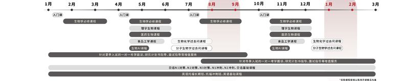
| 回 | 日付 | 曜日 | 授業内容 |
|---|---|---|---|
| 授業 1 | 2026/01/10 | ⼟曜⽇ | ⽣物 - ⼊⾨ |
| 回 | 日付 | 曜日 | 授業内容 |
|---|---|---|---|
| 2 | 2026/01/17 | ⼟曜⽇ | 基礎⽣物 - ⽣物化学 - アミノ酸 |
| 3 | 2026/01/24 | ⼟曜⽇ | 基礎⽣物 - ⽣物化学 - タンパク質の構造 |
| 4 | 2026/01/31 | ⼟曜⽇ | 基礎⽣物 - ⽣物化学 - 酵素関連 |
| 5 | 2026/02/07 | ⼟曜⽇ | 基礎⽣物 - ⽣物化学 - 糖質、脂質の構造 |
| 6 | 2026/02/14 | ⼟曜⽇ | 基礎⽣物 - 分⼦細胞⽣物学 - DNAの複製 |
| 7 | 2026/02/21 | ⼟曜⽇ | 基礎⽣物 - 分⼦細胞⽣物学 - DNAの修復、組み替え |
| 8 | 2026/02/28 | ⼟曜⽇ | 基礎⽣物 - 分⼦細胞⽣物学 - 転写 |
| 9 | 2026/03/07 | ⼟曜⽇ | 基礎⽣物 - 分⼦細胞⽣物学 - 翻訳 |
| 回 | 日付 | 曜日 | 授業内容 |
|---|
| 回 | 日付 | 曜日 | 授業内容 |
|---|---|---|---|
| 1 | 2026/04/11 | ⼟曜⽇ | ⽣物 - ⼊⾨ |
| 回 | 日付 | 曜日 | 授業内容 |
|---|---|---|---|
| 2 | 2026/04/18 | ⼟曜⽇ | 基礎⽣物 - ⽣物化学 - アミノ酸 |
| 3 | 2026/04/25 | ⼟曜⽇ | 基礎⽣物 - ⽣物化学 - タンパク質の構造 |
| 4 | 2026/05/02 | ⼟曜⽇ | 基礎⽣物 - ⽣物化学 - 酵素関連 |
| 5 | 2026/05/09 | ⼟曜⽇ | 基礎⽣物 - ⽣物化学 - 糖質、脂質の構造 |
| 1 | 2026/04/18 | ⼟曜⽇ | 理学⽣物 - ⽣物化学 - 糖質代謝 |
| 2 | 2026/04/25 | ⼟曜⽇ | 理学⽣物 - ⽣物化学 - 脂質代謝 |
| 3 | 2026/05/02 | ⼟曜⽇ | 理学⽣物 - ⽣物化学 - アミノ酸代謝関連 |
| 4 | 2026/05/09 | ⼟曜⽇ | 理学⽣物 - ⽣物化学 - ヌクレオチド代謝関連 |
| 回 | 日付 | 曜日 | 授業内容 |
|---|---|---|---|
| 6 | 2026/05/16 | ⼟曜⽇ | 基礎⽣物 - 分⼦細胞⽣物学 - DNAの構造、DNAの複製 |
| 7 | 2026/05/23 | ⼟曜⽇ | 基礎⽣物 - 分⼦細胞⽣物学 - DNAの修復、組み替え |
| 8 | 2026/05/30 | ⼟曜⽇ | 基礎⽣物 - 分⼦細胞⽣物学 - 転写 |
| 9 | 2026/06/06 | ⼟曜⽇ | 基礎⽣物 - 分⼦細胞⽣物学 - 翻訳 |
| 1 | 2026/04/12 | ⽇曜⽇ | 医薬⽣物 - 分⼦細胞⽣物学 - 遺伝⼦発現調節 |
| 2 | 2026/04/19 | ⽇曜⽇ | 医薬⽣物 - 分⼦細胞⽣物学 - 細胞膜構造、低分⼦の膜輸送と膜の電気的性質 |
| 3 | 2026/04/26 | ⽇曜⽇ | 医薬⽣物 - 分⼦細胞⽣物学 - 細胞内区画とタンパク質選別 |
| 4 | 2026/05/03 | ⽇曜⽇ | 医薬⽣物 - 分⼦細胞⽣物学 - 細胞内運送システム、エネルギー変換 |
| 5 | 2026/05/10 | ⽇曜⽇ | 医薬⽣物 - 分⼦細胞⽣物学 - 細胞シグナル、細胞⾻格 |
| 授業 6 | 2026/05/17 | ⽇曜⽇ | 医薬⽣物 - 分⼦細胞⽣物学 - 細胞周期と細胞死、細胞連結と細胞外基質 |
| 7 | 2026/05/24 | ⽇曜⽇ | 医薬⽣物 - 分⼦細胞⽣物学 - がん |
| 8 | 2026/05/31 | ⽇曜⽇ | 医薬⽣物 - 分⼦細胞⽣物学 - 免疫 |
| 回 | 日付 | 曜日 | 授業内容 |
|---|---|---|---|
| 5 | 2026/05/16 | ⼟曜⽇ | 理学⽣物 - 細胞の研究法 - 遺伝⼦組み換え技術、遺伝⼦増幅技術、RNAとタンパク質精製 |
| 6 | 2026/05/23 | ⼟曜⽇ | 理学⽣物 - 細胞の研究法 - 遺伝⼦のノックダウン、ノックイン技術、免疫沈降法（IP） |
| 7 | 2026/05/30 | ⼟曜⽇ | 理学⽣物 - 細胞の研究法 - RT-qPCR、SDS-PAGE、WB |
| 8 | 2026/06/06 | ⼟曜⽇ | 理学⽣物 - 細胞の研究法 - NGS（DNA-seq, RNA-seq） |
| 回 | 日付 | 曜日 | 授業内容 |
|---|---|---|---|
| 1 | 2026/04/13 | ⽉曜⽇ | ⾷品⼯学 - 主要な⾷品成分（⽔、タンパク質、脂質、糖質等）の構造 |
| 2 | 2026/04/20 | ⽉曜⽇ | ⾷品⼯学 - ⾷品化学的・⽣化学的特性 |
| 3 | 2026/04/27 | ⽉曜⽇ | ⾷品⼯学 - ⾷品成分間相互作⽤ |
| 4 | 2026/05/04 | ⽉曜⽇ | ⾷品⼯学 - ⾷品の変質・劣化 |
| 5 | 2026/05/11 | ⽉曜⽇ | ⾷品⼯学 - ⾷品添加物、味成分と味覚、加⼯・物性機能 |
| 6 | 2026/05/18 | ⽉曜⽇ | ⾷品⼯学 - ⽣体調節機能、機能性⾷品 |
| 7 | 2026/05/25 | ⽉曜⽇ | ⾷品⼯学 - ニュートリゲノミクス、⾷の安全性 |
| 回 | 日付 | 曜日 | 授業内容 |
|---|---|---|---|
| 1 | 2026/04/14 | ⽕曜⽇ | ⽣物AI - バイオインフォマティクス概観 |
| 2 | 2026/04/21 | ⽕曜⽇ | ⽣物AI - 関数の実装，ニューラルネットワーク，データから学習する |
| 3 | 2026/04/28 | ⽕曜⽇ | ⽣物AI - PyTorchでニューラルネットワークの実装、 画像の分類、転移学習 |
| 4 | 2026/05/05 | ⽕曜⽇ | ⽣物AI -バッチ処理システム、CNN・VGG16・Transfomerモデル |
| 回 | 日付 | 曜日 | 授業内容 |
|---|---|---|---|
| 1 | 2026/06/06 | ⼟曜⽇ | 過去問 - ⽣物化学⽅向 - 東京⼤学理学系研究科⽣物科学専攻 |
| 2 | 2026/06/13 | ⼟曜⽇ | 過去問 - ⽣物化学⽅向 - 東京⼤学医学研究科医科学専攻 |
| 3 | 2026/06/20 | ⼟曜⽇ | 過去問 - ⽣物化学⽅向 - 東京⼤学薬学研究科薬科学専攻 |
| 4 | 2026/06/27 | ⼟曜⽇ | 過去問 - ⽣物化学⽅向 - 東京⼤学新領域創成科学研究科メディカル情報⽣命専攻 |
| 5 | 2026/07/11 | ⼟曜⽇ | 過去問 - ⽣物化学⽅向 - 東京⼤学新領域創成科学研究科先端⽣命科学専攻 |
| 6 | 2026/07/18 | ⼟曜⽇ | 過去問 - ⽣物化学⽅向 - 東京⼤学農学⽣命科学研究科応⽤⽣命化学専攻 |
| 7 | 2026/07/25 | ⼟曜⽇ | 過去問 - ⽣物化学⽅向 - 東京⼤学農学⽣命科学研究科応⽤⽣命⼯学専攻 |
| 8 | 2026/08/01 | ⼟曜⽇ | 過去問 - ⽣物化学⽅向 - 東京科学⼤学⽣命理⼯学院⽣命理⼯学系 |
| 1 | 2026/06/07 | ⽇曜⽇ | 過去問 - 分⼦⽣物学⽅向 - 東京⼤学理学系研究科⽣物科学専攻 |
| 2 | 2026/06/14 | ⽇曜⽇ | 過去問 - 分⼦⽣物学⽅向 - 東京⼤学医学研究科医科学専攻 |
| 3 | 2026/06/21 | ⽇曜⽇ | 過去問 - 分⼦⽣物学⽅向 - 東京⼤学薬学研究科薬科学専攻 |
| 4 | 2026/06/28 | ⽇曜⽇ | 過去問 - 分⼦⽣物学⽅向 - 東京⼤学新領域創成科学研究科メディカル情報⽣命専攻 |
| 5 | 2026/07/12 | ⽇曜⽇ | 過去問 - 分⼦⽣物学⽅向 - 東京⼤学新領域創成科学研究科先端⽣命科学専攻 |
| 6 | 2026/07/19 | ⽇曜⽇ | 過去問 - 分⼦⽣物学⽅向 - 東京⼤学農学⽣命科学研究科応⽤⽣命化学専攻 |
| 7 | 2026/07/26 | ⽇曜⽇ | 過去問 - 分⼦⽣物学⽅向 - 東京⼤学農学⽣命科学研究科応⽤⽣命⼯学専攻 |
| 8 | 2026/08/02 | ⽇曜⽇ | 過去問 - 分⼦⽣物学⽅向 - 東京科学⼤学⽣命理⼯学院⽣命理⼯学系 |
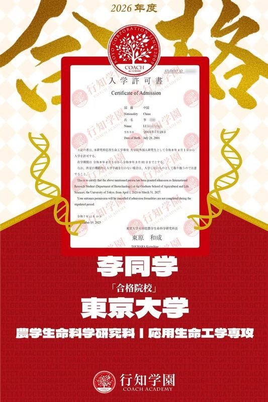
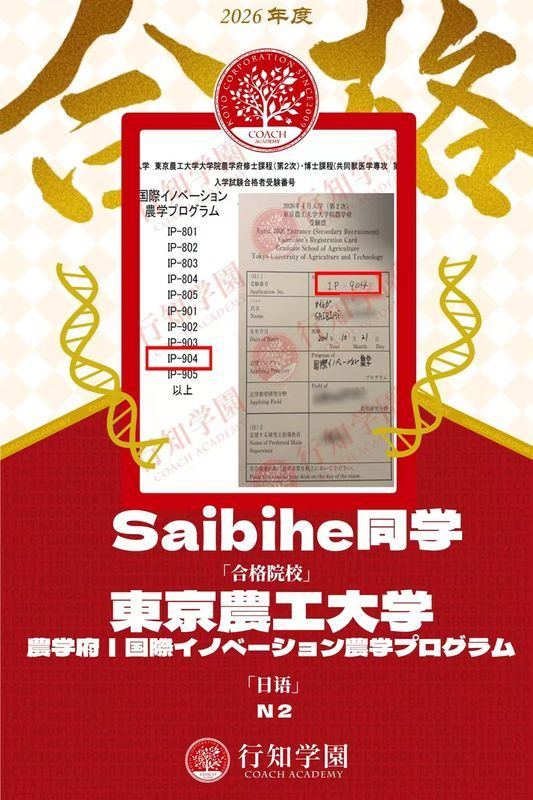
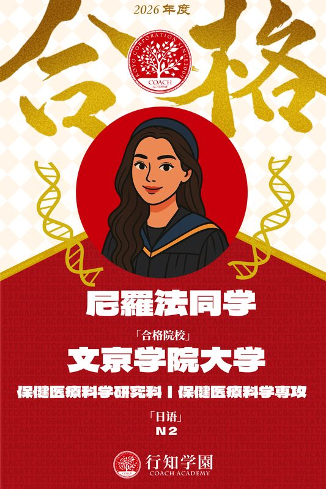
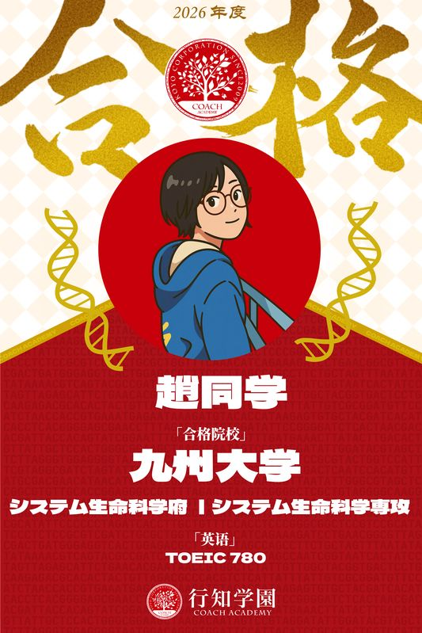
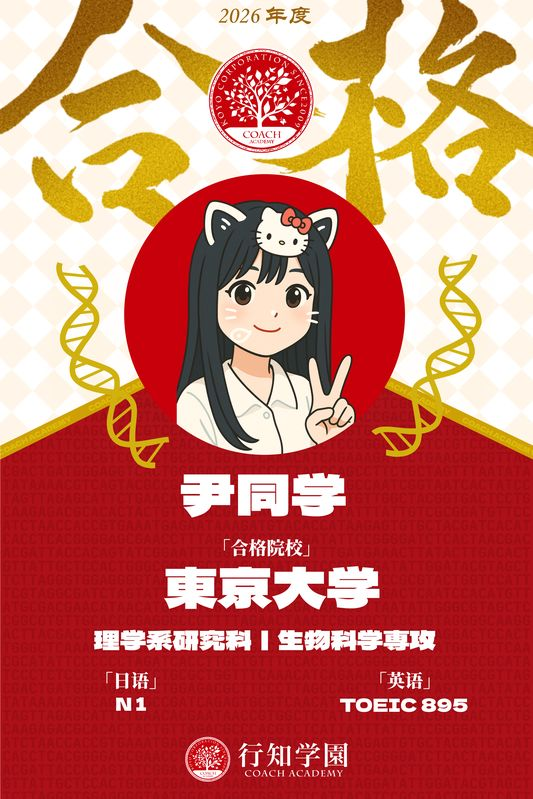
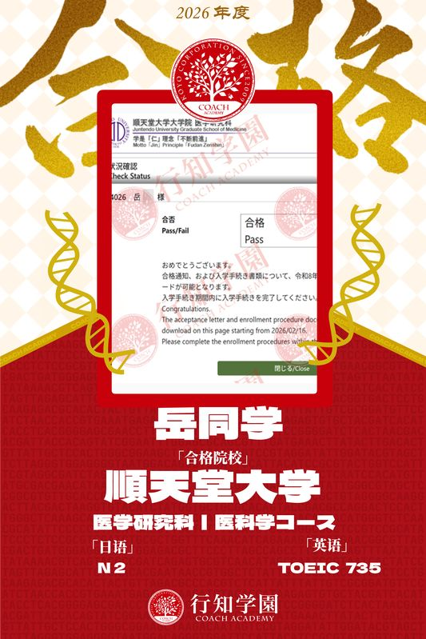
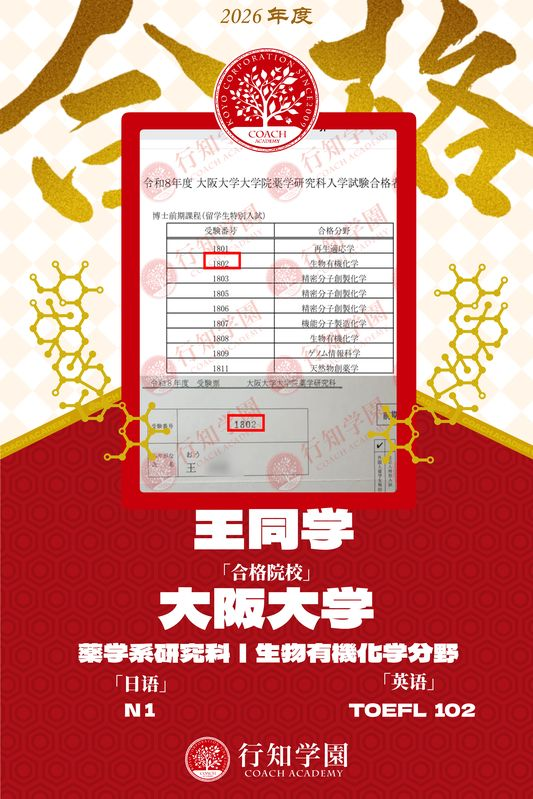
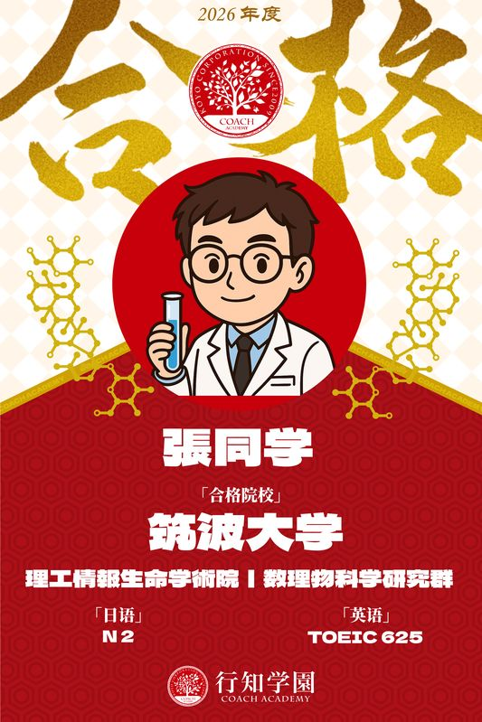
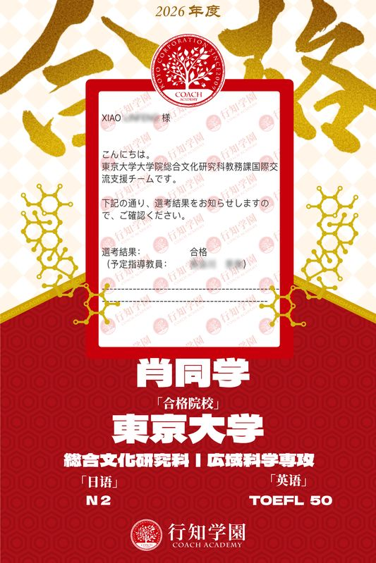
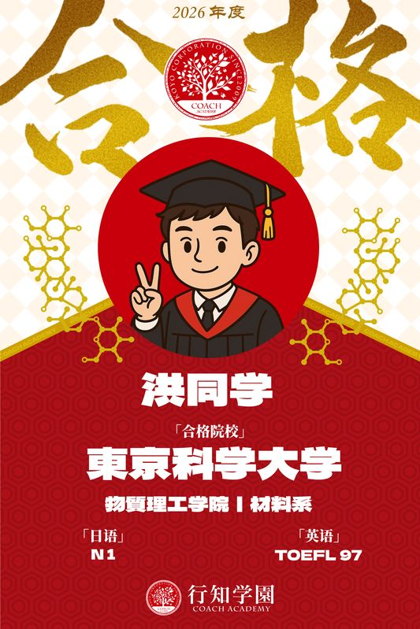
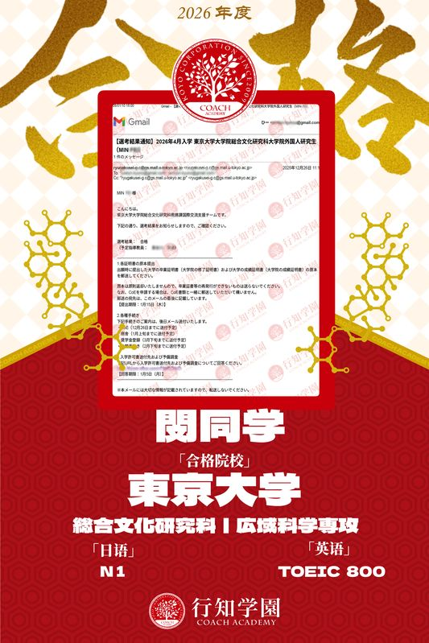
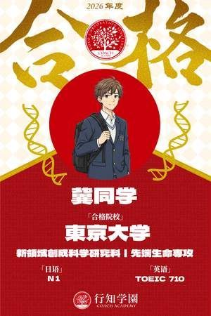
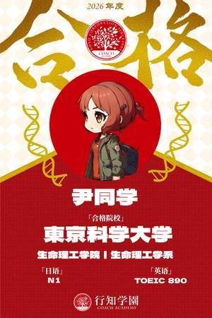
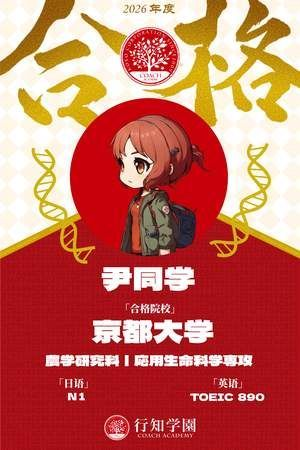
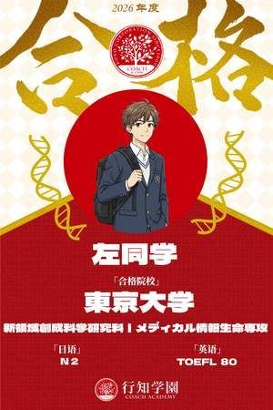
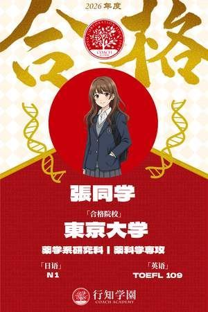
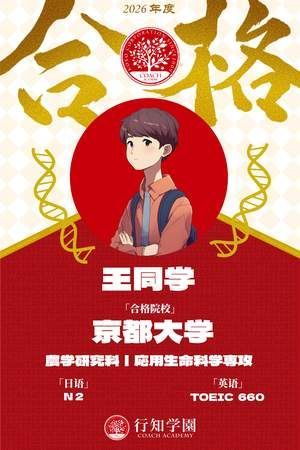
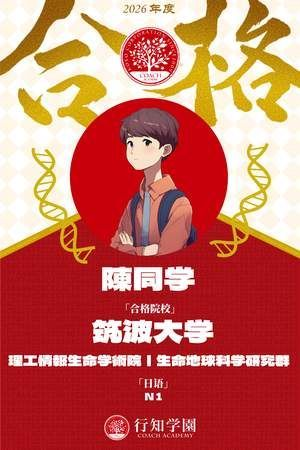
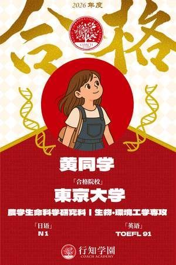
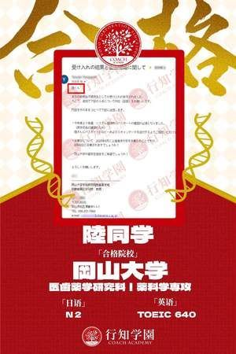
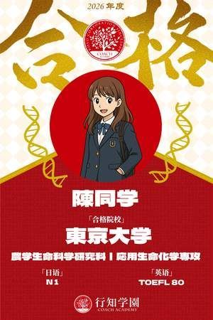
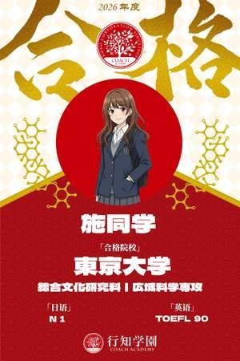
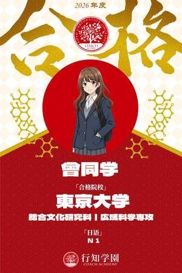
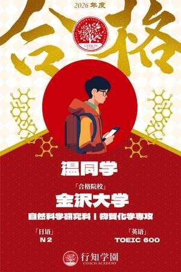
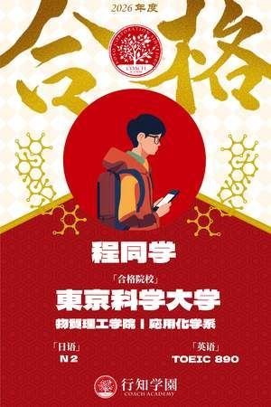
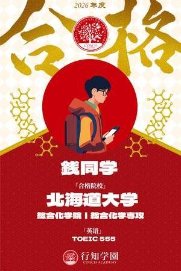
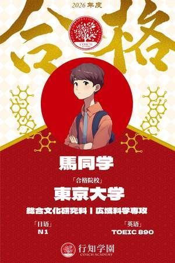
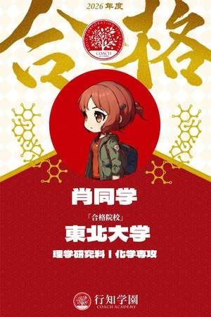
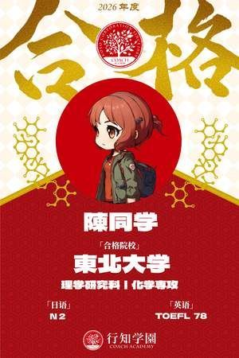
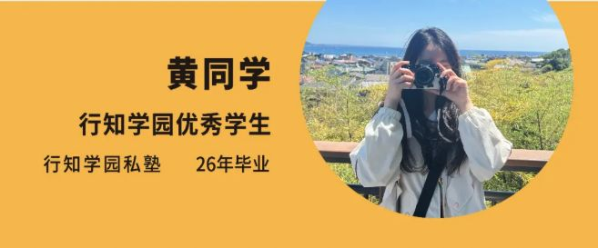
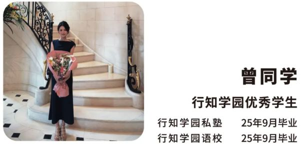
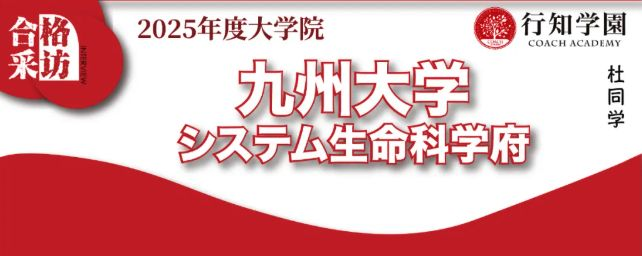